실습형 교안 · 멀티캠퍼스 · 파이썬 업무 자동화
ChatGPT와 파이썬으로
쉽게 시작하는 업무자동화
자동화 기초·업무 구조화 → ChatGPT로 파이썬 코드 생성 → 엑셀 편집·물리 자동화·이메일·대시보드 → 코딩 에이전트·웹 크롤링·API 보고서까지 3일 실습
교육 목표
전체 학습 목표
- 자동화의 필요성을 설명할 수 있다.
- 나의 업무 중에서 자동화가 필요한 작업을 설명할 수 있다.
- 파이썬 사용을 위한 세팅을 할 수 있다.
- 나의 업무를 구조적으로 설명할 수 있다.
- AI를 활용해 자동화 프로그램을 제작할 수 있다.
- 자동화 프로그램의 결과가 맞는지 검증하고 잘못 나왔을 경우 정확하게 수정할 수 있다.
1일차
학습 목표
- 자동화의 필요성을 설명할 수 있다.
- 파이썬과 VS코드를 설치할 수 있다.
- 업무를 작게 나누고 Input-Process-Output을 설명할 수 있다.
- 자동화 코드를 만드는 프롬프트를 만들 수 있다.
- 생성된 코드의 수정을 요청할 수 있다.
- 데이터의 구조를 파악하고 처리하기 쉬운 형식으로 가공할 수 있다.
강의 예제 파일은 “바탕화면”에 압축을 풀어서 준비해주세요.
강사 소개
강사 소개
로직플로우 대표 · Logic Flow Architect
기능이 아닌, 시간과 성장을 제공
일잘러스쿨 유튜브 운영
- 엑셀·한글·AI·자동화 교육 영상 업로드
- 일잘러스쿨 채널 바로가기 (youtube.com/@iljal-school)
영상 시리즈
- AI와 함께하는 VBA
- AI와 함께하는 파이썬
- 함수 없이 배우는 엑셀
- 선생님 질문 있어요!
문의 · 연락
- 일잘러 스쿨 질문방
- 프밍쌤
- 연락처: 010-9088-8741
- 홈페이지: logicflow.ai.kr
전공
- 건국대학교 교육공학과 학부·석사 졸업
- 건국대학교 교육공학과 박사 과정 수료
강의
- ChatGPT와 파이썬으로 쉽게 시작하는 업무자동화 · 멀티캠퍼스
- 챗GPT를 활용한 업무 자동화 · 한국과학기술정보연구원(KISTI)
- [Ctrl+AI] 2일만에 끝내는 파이썬 업무 자동화 프로젝트 with ChatGPT · 멀티캠퍼스
- AI활용 역량 강화를 위한 교직원 연수 · 공주교육대학교
- AI활용 실무: 사무자동화 마스터 클래스 · YMCA
- AI활용 사무자동화 클래스 (파이썬 / 엑셀 VBA)
- 생성형 AI로 맛보는 파이썬 자동화
- 함수 없이 쉽게 배우는 엑셀
- 도서관 사서를 위한 엑셀 실무 교육
자동화 프로그램 개발
AI와 함께 개발
- 국내 대기업 DX프로젝트 자동화 프로그램 — VBA with ChatGPT
- 데이터 기반 공정지도 대시보드 — VBA with ChatGPT
- 나라장터 키워드 검색 및 트래킹 시스템 — 파이썬 with Claude
- 역량 측정 보고서 자동 생성 프로그램 — 파이썬 with Cursor
- 지출결의서 내역 비교로 누락 내역 찾기 — 파이썬 with Claude
- 엑셀 지출결의 내용 회사 시스템 자동 업로드 — VBA with ChatGPT
- 카드승인번호로 매출 전표 영수증 자동 캡쳐 저장 — 오토핫키, 파이썬
- 카드내역 전각/반각 문자 자동 변환 — VBA with ChatGPT
엑셀 · 오토핫키
- 교육평가결과 자동 계산 시스템
- 교육 운영 후 통계 자료 자동 생성
- 주간 업무 보고 자료 자동 생성
- 만족도 조사 결과 보고서 내용 자동 작성
- 전체 수료증 자동 출력 파일
- 엑셀 일정표를 구글 캘린더로 입력 (오토핫키)
자동화&파이썬&AI
자동화&파이썬&AI
2.1자동화
1.내가 하기 귀찮은 일을 자동으로 하도록 하는 것
가장 편한 자동화는?
다른 사람에게 시키기
- 시킬 사람이 없으면 기계나 컴퓨터를 써야함
💻 컴퓨터에게 시키면 좋은 점
- 반복 작업을 질리지 않고 한다.
- 실수가 없다.
- 일관적인 결과물이 나온다.
- 내가 안해도 된다.
좀 더 기술적인 설명
다양한 프로세스와 기계장치에서 의사 결정 기준과 작업을 미리 설정하여
인간의 개입을 최소화하는 기술
2.2자동화는 왜 필요할까?
- 나는 왜 맨날 시간이 없을까?
- 회사에서 하는 일 중 상당 부분은 단순 반복 업무
- 진짜 내가 해야 할 일은 얼마나 하고 있을까?
사람의 개입이 필요하지 않은 일은 자동화 함으로써
생산성을 향상 시키고 좀 더 가치 있는 일을 할 수 있는
시간을 확보 할 수 있다.
2.3자동화가 어려웠던 이유
1.프로그래밍에 대한 심리적 장벽
시작 자체를 막는 인식과 두려움
- 코딩 = 어려운 영역이라는 선입견
- 에러 및 실패에 대한 과도한 부담
- 학습 시간 대비 효용에 대한 회의감
2.비용 및 유지보수 문제
자동화 도입 자체를 어렵게 만드는 현실적 제약
- 개발자 고용 비용 부담 (수백~수천만 원)
- 외주 결과물의 불확실성
- 지속적인 유지보수 의존성 발생
3.커뮤니케이션 문제
실행 과정에서 발생하는 비효율
- 실무자와 개발자 간 언어 차이
- 요구사항 문서화 부담
- 수정 요청 시 긴 대기 시간
- 업무 맥락 전달의 어려움
2.4자동화가 쉬워진 이유
1.How → What 중심 변화
기술 중심에서 문제 정의 중심으로 이동
- 과거: "어떻게 만들 것인가" (코딩 중심)
- 현재: "무엇을 만들 것인가" (문제 정의 중심)
- 구현은 AI가 담당
2.바이브 코딩의 본질
AI와 협업하는 새로운 방식
- 자연어로 요구사항 전달
- AI가 코드 생성 및 수정
- 실무자는 업무 이해에 집중
여기서 잠깐!
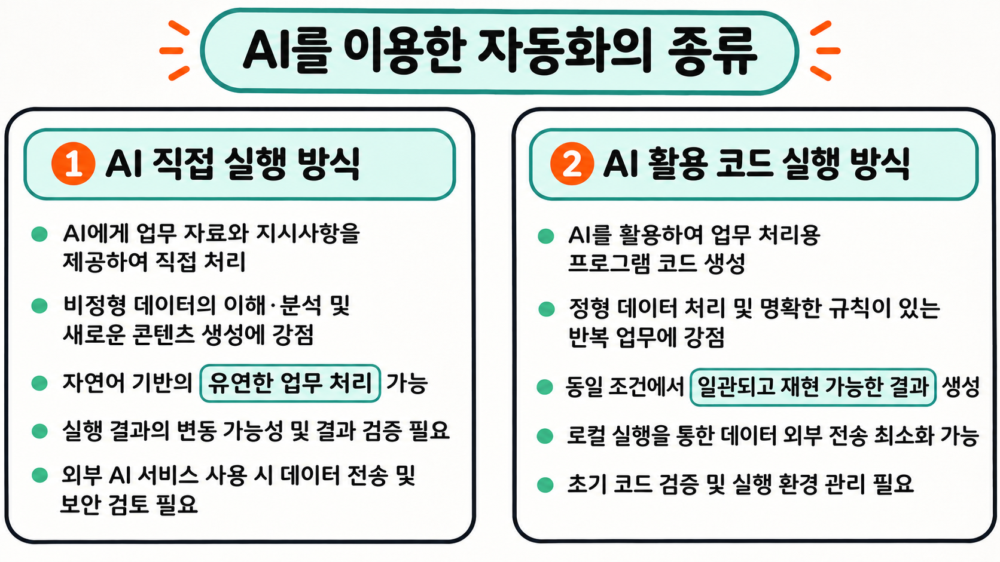
2.5왜 하필 파이썬인가
1.파이썬의 장점
기존 툴을 대체하는 것이 아닌 연결하는 역할
- 노코드/로우코드 툴과 경쟁 관계 아님
- 여러 도구를 통합하는 허브 역할
2.종합적 제어 능력
- 다양한 서비스(엑셀, 웹, 이메일 등) 통합 가능
- 하나의 스크립트로 전체 자동화 실행
- 복잡한 업무 흐름도 일괄 처리
3.AI와의 최적화된 호환성
- 가장 많은 학습 데이터 보유
- AI가 가장 정확하게 코드 생성
- 자연어 → 실행 코드 변환 효율 높음
4.가독성과 수정 용이성
- 사람 중심 설계 (비전공자도 읽기 쉬움)
- 코드 수정 및 확장 용이
- 부분 수정 기반의 개발 가능
5.데이터 보안 측면의 장점
- 업무 데이터를 AI에 직접 업로드하지 않아도 됨
- 파이썬이 내 PC의 파일을 직접 읽고 처리하도록 구성 가능
- 민감한 사내 데이터는 로컬에서 처리하고, 필요한 결과만 활용 가능
- 보안 정책이 엄격한 환경에서도 활용 범위를 조정하기 쉬움
AI는 코드를 만들고, 실제 데이터 처리는 내 컴퓨터에서 실행할 수 있음
2.6파이썬 어렵지 않을까요?
1.이제 파이썬은 배우는 것이 아니라 사용하는 것
- 문법 암기 불필요
- AI와 협업 중심 접근
2.나의 역할은 개발자가 아니라 기획자
- 코드 작성자가 아닌 수정/조정자
- AI가 생성한 코드 기반 활용
필요한 것부터 순차적으로 학습
- 전체 이해 불필요
- 필요한 부분만 선택적 학습
2.7자동화 예시
- 내가 꿈꾸는 자동화
- 28개 학과에 대한 “학생 역량 진단 보고서 자동 생성”

보고서 생성 프로그램을 만들기 위한 시간: 2주
- 데이터 전처리
- 로직 구상
- 한글 파일 템플릿 제작
- 기초 통계 분석
- 분석 결과 한글 표에 옮기기
- 차트 생성
- 차트 생성 이미지 한글 파일에 옮기기
- 학과별로 생성된 파일 하나로 합치기
- 항목별 차트 그리기
- 홈페이지에서 자료 다운 받기
- 엑셀 데이터 한글로 옮기기
- PDF파일에서 승인번호 찾아서 이미지로 캡쳐하기
개발 환경 구축
개발 환경 구축
3.1파이썬
https://app.notion.com/p/9c34b7438cc283bab98301158b16ebd2
- 파이썬: https://www.python.org/downloads/
- 우리가 사용할 버전: 3.13.12
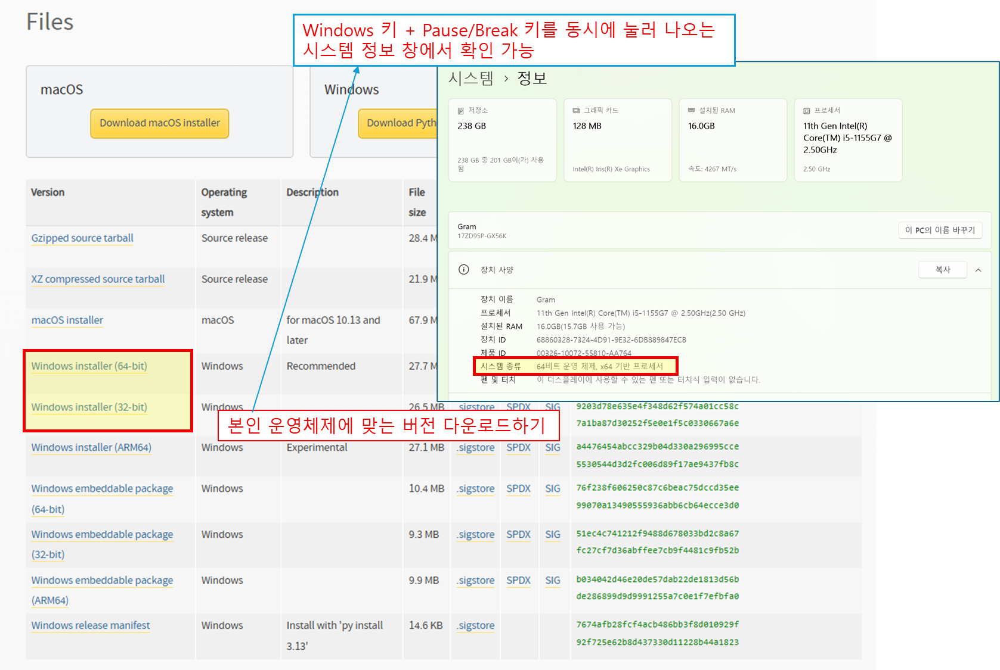
- 인스톨 할 때 주의 할 점
반드시 Add python.exe to PATH에 체크
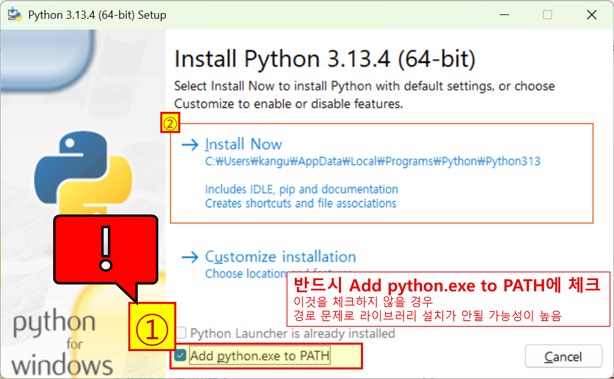
3.2VS Code
- VS Code: code.visualstudio.com
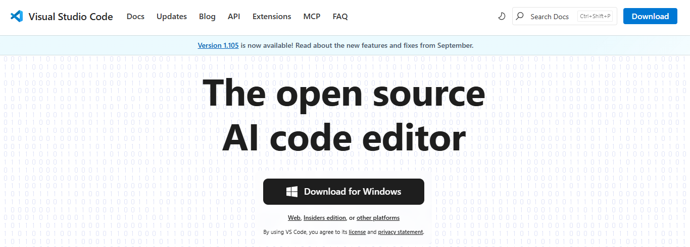
- 설치 후 익스텐션 설치
- 정의: 에디터 기능을 추가·확장하는 플러그인 모듈
- 필요성: 언어 지원 강화, 자동 완성·디버깅·포매팅·테스트 등 개발 생산성·일관성 향상
| 익스텐션 | 주요 기능 요약 | 역할 |
|---|---|---|
| Python | 실행·디버깅·환경 설정 | 기본 실행 기반 |
| Pylance | 자동완성·오류 탐지·타입 힌트 | 개발 편의성 향상 |
| Jupyter | 셀 단위 실행·시각화 | 실습·분석·데모용 환경 |
| Korean Language Pack | 메뉴·명령어 등 인터페이스 한글 표시 | 한국어 버전 사용 |
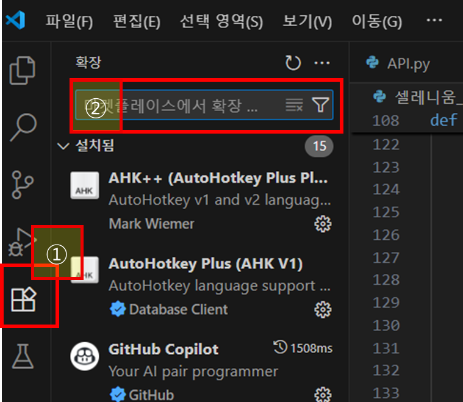

- 파이썬 파일 생성
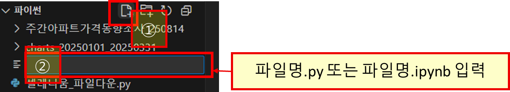
1.VS코드 기본 편집 기능
| 기능 | 단축키 | 설명 |
|---|---|---|
| 들여쓰기 / 내어쓰기 | Tab / Shift + Tab | 선택한 줄 또는 커서가 있는 줄을 4칸씩 들여쓰기 또는 반대로 내어쓰기 함. 코드 구조를 정리하거나 블록 구문을 맞출 때 사용 |
| 주석 토글 | Ctrl + / | 커서가 있는 줄 또는 선택된 줄을 한 줄 주석으로 처리하거나 해제함. 테스트 중 코드 비활성화나 설명 추가 시 사용 |
| 컨트롤 + 클릭 (정의로 이동) | Ctrl + 클릭 | 함수, 변수, 클래스 등의 이름을 클릭하면 해당 정의 위치로 즉시 이동함. 코드 추적이나 함수 구조 파악에 유용 |
| 동일한 내용 선택 | Ctrl + Shift + L | 함수, 변수, 클래스 등의 이름을 클릭하면 해당 정의 위치로 즉시 이동함. 코드 추적이나 함수 구조 파악에 유용 |
| 다음 동일 항목 선택 | Ctrl + D | 커서가 위치한 단어나 선택한 텍스트와 동일한 다음 항목을 순차적으로 선택함. 여러 위치를 한 번에 수정할 때 사용 |
| 줄 복제 | Shift + Alt + ↓ | 현재 줄을 바로 아래로 복제함. ↑로 위쪽에도 복제 가능. 비슷한 코드를 여러 줄 작성할 때 유용 |
| 접었다 펴기 | Ctrl + Shift + [ (접기) / Ctrl + Shift + ] (펴기) | 함수, 클래스, 조건문 등 코드 블록을 접거나 펼침. 복잡한 파일에서 가독성을 높일 때 사용 |
3.3Google Colab

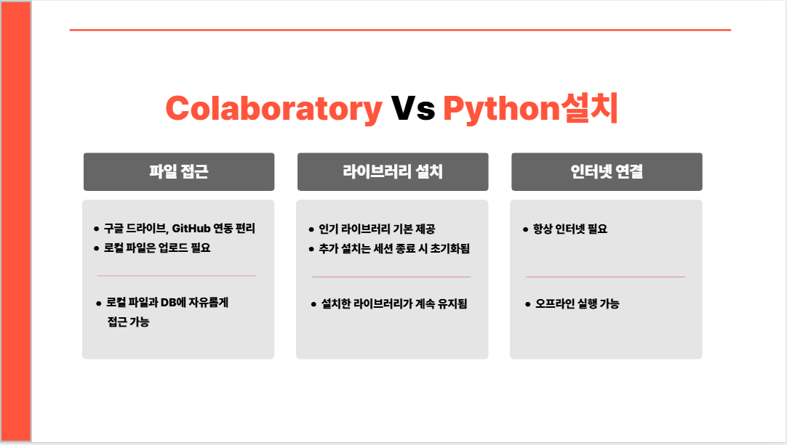

1.주의사항
- 고정적으로 써야 하는 파일은 구글 드라이브에 업로드 해놓고 “마운트”해서 사용하는 것을 추천코드고정적으로 써야 하는 파일은 구글 드라이브에 업로드 해놓고 “마운트”해서…
# 1. 구글 드라이브 마운트 from google.colab import drive drive.mount('/content/drive') - 매번 바뀔 수 있는 파일이라면 업로드를 하도록 설정코드매번 바뀔 수 있는 파일이라면 업로드를 하도록 설정
from google.colab import files uploaded = files.upload() filename = list(uploaded.keys())[0]
- 저장된 파일을 다시 활용해야 한다면 업로드한 폴더에 저장 해달라고 요청
- 최종 결과물은 다운로드 받도록 하는 것을 추천코드최종 결과물은 다운로드 받도록 하는 것을 추천
from google.colab import files 원래 있던코드(파일명 생성) * 파일명: 경로와 확장자까지 모두 저장되어있는 변수 files.download(파일명) - 차트를 그릴 때 한글이 필요하다면 반드시 한국어를 설치 해달라고 요청프롬프트차트를 그릴 때 한글이 필요하다면 반드시 한국어를 설치 해달라고 요청
차트에 한글이 적용되어야 하니까 **꼭!!! 한글 글꼴을 적용**해줘! **font_path를 정확히 지정해줘**
- 만약 여러 번 요청해도 설치를 못 할 경우. 다음 내용을 붙여 넣으세요.
!apt-get -qq install -y fonts-nanum font_path = '/usr/share/fonts/truetype/nanum/NanumGothic.ttf' fm.fontManager.addfont(font_path) plt.rcParams['font.family'] = 'NanumGothic'위 코드는 글꼴이 정상적으로 설치된 코드의 일부야. 이 내용을 참고해서 수정해줘.
2.구글 드라이브 > 내 드라이브에 폴더 생성
- 구글 드라이브 주소: https://drive.google.com/
- 실습을 위한 새로운 폴더 만들기
- 신규 → 폴더 클릭 → “멀캠_파이썬”생성
- 실습을 위한 새로운 파일 만들기
- 신규 → 더 보기 → Google Colaboratory 클릭
- 제목 바꾸기: 제목을 안 바꾸면 나중에 어떤 파일인지 헷갈림

- AI에서 생성된 코드를 코드셀 안에 붙여넣고 플레이 버튼 누르기

3.QR코드 만들기
- 파이썬으로 QR코드를 만들 수 있는지 확인
- 어떤 QR코드를 만들고 싶은지 최종 아웃풋을 명확하게 생각
최종 아웃풋 형태

- 프롬프트 작성하기
당신은 파이썬 전문가입니다. 저는 파이썬 초보자이며 Google Colab에서 실행할 코드를 만들고 싶습니다. [요구사항] 1) 모든 코드는 Google Colab에서 바로 실행 가능해야 합니다. 필요한 경우 !pip install 코드도 포함해주세요. 2) 재사용이 가능하도록 주요 기능은 함수로 구성해주세요. 각 함수에는 한국어 docstring을 작성해주세요. 3) 주석은 단계 번호 형식으로 달아주세요. 예: # (1) CSV 파일 불러오기 또한 거의 모든 줄에 **무엇을 하는지 + 가능한 경우 이유**를 설명해주세요. 4) 코드 흐름을 이해하기 쉽게 main() 함수와 `if __name__ == "__main__": main()` 구조를 포함해 주세요. 5) 각 주요 단계마다 **[DEBUG]**로 시작하는 디버그용 print를 넣어주세요. (예: 진행 단계, 변수 크기/타입, 샘플 값 등) 6) 코드 작성 후 아래 내용을 추가로 작성해주세요. - 코드 전체 동작 요약 - 초보자가 자주 실수하는 부분 3개 7) 한국어 데이터 처리 시 반드시 다음을 포함해주세요: - 그래프에 한글 포함 시: '나눔 고딕'(Nanum Gothic) 폰트로 설정하고, 마이너스 기호(-) 깨짐 방지 코드도 포함 [작업 설명] ## INPUT ## PROCESS ## OUTPUT
프롬프트 예시(미리 열어보지 마세요!)
[작업 설명] ## 목적 웹페이지로 바로 접속할 수 있는 QR코드를 생성, 코드 구분을 위하여 사이트명 동시 출력 ## INPUT 접속할 사이트 URL주소 접속할 사이트 이름(한글일 가능성 있음) ## PROCESS URL에 해당하는 큐알코드 생성 사이트 명을 큐알코드 하단 중앙에 추가 ## OUTPUT 파일의 제목은 "사이트명_QR코드.png"로 생성
3.4경로 불일치 오류시 해결 방법
- VS코드의 터미널 창에 다음을 입력해서 나온 경로를 복사한다.
python -c "import sys; print(sys.executable)"

- VS코드의 가운데 상단에 있는 돋보기 있는 부분을 클릭하고 다음 명령어를 입력한다.
(>python: sele 정도까지 입력한 다음 보이는 메뉴를 클릭)
>python: select interpretier

- 대부분 1에서 복사한 경로와 일치하는 경로를 추천해주는데 불일치 할 경우
”Enter interpreter path…”를 클릭하고 1의 경로를 입력한다.

업무 구조화력
업무 구조화력
업무를 사람·AI·컴퓨터가 처리할 수 있도록
명확하게 나누고 설명하는 능력
1.왜 업무 구조화력이 중요할까?
- 많은 업무는 담당자의 경험과 감각에 의존
- 본인은 알고 있지만 다른 사람에게 설명하기 어려운 경우가 많음
- 업무가 한 덩어리로 보이면 자동화 가능 여부를 판단하기 어려움
- AI에게 일을 맡겨도 요구사항이 불명확하면 결과도 불명확
- 자동화 도구보다 먼저 필요한 것은 업무를 명확하게 보는 능력
좋은 자동화는 좋은 코드보다 좋은 업무 정의에서 시작된다.
2.업무를 잘한다 ≠ 업무를 설명할 수 있다
- 익숙한 업무는 생각하지 않고도 처리 가능
- 하지만 익숙함과 구조화는 다른 능력
- "그냥 이렇게 하면 됩니다"라는 설명으로는 다른 사람이 그대로 수행하기 어려움
- 자동화하려면 머릿속에 있는 판단 기준과 작업 순서를 밖으로 꺼내야 함
3.예시
구조화되지 않은 업무
- 매출 파일 정리하기
- 보고서 만들기
- 이상한 데이터 확인하기
구조화된 업무
- 폴더 안의 매출 파일을 모두 불러오기
- 파일의 데이터를 하나의 표로 합치기
- 거래일자, 지점명, 상품명, 매출액만 남기기
- 지점명이 없는 데이터는 별도로 분리하기
- 지점별 매출 합계를 계산하기
- 전월 대비 20% 이상 감소한 지점을 표시하기
- 결과를 새로운 엑셀 파일로 저장하기
업무 구조화는 막연한 일을 실행 가능한 작업으로 바꾸는 과정
4.1업무 구조화의 5단계
1.결과를 정의한다
무엇을 해야 하는가보다 무엇이 만들어져야 하는가를 먼저 생각
- 이 일을 왜 하는가?
- 최종 결과물은 무엇인가?
- 누가 결과물을 사용하는가?
- 어떤 형태로 전달해야 하는가?
- 완료되었다고 판단하는 기준은 무엇인가?
예시
막연한 표현
- 매출 분석하기
결과 중심 표현
- 지점별 월 매출을 비교하고
- 전월 대비 매출이 20%이상 감소한 지점을 찾아
- 담당자가 확인할 수 있는 보고서를 만든다
2.일을 나눈다
큰 업무를 한 번에 해결하려 하지 않고 작은 작업으로 나누기
월간 매출 보고서 작성
- 자료 받기
- 파일 확인하기
- 데이터 합치기
- 필요한 항목만 정리하기
- 오류 데이터 확인하기
- 지점별 매출 계산하기
- 전월과 비교하기
- 차트 만들기
- 결과 확인하기
- 분석 결과에 대한 해석 작성하기
- 보고서 양식에 맞춰서 작성하기
중요한 질문
"이 업무를 자동화할 수 있을까?"가 아니라"이 업무 중 어떤 부분을 자동화할 수 있을까?"
- 모든 업무를 자동화할 필요는 없음
- 사람이 판단해야 하는 부분과 기계가 처리할 부분을 구분
- 작은 단위로 나눌수록 자동화 가능 영역이 보이기 시작함
3.Input → Process → Output으로 본다
모든 업무를 입력, 처리, 결과의 흐름으로 바라보기
Input
- 무엇이 들어오는가?
- 어디에서 가져오는가?
- 어떤 형태인가?
- 필요한 정보가 모두 있는가?
Process
- 들어온 자료로 무엇을 하는가?
- 어떤 순서로 처리하는가?
- 무엇을 계산하는가?
- 어떤 기준으로 판단하는가?
- 무엇을 반복하는가?
Output
- 최종적으로 무엇을 만드는가?
- 어떤 파일 형식인가?
- 어떤 내용이 포함되어야 하는가?
- 어디에 저장하거나 전달하는가?
업무를 흐름으로 보기
INPUT
여러 지점의 월별 매출 엑셀 파일
↓
PROCESS
- 파일 취합
- 데이터 정리
- 오류 확인
- 지점별 매출 계산
- 전월 비교
- 차트 생성
↓
OUTPUT
월간 매출 분석 보고서
업무를 Input → Process → Output으로 표현할 수 있다면 자동화 설계가 훨씬 쉬워진다.
4.규칙을 명확하게 만든다
사람이 당연하게 처리하던 판단을 명확한 기준으로 표현
업무에는 생각보다 많은 규칙이 숨어 있음
조건
- 매출이 전월 대비 20% 이상 감소하면 표시
- 금액이 100만 원 이상이면 승인 요청
- 이메일 제목에 "긴급"이 포함되어 있으면 우선 처리
반복
- 폴더 안의 모든 파일 처리
- 직원별로 동일한 보고서 생성
- 매월 같은 방식으로 데이터 정리
순서
- 데이터를 합친 후 중복 제거
- 중복을 제거한 후 합계 계산
- 계산이 끝난 후 차트 생성
예외
- 파일이 없는 경우
- 값이 비어 있는 경우
- 예상하지 못한 형식의 데이터가 들어온 경우
- 동일한 데이터가 중복되어 있는 경우
자동화에서는 '보통 이렇게 합니다'보다 '이 경우에는 이렇게 처리합니다'가 중요하다.
5.검증 방법을 정한다
자동화의 끝은 실행이 아니라 확인
- 결과가 맞는지 어떻게 확인할 것인가?
- 누락된 데이터는 없는가?
- 중복된 데이터는 없는가?
- 계산 결과가 원본과 일치하는가?
- 예상하지 못한 데이터가 포함되어 있지는 않은가?
예시
- 원본 데이터 행 수와 처리 후 데이터 행 수 비교
- 총 매출액이 원본 합계와 일치하는지 확인
- 빈 값의 개수 확인
- 오류 데이터 별도 시트로 저장
- 처리 결과와 제외된 데이터를 함께 기록
잘 만든 자동화는 결과뿐 아니라 확인 방법까지 포함한다.
6.업무 구조화력의 핵심 요소
| 핵심 요소 | 의미 |
|---|---|
| 목표 정의 | 무엇을 왜 만드는지 명확하게 하기 |
| 업무 분해 | 큰 일을 실행 가능한 단위로 나누기 |
| 흐름 파악 | Input → Process → Output 연결하기 |
| 기준 명확화 | 조건·반복·순서·예외 정의하기 |
| 검증 설계 | 결과가 맞는지 확인하는 방법 만들기 |
4.2업무 구조화력과 AI
1.AI에게 일을 잘 시키려면 먼저 내가 일을 알아야 한다
AI에게
"이 엑셀 파일 분석해줘"
라고 요청하는 것보다
- 어떤 데이터를 사용할지
- 무엇을 계산할지
- 어떤 기준으로 판단할지
- 어떤 결과물을 만들지
- 무엇을 확인할지
를 명확하게 전달하는 것이 중요
프롬프트는 단순한 질문이 아니라 업무지시서
2.AI 시대에 달라지는 능력
| 과거 | 현재 |
|---|---|
| 내가 직접 처리 프로그램 사용법 숙련 코드를 작성하는 방법 중요 | AI에게 작업을 위임 원하는 결과를 정확하게 정의 업무의 흐름과 규칙을 설명 결과를 검토하고 수정 |
How보다 What을 명확하게 정의하는 능력이 중요해진다.
4.3업무 구조화력과 자동화
자동화의 시작은 코딩이 아님
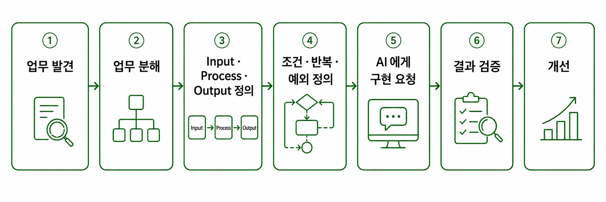
1.자동화를 배우는 진짜 이유
- 파이썬 문법을 외우기 위해서가 아님
- 모든 일을 자동화하기 위해서도 아님
- AI에게 무조건 일을 맡기기 위해서도 아님
자동화를 배우면서 얻게 되는 것
- 내가 하는 일을 다시 바라보는 습관
- 큰 일을 작은 단위로 나누는 습관
- 막연한 요구를 명확하게 정의하는 습관
- 조건과 예외를 생각하는 습관
- 결과를 확인하는 습관
자동화를 배우는 진짜 목적은 내가 하는 일을 더 명확하게 보는 힘을 기르는 것이다.
2.업무 구조화력이 높은 사람
- 일을 바로 시작하기 전에 결과를 먼저 생각함
- 큰 업무를 작은 작업으로 나눌 수 있음
- 업무의 흐름을 설명할 수 있음
- 자신의 판단 기준을 말로 표현할 수 있음
- 예외 상황을 미리 생각함
- 다른 사람이나 AI에게 일을 명확하게 맡길 수 있음
- 결과를 검증하고 지속적으로 개선함
3.업무 구조화력 한 문장 정의
업무 구조화력은 복잡한 일을 나누고, 흐름과 규칙을 찾아 실행 가능한 형태로 만드는 능력이다.
실제 작업으로 설명하자면
업무 구조화력은 내 일을 다른 사람이나 AI에게 맡길 수 있을 정도로 명확하게 설명하는 힘이다.
4.기억해야 할 핵심
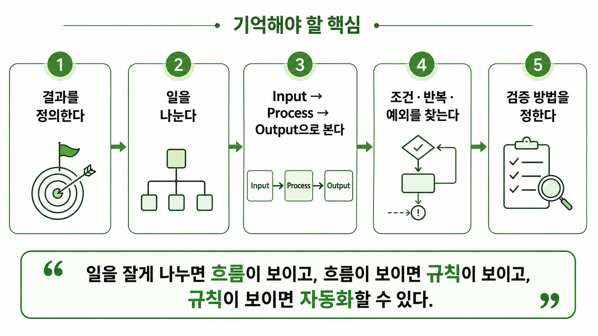
업무 자동화 프로세스
업무 자동화 프로세스
5.1INPUT - PROCESS -OUTPUT
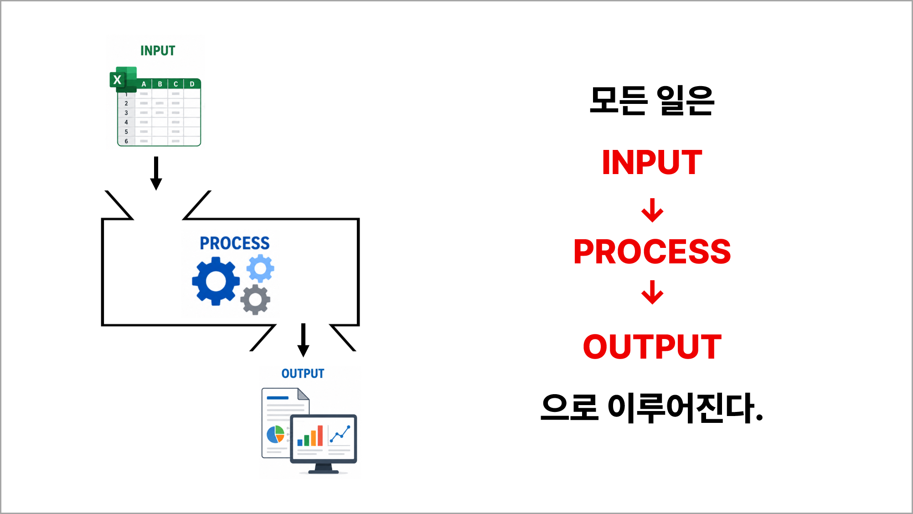
1.IPO 기본 개념
컴퓨터와 AI는 모든 일을 세 단계로만 이해함
- INPUT: 재료, 데이터, 입력값
- PROCESS: 처리 방법, 규칙, 로직
- OUTPUT: 결과물, 산출물
2.일상 속 IPO 예시
우리 주변의 모든 자동화는 IPO 구조를 가짐
- 커피머신: 원두+물 → 추출 → 커피
- 세탁기: 옷+세제 → 세탁 → 깨끗한 옷
- 계산기: 숫자 → 연산 → 결과값
3.자동화 가능성의 기준
자동화 여부는 IPO의 명확성에 의해 결정됨
- INPUT이 명확해야 함
- PROCESS가 규칙으로 정의 가능해야 함
- OUTPUT이 구체적이어야 함
- 하나라도 모호하면 자동화 어려움
5.2김장을 자동화 할 수 있을까?
1.김장 전체의 IPO 문제
큰 단위 작업은 IPO가 모호해짐
- INPUT: 재료가 너무 많고 복잡함
- PROCESS: "김장하기"는 정의 불가능
- OUTPUT: 결과 기준이 불명확함
2.자동화 실패의 원인
AI는 추상적 명령을 처리하지 못함
- 과정이 너무 큼
- 판단 기준이 없음
- 상황마다 다름
자동화는 크기가 아니라 명확성의 문제
- 큰 작업 = 자동화 어려움
- 작은 작업 = 자동화 가능
업무 쪼개기 예시
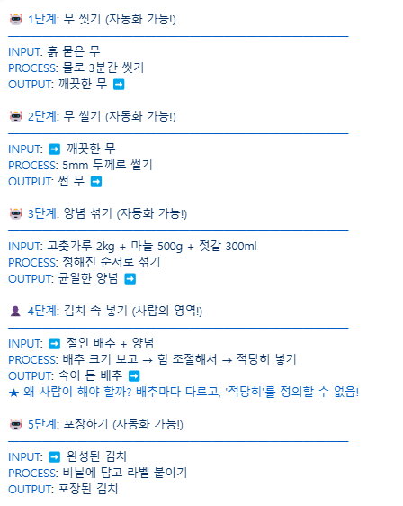

ChatGPT로 파이썬 코드 만들기
ChatGPT로 파이썬 코드 만들기
6.1기본 프롬프트
텍스트 파일에 붙여넣고 편집 후 GPT에게 붙여넣어 보세요.
- PC버전프롬프트PC버전
당신은 파이썬 전문가입니다. 저는 파이썬 초보자이며 내 데스크탑의 VS코드에서 실행할 코드를 만들고 싶습니다. [요구사항] 1) 필요한 라이브러리가 있다면 코드 실행 시 자동으로 설치되도록 해주세요. (try-except 구조를 사용하여 없는 경우에만 설치하고, sys.executable을 활용해주세요) 2) 재사용이 가능하도록 주요 기능은 함수로 구성해주세요. 각 함수에는 한국어 docstring을 작성해주세요. 3) 주석은 단계 번호 형식으로 달아주세요. 예: # (1) CSV 파일 불러오기 중요한 줄/블록마다 **무엇을 하는지 + (이 작업을 하는 이유)**를 설명해주세요. 4) 코드 흐름을 이해하기 쉽게 main() 함수와 `if __name__ == "__main__": main()` 구조를 포함해 주세요. 5) 각 주요 단계마다 **[DEBUG]**로 시작하는 디버그용 print를 넣어주세요. (예: 진행 단계, 변수 크기/타입, 샘플 값 등) 6) 코드 작성 후 아래 내용을 추가로 작성해주세요. - 코드 전체 동작 요약 - 초보자가 자주 실수하는 부분 3개 7) 한국어 데이터 처리 시 반드시 다음을 포함해주세요: - 그래프에 한글 포함 시: '맑은 고딕'(Malgun Gothic) 폰트로 설정하고, 마이너스 기호(-) 깨짐 방지 코드도 포함 [작업 설명] ## 목적 ## INPUT ## PROCESS ## OUTPUT - 구글 콜랩버전프롬프트구글 콜랩버전
당신은 파이썬 전문가입니다. 저는 파이썬 초보자이며 Google Colab에서 실행할 코드를 만들고 싶습니다. [요구사항] 1) 모든 코드는 Google Colab에서 바로 실행 가능해야 합니다. 필요한 경우 !pip install 코드도 포함해주세요. 2) 재사용이 가능하도록 주요 기능은 함수로 구성해주세요. 각 함수에는 한국어 docstring을 작성해주세요. 3) 주석은 단계 번호 형식으로 달아주세요. 예: # (1) CSV 파일 불러오기 또한 거의 모든 줄에 **무엇을 하는지 + 가능한 경우 이유**를 설명해주세요. 4) 코드 흐름을 이해하기 쉽게 main() 함수와 `if __name__ == "__main__": main()` 구조를 포함해 주세요. 5) 각 주요 단계마다 **[DEBUG]**로 시작하는 디버그용 print를 넣어주세요. (예: 진행 단계, 변수 크기/타입, 샘플 값 등) 6) 코드 작성 후 아래 내용을 추가로 작성해주세요. - 코드 전체 동작 요약 - 초보자가 자주 실수하는 부분 3개 7) 한국어 데이터 처리 시 반드시 다음을 포함해주세요: - 그래프에 한글 포함 시: '나눔 고딕'(Nanum Gothic) 폰트로 설정하고, 마이너스 기호(-) 깨짐 방지 코드도 포함 [작업 설명] ## 목적 ## INPUT ## PROCESS ## OUTPUT
6.2프로젝트 이용하기
- 프로젝트 지침에 다음의 내용 추가
당신은 파이썬 전문가입니다.
저는 파이썬 초보자이며 내 데스크탑의 VS코드에서 실행할 코드를 만들고 싶습니다.
[요구사항]
1) 필요한 라이브러리가 있다면 코드 실행 시 자동으로 설치되도록 해주세요.
(try-except 구조를 사용하여 없는 경우에만 설치하고, sys.executable을 활용해주세요)
2) 재사용이 가능하도록 주요 기능은 함수로 구성해주세요.
각 함수에는 한국어 docstring을 작성해주세요.
3) 주석은 단계 번호 형식으로 달아주세요.
예: # (1) CSV 파일 불러오기
중요한 줄/블록마다 **무엇을 하는지 + (이 작업을 하는 이유)**를 설명해주세요.
4) 코드 흐름을 이해하기 쉽게 main() 함수와
`if __name__ == "__main__": main()` 구조를 포함해 주세요.
5) 각 주요 단계마다 **[DEBUG]**로 시작하는 디버그용 print를 넣어주세요.
(예: 진행 단계, 변수 크기/타입, 샘플 값 등)
6) 코드 작성 후 아래 내용을 추가로 작성해주세요.
- 코드 전체 동작 요약
- 초보자가 자주 실수하는 부분 3개
7) 한국어 데이터 처리 시 반드시 다음을 포함해주세요:
- 그래프에 한글 포함 시: '맑은 고딕'(Malgun Gothic) 폰트로 설정하고,
마이너스 기호(-) 깨짐 방지 코드도 포함
사용자가 INPUT/PROCESS/OUTPUT 형식으로 설명하면 이를 반영하여 코드를 설계하세요.6.3만들어준 코드에 오류가 날 때 대처 방법
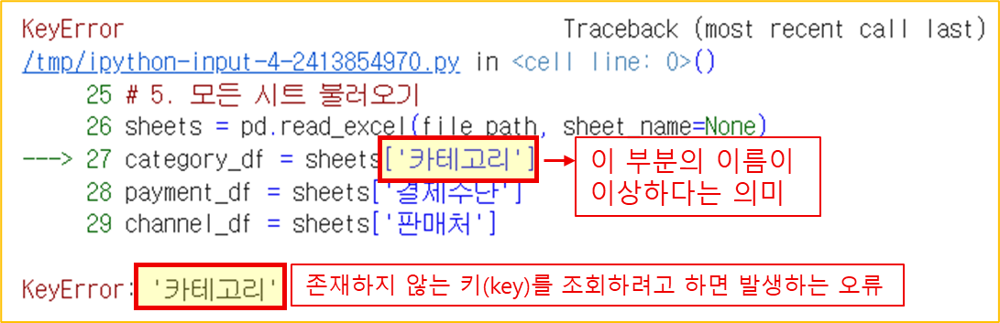
- Traceback이 있는 부분부터 맨 마지막 까지 복사해서 GPT에게 붙여넣기
6.4자주 발생하는 오류
| 대표 오류 | 발생 상황 | 주요 원인 |
|---|---|---|
FileNotFoundError | 파일을 불러오지 못함 | 파일명, 경로, 확장자 오류 |
PermissionError | 파일을 저장하거나 수정하지 못함 | 파일이 열려 있음, 저장 권한 없음 |
KeyError | 특정 열이나 값을 찾지 못함 | 열 이름 변경, 오타, 앞뒤 공백 |
ValueError | 값 변환이나 계산이 안 됨 | 숫자·날짜 형식 불일치, 잘못된 값 포함 |
TypeError | 계산이나 처리가 안 됨 | 숫자와 문자처럼 서로 다른 형식의 데이터를 함께 처리함 |
IndexError | 특정 위치의 데이터를 가져오지 못함 | 데이터가 비어 있음, 행/열 개수 부족 |
ModuleNotFoundError | 필요한 라이브러리를 불러오지 못함 | 라이브러리 미설치, 다른 파이썬 환경에 설치됨 |
ImportError | 라이브러리나 기능을 불러오지 못함 | 설치된 라이브러리 버전 문제, 잘못된 import 문 |
UnicodeDecodeError | CSV 파일 등을 불러올 때 한글이 깨지거나 읽히지 않음 | 인코딩 방식 불일치 |
ConnectionError | 웹사이트, API, 서버에 접속하지 못함 | 인터넷 연결 문제, 서버 접속 불가, 방화벽 |
TimeoutError | 접속이나 처리가 제한 시간 안에 끝나지 않음 | 서버 응답 지연, 인터넷 불안정, 작업량 과다 |
AttributeError | 특정 기능이나 속성을 사용할 수 없음 | 변수 형식이 예상과 다름, 잘못된 기능 이름 사용 |
NameError | 변수를 찾지 못함 | 변수명 오타, 변수를 만들기 전에 사용함 |
SyntaxError | 코드가 실행되지 않음 | 괄호, 따옴표, 콜론 등 문법 오류 |
IndentationError | 코드 들여쓰기 때문에 실행되지 않음 | 들여쓰기 불일치, 공백/탭 혼용 |
ZeroDivisionError | 계산 중 0으로 나누려고 함 | 분모 값이 0이 됨 |
Worksheet not found | 엑셀 시트를 불러오지 못함 | 시트명 변경, 공백, 월별 시트명 차이 |
ElementNotInteractableException | 웹페이지 요소를 클릭하거나 입력하지 못함 | 요소가 숨겨져 있음, 아직 로딩되지 않음 |
NoSuchElementException | 웹페이지에서 원하는 요소를 찾지 못함 | 사이트 구조 변경, 선택자 오류, 로딩 지연 |
StaleElementReferenceException | 찾았던 웹 요소를 다시 사용할 수 없음 | 페이지가 새로고침됨, 화면 내용이 동적으로 변경됨 |
SMTPAuthenticationError | 메일 계정 로그인에 실패함 | 아이디/비밀번호 오류, 앱 비밀번호 필요, 보안 정책 |
SMTPConnectError | 메일 서버에 연결하지 못함 | SMTP 서버 주소 오류, 포트 오류, 방화벽 |
InvalidFileException | 엑셀 파일을 열지 못함 | 지원하지 않는 파일 형식, 파일 손상, 확장자 불일치 |
6.5파이썬 코드를 이해하는 법
너는 파이썬전문가이자 매우 친절한 파이썬전문 강사야. 나는 파이썬을 처음 배우는 초보자야. AI가 생성해준 파이썬 코드가 있는데 코드를 이해하지 못해서 수정을 할 수가 없어. 내가 나중에 비슷한 코드를 쉽게 수정할 수 있도록 코드를 자세히 뜯어보면서 공부하고 싶어 내가 알려주는 코드에 한 줄씩, 아주 자세하게 해석을 해서 주석을 추가해줘. 내가 특별히 궁금한 부분을 다시 물어보기 쉽도록 기능이 바뀌는 부분에 번호를 메겨줘. 전체적인 코드의 흐름을 설명해주고 내가 번호를 입력하면 그 번호에 해당하는 부분의 코드에 대한 설명을 해줘. ---
내가 하는 일의 대부분은 비슷한 작업이기 때문에 내가 하는 일에 직접적으로 필요한 기능을 중심으로 배울 수 있기 때문에 학습 동기가 높아지고 빠르게 학습 가능
파이썬으로 엑셀 데이터 편집하기
파이썬으로 엑셀 데이터 편집하기
7.1왜 엑셀 대신 파이썬인가
| 구분 | 엑셀 | 파이썬 |
|---|---|---|
| 데이터 처리 방식 | 셀 기반 수작업 중심 처리 | 코드 기반 자동화 처리 |
| 작업 방식 | 사람이 직접 수정해야 하는 구조 | 한 번 작성하면 반복 실행 가능 |
| 데이터 처리 규모 | 수십만 행 이상에서 속도 저하 | 대용량 데이터 처리 최적화 가능 |
| 로직 구현 | 복잡한 수식으로 가독성 저하 | 조건문, 함수로 구조적 설계 가능 |
파이썬이 엑셀보다 더 빠르게 다양한 작업을 할 수 있다.
7.2엑셀을 다루는 파이썬 라이브러리
| 라이브러리 | 주요 특징 | 장점 | 단점 |
|---|---|---|---|
| pandas | 데이터 분석 중심의 라이브러리, read_excel, to_excel 지원 | - 테이블 형태의 데이터 처리에 매우 강력- 필터링, 그룹화, 통계 분석에 적합- 대용량 처리에 효율적 | - 서식, 수식, 차트 등 엑셀 고급 기능 미지원 - 스타일 적용은 제한적 |
| openpyxl | .xlsx 파일 읽기/쓰기 전용 라이브러리 | - 셀 서식, 수식, 차트 등 엑셀 요소 직접 제어 가능- 엑셀 파일 생성, 편집, 저장에 강력 | - .xls(구버전 엑셀) 미지원- 대용량 데이터 처리에는 비효율적 |
| xlwings | 엑셀과 파이썬을 직접 연결하여 양방향 통신 가능 | - 실제 엑셀 앱을 제어하며 VBA 수준의 조작 가능- 서식, 수식, 차트 등 완전한 엑셀 제어 가능 | - 윈도우 및 엑셀 설치 필요 - 속도가 다소 느림 - 설치 환경 제약 (Mac 일부 기능 제한) |
7.3데이터의 구조

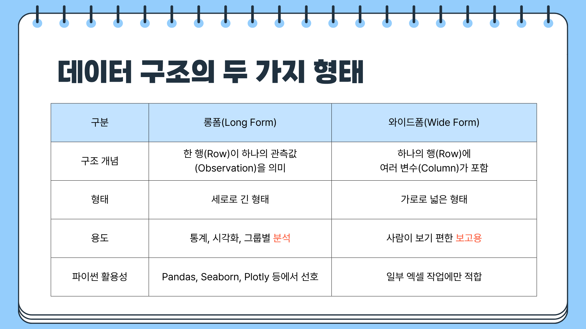
“하나의 셀에는 하나의 값만, 하나의 행에는 하나의 관측값만”
1.와이드 폼의 데이터를 컴퓨터나 AI가 어려워 하는 이유
- 열 이름만으로는 그것이 무엇을 의미하는지 알 수 없음
- 값이 어떻게 만들어졌는지도 알 수 없음
- 기계는 맥락을 읽지 못함
아래의 표는 무엇을 의미할까요?
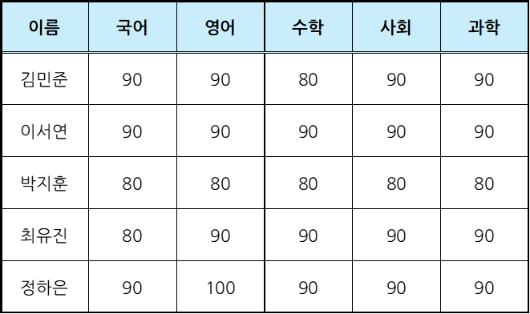
롱폼 확인

2.롱폼 데이터를 써야하는 이유
- 주요 기능들이 롱폼을 전제로 설계됨
groupby()- 행(Row) 단위로 그룹화하여 통계, 합계, 평균 등 계산
- 롱폼 구조에서는 바로 작동
- 와이드폼에서는 변수를 다시 녹여(
melt)야 함
코드groupby() 행(Row) 단위로 그룹화하여 통계, 합계, 평균 등…data.groupby("월")["매출"].sum()merge()/concat()- 행 기반 결합 구조 (Row 기준 병합)
- 열이 많거나 구조가 다른 와이드폼은 병합 시 오류 발생
melt()- 와이드 → 롱 변환 함수
- “데이터를 분석 가능한 형태로 정돈(Tidy)”하는 역할
- 시각화 라이브러리 호환성
Seaborn,Plotly,Altair등
모두 롱폼 데이터 구조를 전제로 설계됨- 예:코드예:
sns.lineplot(data=df, x="월", y="매출", hue="이름")
- 구조적 이유: 일관성과 확장성
- 일관성(Consistency)
모든 행이 같은 변수 집합을 갖기 때문에, 반복문이나 함수 적용이 단순함 - 확장성(Scalability)
새로운 항목(월, 지역, 제품 등)을 추가해도 열 구조가 변하지 않음 - 자동화 효율성(Automation)
반복 분석, 시각화, 모델링이 코드 한 줄로 가능 - → 구조가 변하지 않으므로 코드 수정 최소화
- 일관성(Consistency)
3.직관적 비유
| 형태 | 비유 | 설명 |
|---|---|---|
| 와이드폼 | “사람이 보기 좋은 엑셀 보고서” | 가로로 정리되어 한눈에 보기 좋지만 계산은 불편 |
| 롱폼 | “기계가 읽기 좋은 데이터 일지” | 각 줄이 하나의 사건을 기록하므로 분석 자동화에 유리 |
엑셀은 ‘보기 좋은 데이터’, Pandas는 ‘처리하기 좋은 데이터’
7.4파이썬에서 주의할 점
1.대소문자 구분
- 파이썬은 대소문자를 구분함
예:
Name = "홍길동" print(name) # 오류 발생 (소문자 name 없음)
- 변수명, 함수명, 예약어(
True,False,None) 모두 대소문자 정확히 써야 함
2.들여쓰기 중요
- 파이썬은 **들여쓰기(Indent)**로 코드 구조를 구분함
예:
if x > 0:
print("양수입니다") # 들여쓰기 되어야 함
print("끝") # 들여쓰기 없으면 if문 밖
for i in range(3):
print(i) # 들여쓰기 되어야 함
def greet():
print("안녕하세요") # 들여쓰기 되어야 함
def add(a, b):
return a + b # 결과값을 돌려줄 때는 return 사용- 탭(tab)과 공백(space)을 섞어 쓰면 오류 발생
- 보통 공백 4칸을 기준으로 들여쓰기 함
- VS코드 사용 시 자동으로 들여쓰기 해줌
3.문법 끝에 :
- 조건문, 반복문, 함수 선언은 끝에 콜론(
:) 이 꼭 필요함
예:
if x > 10: # 콜론 꼭 필요
print("10보다 큼")
def add(a, b): # 함수 정의에도 콜론 필요
return a + b4.문자열(텍스트)은 큰따옴표 또는 작은따옴표로 감싸기
- 텍스트는 항상 따옴표로 감싸야 함
예:
name = "홍길동" greeting = '안녕하세요'
- 따옴표가 안 닫히면 오류 발생실행 결과따옴표가 안 닫히면 오류 발생
name = "홍길동 # ← 닫는 따옴표 없음 → 오류
- 따옴표 안에 따옴표 넣기코드따옴표 안에 따옴표 넣기
# 바깥은 큰따옴표, 안은 작은따옴표 사용 text = "그는 '안녕하세요'라고 말함" # 바깥은 작은따옴표, 안은 큰따옴표 사용 text = '그는 "안녕하세요"라고 말함' # 역슬래시(\)로 이스케이프 처리 방법 text = "그는 \"안녕하세요\"라고 말함" text = '그는 \'안녕하세요\'라고 말함'
5.자료형(타입) 확인하기
- 숫자, 문자열, 리스트 등은 타입이 다름
- 서로 다른 타입끼리 연산하면 오류 발생
예:
x = "10" y = 5 print(x + y) # 오류 (문자 + 숫자 불가)
- 타입 확인 방법코드타입 확인 방법
print(type(x))
- 필요한 경우 형변환코드필요한 경우 형변환
x = int(x) # 문자열을 숫자로 변환
7.5파이썬으로 엑셀을 다룰때 초보자가 실수하기 쉬운 5가지
1.경로 표기 오류 (\ 때문에 파일을 못 읽는 문제)
- 원인: 윈도우 탐색기에서 복사한 경로가
C:\Users\홍길동\Desktop\sales.xlsx형태라\U등이 특수문자로 인식됨 - 해결:
- 슬래시(
/)로 바꾸거나 - 문자열 앞에
r을 붙임
df = pd.read_excel(r"C:\Users\홍길동\Desktop\sales.xlsx")
2.엑셀 파일이 열려 있어서 저장 실패
- 원인: 엑셀이 해당 파일을 열고 있으면 쓰기 권한이 잠김
- 증상:
PermissionError: [Errno 13] Permission denied - 해결: 엑셀 프로그램에서 파일을 닫은 뒤 저장하거나, 다른 파일명으로 저장코드해결 : 엑셀 프로그램에서 파일을 닫은 뒤 저장하거나, 다른 파일명으로…
df.to_excel("sales_result_v2.xlsx", index=False)
3.날짜 데이터가 문자열로 인식되어 정렬 안 됨
- 원인: 엑셀의 날짜 셀 형식이 통일되지 않음
- 해결:
pd.to_datetime()으로 명시 변환코드해결 : pd.to_datetime() 으로 명시 변환df["판매일자"] = pd.to_datetime(df["판매일자"], errors="coerce")
4.저장 시 인덱스 번호가 같이 들어감
- 원인:
to_excel()의 기본값이index=True - 결과: 엑셀 파일 첫 열에 “Unnamed: 0” 같은 불필요한 열이 생김
- 해결:코드해결 :
df.to_excel("결과.xlsx", index=False)
5.한글이 포함된 CSV 저장 시 글자 깨짐
- 원인: 엑셀이 기본
utf-8인코딩을 제대로 인식하지 못함 - 해결:코드해결 :
df.to_csv("결과.csv", index=False, encoding="utf-8-sig")
파이썬 엑셀 다루기 실습
파이썬 엑셀 다루기 실습
8.1파일 확장자 바꾸기
1.상황
- 다른 부서에서 받은 자료를 사이트에 업로드해야하는데 받은 자료는 xls파일인데 업로드는 xlsx만 가능한 상황
- 100개가 넘는 파일의 확장자를 모두 바꿔야 하는데 어떻게 해야할까?
2.질문
- 나라면 이 업무를 어떻게 처리할 것인가?
- 이 업무에서 귀찮거나 실수가 발생할 수 있는 부분은 무엇일까?
- 귀찮거나 실수를 발생할 수 있는 부분 중에 컴퓨터(파이썬)으로 해결할 수 있는 부분이 있을까?
- 어떻게 하면 원하는 작업을 하는 코드를 얻을 수 있을까?(프롬프트)
프롬프트 예시(미리 열어보지 마세요!)
[작업 설명] ## 목적 폴더 안에 있는 xls확장자를 xlsx로 변환한다. ## INPUT 1. 파일은 한 폴더 안에 들어있음 2. 폴더를 선택하면 그 안에 있는 xls파일만 자동으로 선택 ## PROCESS 1. xls파일을 xlsx파일로 저장 ## OUTPUT 1. 파일명은 원본이랑 동일하고 확장자만 다르게 저장 2. 원본은 현재 폴더에 하위 폴더로 "원본"폴더를 만들고 그 위치로 이동 3. xslx파일은 현재 폴더에 하위 폴더로 "xlsx"폴더를 만들고 그 위치로 저장
8.2같은 형식의 여러 엑셀 파일 취합하기
- 상황
- 월 별로 작성되어 있는 상반기 매출 기록을 취합
- INPUT(”매출기록” 폴더)
- 한 폴더 안에 저장되어 있음
- 한 파일에 하나의 시트만 있음
- 데이터의 구조는 동일함
- 정렬이 되어있지 않음
- PROC
- 폴더 안의 모든 파일을 병합함(세로 방향으로 append)
- 거래일자, 거래처명, 제품명 순으로 오름차순 정렬
- 수량, 단가, 공급가액, 부가세, 합계는 콤마스타일 적용
- 원하는 서식 적용
- OUTPUT
- 2025_1분기_매출기록.xlsx로 저장
프롬프트 예시(미리 열어보지 마세요!)
[작업 설명] ## 목적 폴더 안에 있는 엑셀 파일을 하나의 파일로 합친다. ## INPUT - 폴더를 선택하면 해당 폴더에 있는 모든 엑셀 파일 사용 - 한 파일에 하나의 시트만 있음 - 데이터의 구조는 동일함(모든 파일의 헤더가 동일) ## PROCESS - 폴더 안의 모든 파일을 병합함 - 거래일자, 거래처명, 제품명 순으로 오름차순 정렬 - 수량, 단가(원), 공급가액(원), 부가세(원), 합계(원) 는 콤마스타일 적용 - 1~3열은 열 너비를 14, 4~10열은 열너비를 10으로 변경 - 헤더는 하늘색 적용 ## OUTPUT -병합된 파일은 2025_1분기_매출기록.xlsx로 저장
8.3항목별로 차트 만들기
- 상황
- 월별로 정리된 제품별 매출 건수 자료가 있음
- 이 자료를 시각화 해야하는데 항목이 너무 많아서 잘 보이지 않음
- 제품별로 월별 판매량 그래프를 그리고 싶음
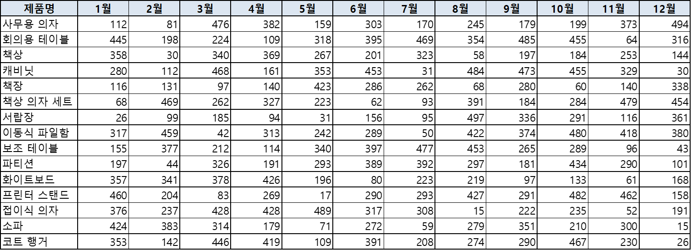

- INPUT
- 윈도우 탐색기로 파일 선택
- 파일에 시트는 하나이고 1열에는 제품명이 그 이후 열에는 1월부터 12월까지 매출 건수가 입력되어있음
- PROCESS
- 각 제품별로 1월~12월의 판매건수를 세로 막대그래프로 생성
- OUTPUT
- 엑셀파일이 선택된 폴더에 “차트”하위 폴더를 만들고 그 안에 저장
- 파일명은 [제품명]_매출차트.png
- 워드 파일에 이미지 파일을 삽입해서 저장
프롬프트 예시(미리 열어보지 마세요!)
[작업 설명]
## 작업 목표
와이드 폼으로 작성되어있는 데이터를 가지고 "제품명"을 기준으로 모든 제품에 대한 1월부터 12월까지의 매출 건수를 차트로 생성하고 싶음.
## INPUT
- 윈도우 탐색기로 파일 선택
- 파일에 시트는 하나이고 1열에는 제품명이 그 이후 열에는 1월부터 12월까지 매출 건수가 입력되어있음
## PROCESS
- 각 제품별로 1월~12월의 판매건수를 세로 막대그래프로 생성
- 막대그래프의 색상은 #B6D1E0 적용
- 제품 별로 매출 건수가 가장 높은 3개 항목은 #E33364 적용
- 데이터 레이블에 콤마스타일 적용하여 추가
- 모든 차트의 맥스값을 600으로 통일
## OUTPUT - 파일명: {제품명}_매출차트.png
- 저장위치: 현재 폴더에 "차트"폴더 추가 후 그 안에 저장
- 생성된 모든 파일을 하나의 워드파일에 담아서 저장 워드파일 생성시 제목으로 "2025년 제품별 판매 건수 추이"라고 입력 각 항목별로 블릿으로 제품명을 입력하고 다음 줄에 차트를 삽입- 색 조합 사이트: 마이컬러스페이스
1.그래프 편집 요청하기
- 그래프 편집을 요청하기 위해서는 그래프 각 부분의 명칭을 정확하게 알아야 함
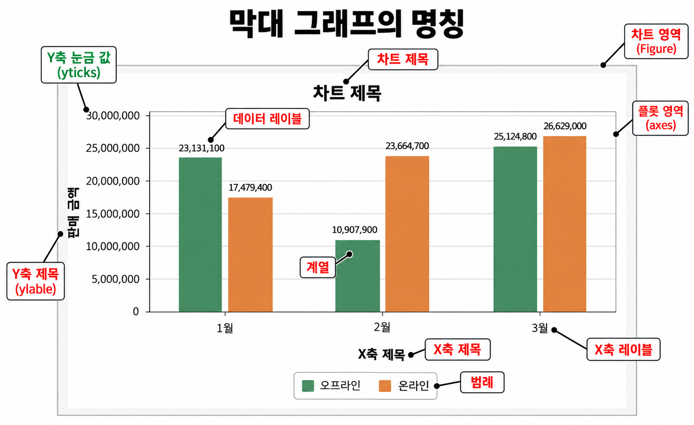
- Y축 눈금값이 기본으로 지수 형식으로 설정됨으로 수정이나 삭제가 필요
- 회색 점선이 보이는 것은 보조선
- 숫자에 세 자리마다 콤마를 적용하려면 “콤마 스타일”적용 요청
- 변하는 숫자에 단위를 붙여서 표현하고 싶으면 “n월”과 같이 숫자를 n으로 표현
- 범례가 데이터 계열을 가릴 경우 “범례를 플롯영역 밖으로 위치”시켜달라고 요청
- 데이터 계열이 너무 높아서 데이터 레이블이 잘 안보일 경우
”Max값을 1.2~1.3배해서 상단에 여백을 확보”해 달라고 요청
추가 프롬프트 예시(미리 열어보지 마세요!)
차트는 잘 생성되었는데 디자인이 마음에 들지 않아. 차트에 다음의 디자인을 적용시켜줘. * 차트 색상은 푸른색 계열로 왼쪽이 하늘색 오른쪽으로 갈수록 짙은 푸른색으로 적용 * 데이터레이블 추가(콤마스타일 적용) * Max값을 1.2~1.3배해서 상단에 여백을 확보
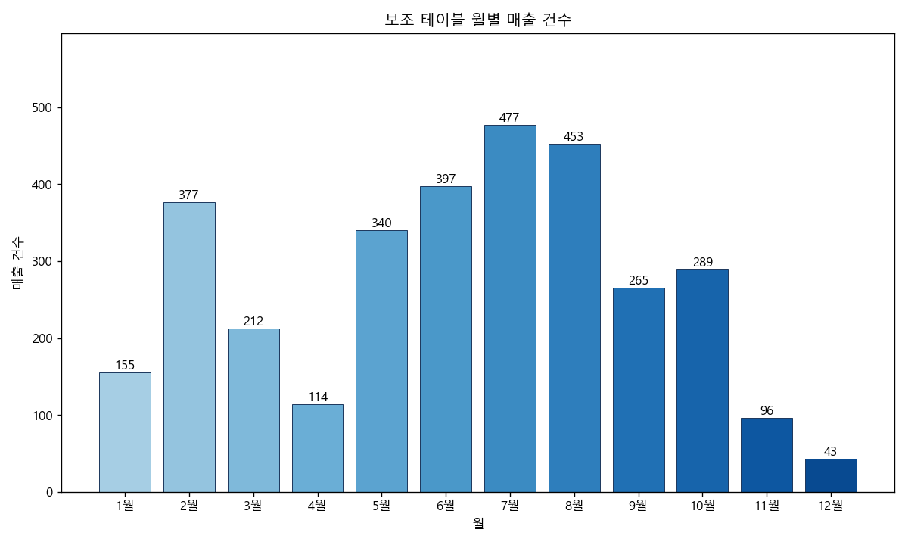
8.4거래처별로 자료 만들기(차트 생성)
- 상황
- 취합된 상반기 매출을 거래처별로 자료 생성하기
- INPUT(”매출기록” 폴더)
- 2025_1분기_매출기록.xlsx
- 거래일자(A열), 거래처명(B열), 매출액(H열)
- PROCESS
- 거래처별로 데이터를 나눠서 각자의 파일로 다운로드
- 파일명은 “[거래처명]_yymmdd.xlsx”
- 파일 형식은 원본 파일과 동일하게 유지
- 거래처별로 월별 매출액 합계를 세로막대 그래프로 적용
- 색상은 #28D390, #00B89B, #009B9B, #007F8E, #1A6277, #2F4858 적용
- 반드시 한글 글꼴 적용
- Y축 눈금값을 제거하고 데이터 레이블 추가(콤마스타일 적용)
- max값을 1.2배하여 상단에 여백 남기기
- OUTPUT
- 파일별로 시트를 두개 생성, 첫번째 시트는 “거래처명”, 두번째 시트는 “거래처명_매출차트”
- “차트”시트에 해당 거래처의 차트 삽입
- 생성된 차트는 하나의 워드 파일로 저장(별도 파일 생성)

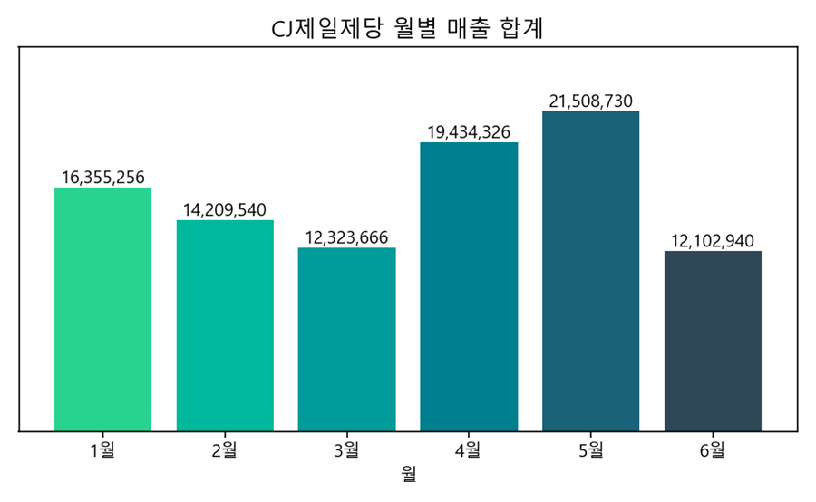
프롬프트 예시(미리 열어보지 마세요!)
[작업 설명] ## 작업 목표 취합된 상반기 매출을 거래처별로 자료 생성하기 ## INPUT - 윈도우 탐색기로 파일 선택 - 선택된 파일의 거래일자, 거래처명, 합계(원) 사용 ## PROCESS 1. 거래처명 별로 데이터를 나눠서 [거래처명]_yymmdd.xlsx로 각자 저장 1-1. 헤더와 기타 서식은 그대로 유지되어야함.(파일 복사 후 필요 없는 행을 삭제하는 방식 사용) 1-2. 시트명은 거래처명으로 변경 2. 거래처명별로 월별 합계(월)의 합계를 세로 막대그래프로 생성 2-1. "거래일자"는 엑셀의 날짜 형식임 2-2. 막대그래프 색상: #28D390, #00B89B, #009B9B, #007F8E, #1A6277, #2F4858 적용 2-3. 반드시 한글 글꼴 적용 2-4. Y축 눈금값을 제거하고 데이터 레이블 추가(콤마스타일 적용) 2-5. max값을 1.2배하여 상단에 여백 남기기 3. 1번의 파일에 각각 생성된 차트 이미지를 추가 3-1. 두번째 시트를 추가하고 이미지 삽입 3-2. 시트명은 "[거래처명]_매출차트" ## OUTPUT - 생성된 파일은 엑셀파일이 선택되었던 폴더에 "전송자료"폴더를 생성하고 그 안에 저장 - 생성된 파일에 대해서 거래처명, 파일저장경로를 정리해서 "이메일전송자료.xlsx"파일로 저장
8.5분기별 영업실적 보고서 만들기
- 상황
- 월별 실적 보고서를 매달 보고서 형식으로 작성되어있는 엑셀파일로 받음
- 나는 그 자료를 가지고 분기별 보고서를 작성해야함(워드파일로)
- 워드 보고서 양식은 정해져있고 해당 양식에 맞춰서 표와 차트 이미지를 입력해야함
- 질문1. 보고서를 만들기 위해서는 어떤 자료가 필요한가?
- 질문2. 필요한 자료는 어떻게 만들 수 있을까?
- 질문3. 자료로 만든 결과물을 어떻게 입력할 수 있을까?
[작업 설명] ## 목적 ## INPUT ## PROCESS ## OUTPUT
[작업 설명] ## 목적 ## INPUT ## PROCESS ## OUTPUT
- 여러개 코드 합치기
- 합칠 코드를 순서대로 첨부함
- "두개의 코드를 연결해서 (주요 실행 프로세스 설명)실행되는 하나의 코드를 만들고싶어."
- 두개의 코드가 매끄럽게 연결 될 수 있도록 추가적인 주의사항을 입력
두개의 파일을 분석해서 처음 엑셀파일을 선택하면 분기별 레포트까지 한번에 생성되는 코드로 만들어줘. 자료취합 파일에서 최종 파일명은 취합한 자료들이 몇월에 해당하는지 파악해서 자동으로 파일명이 변경되는 것으로 수정해줘.
8.6엑셀 파일 사용 시 주의 사항
- 데이터 프레임은 “데이터”를 다루는 형식이기 때문에 서식은 모두 사라짐
- 결과를 엑셀로 저장할 때에는 기본 서식에 헤더만 굵게 처리되어 저장
- 기본 세팅으로 불러올 경우 첫 시트만 가지고 오고 첫 행을 헤더로 인식
- 다른 경우를 처리하려고 할 경우 옵션을 설정해줘야 함
- 불러오려는 엑셀 파일이 열려 있을 경우 오류 발생
- 기본 형태
import pandas as pd # 판다스 라이브러리를 pd라고 줄여서 사용
df = pd.read_excel("파일.xlsx")2일차
학습 목표
- 자동화의 핵심 로직을 이해하고 프롬프트에 적용할 수 있다.
- 다양한 자동화 프로그램을 만들 수 있다.
- 자동화에서 템플릿의 중요성을 이해하고 만들 수 있다.
- 보안을 위한 가상 데이터를 만들 수 있다.
- 파이썬으로 Gmail계정의 메일을 보낼 수 있다.
- 물리 자동화의 개념을 이해하고 실행해 볼 수 있다.
- 코드 로직 검토의 중요성을 말할 수 있다.
- 내 컴퓨터에 있는 엑셀파일로 HTML스타일 대시보드를 만들 수 있다.
자동화의 핵심 로직
자동화의 핵심 로직
| 핵심 로직 | 설명 방향 |
|---|---|
| 순서 | 컴퓨터가 따라 할 작업 순서 만들기 |
| 조건 | 상황에 따라 다른 처리하기 |
| 반복 | 같은 작업을 여러 번 시키기 |
| 분류 | 기준에 따라 나누어 처리하기 |
| 예외 | 문제가 생겼을 때의 대응 정하기 |
폴더 안의 파일을 반복 처리해줘. 파일 확장자에 따라 처리 방식을 분류해줘. 이미 처리한 파일이면 건너뛰는 조건을 넣어줘. 오류가 발생하면 멈추지 말고 로그에 기록하고 다음 파일로 넘어가줘.
1.참고
| 로직 | 쉬운 설명 | 프롬프트 표현 예시 |
|---|---|---|
| 입력 | 처리할 재료 정하기 | 엑셀 파일을 선택해서 불러와줘 |
| 출력 | 결과물 정하기 | 결과를 엑셀과 PDF로 저장해줘 |
| 순서 | 작업 흐름 정하기 | 파일 열기 → 정리하기 → 저장하기 순서로 처리해줘 |
| 조건 | 상황별 처리 | 값이 비어 있으면 건너뛰어줘 |
| 반복 | 같은 작업 반복 | 폴더 안의 모든 파일을 반복 처리해줘 |
| 분류 | 기준별로 나누기 | 거래처별로 데이터를 나눠줘 |
| 비교 | 두 값을 대조 | 기준표와 데이터의 사번을 비교해줘 |
| 매칭 | 기준에 맞는 값 붙이기 | 사번을 기준으로 부서명을 붙여줘 |
| 누적 | 결과를 계속 쌓기 | 모든 파일의 데이터를 한 시트에 누적해줘 |
| 집계 | 합계·개수 요약 | 부서별 매출 합계를 계산해줘 |
| 변환 | 형식 바꾸기 | 날짜를 yy-mm-dd 형식으로 바꿔줘 |
| 검증 | 문제 확인 | 필수값이 비어 있는 행을 찾아줘 |
| 예외 처리 | 오류 대응 | 오류가 나면 로그에 기록하고 다음 파일을 처리해줘 |
| 기록 | 처리 내역 남기기 | 처리한 파일명과 시간을 로그 시트에 저장해줘 |
자동화를 잘하려면 문법을 많이 아는 것보다, 내가 원하는 일을 순서·조건·반복·분류·예외로 설명할 수 있어야 한다.
견적서 만들기
견적서 만들기
- 상황
- 견적서에 넣어야 할 데이터가 있는데 이것을 양식에 맞춰서 견적 번호별로 하나의 견적서로 만들어야함
- 견적번호가 여러개가 있고 견적 번호별로 하나의 시트를 만들고 PDF파일로 변환해야함
- INPUT
- 견적데이터
- 견적서양식
- PROCESS
- “견적데이터”의 내용을 기반으로 “견적 번호”를 기준으로 각각 한 장의 견적서를 만든다.
- 견적데이터에서 견적서에 필요한 내용을 자동으로 채운다.
- 각 품목은 아래의 표에 채워진다.
- OUTPUT
- 견적서가 각각의 시트로 저장된 엑셀파일
- 각 시트가 PDF로 변환된 파일
- 별도의 폴더에 저장
2.1템플릿의 중요성
- 서식을 파이썬으로 직접 제어하는 것은 생각보다 어려움
- 가지고 와서 복사하여 사용할 수 있는 템플릿 제작이 필요
- 최대한 데이터만 넣으면 완성 될 수 있도록 만드는 것이 중요
2.2보안을 위한 가상 데이터 만들기
- 파일의 구조를 파악하기 위해서 파일을 직접 올리는 것이 편할 때가 있음
- 이때, 회사의 자료를 직접 입력하면 정보 유출이 일어날 수 있음
- 헤더만 사용
- 일부 데이터만 사용(특징이 파악될 수 있는 데이터 위주)
- 회사명이나 직원명을 회사1, 직원1로 변경
- 매출숫자 변경
- 판다스에서는 파이썬에서는 헤더명이 제일 중요함으로 헤더명만 일치하는 경우 대부분 분석 가능
매출전표 캡쳐하기
매출전표 캡쳐하기
- 상황
- 법인카드 사용후 증빙처리가 안된 지출이 있어서 매출전표에서 영수증을 캡쳐해야 함
- INPUT
- PROCESS
- OUTPUT
프롬프트 예시(미리 열어보지 마세요!)
[작업 설명] ## 목적 엑셀파일에서 선택되어있는 데이터의 승인번호를 찾아서 PDF파일에서 캡쳐해서 저장한다. ## INPUT 윈도우 탐색기로 엑셀파일과 PDF파일을 선택 엑셀파일은 헤더가 2행이다. PDF파일은 여러장이며 한 장에 매출전표가 2*2형태로 4개 들어있다. ## PROCESS 1. 엑셀 파일에 "증빙필요"열이 TRUE인 행의 "승인번호"를 PDF파일에서 찾는다. 2. 찾은 승인번호의 위치가 몇사분면인지 확인한다. 3. 해당하는 사분면에 해당하는 이미지를 캡쳐한다 4. 파일명을 "거래일시"의 거래일자를 yymmdd형식으로 표시, 가맹점명 사용하여 yymmdd_가맹점명.png로 저장 ## OUTPUT 실행파일의 하위 파일에 "증빙자료"폴더가 없으면 폴더를 생성하고 그 안에 저장
참석자 체크
참석자 체크
- 상황
- 회사에서 창립30주년 기념으로 행사 A, B, C를 하는데 어떤 행사에 어느 부서 누가 참석하는지 정리해야 함
- 참석자 확인은 엑셀 파일로 각 부서에서 작성해서 보냄(각 파일의 포멧은 동일)
프롬프트 예시(미리 열어보지 마세요!)
[작업 설명] ## 목적 폴더 안에 있는 동일한 형식의 자료를 취합한다. # input 1. 선택한 폴더 안에 있는 엑셀 파일들 1-1. 폴더 안에 있는 내용의 헤더는 다음과 같다. 부서 이름 직급 행사A 행사B 행사C 비고 # process 1. 선택된 폴더 안에 있는 모든 파일을 열어서 "취합"시트를 만들고 거기에 세로방향으로 누적해서 붙인다. 2. "참여자리스트" 시트를 만든다. 3. 각 행사별로 누가 참석하는지 리스트를 정리한다. 3-1. A1셀에 행사A 입력, A2셀에 행사 A에 체크된 사람의 정보를 [이름]([부서])형식으로 조합하여 모든 명단을 ", "로 연결하여 입력 3-2. 행사B와 C도 같은 형식으로 입력(각 행사 사이는 한 행씩 비워둔다. # output 행사 참여자 리스트 정리.xlsx파일로 저장함. 저장경로는 선택한 폴더의 상위 폴더
4.1로직 확인의 중요성
- 참석자를 판단하는 기준을 무엇으로 할 것인가
- O를 입력한 사람 vs 비어있지 않은셀
- 참석하지 않는 날 X를 입력한 경우는 어떻게 처리할 것인가
- 사람이 한 눈에 파악할 수 있는 페이지를 만드는 것이 중요함
물리자동화의 이해
물리자동화의 이해
5.1물리 자동화란 무엇인가
사람의 마우스와 키보드 동작을 그대로 컴퓨터에게 시키는 방식
- API / 데이터 접근이 불가능한 영역을 다루기 위한 방법
- 정석이 아니라 최후의 보루
5.2불안정한 이유
화면 상태와 환경에 의존하기 때문
- 해상도 / 배율 차이
- 창 위치 / 크기 변화
- 포커스(입력 위치) 문제
- PC 성능 차이 (속도)
- 사람이 직접 클릭·입력하는 행위를 소프트웨어가 대신 수행하는 방식
5.3그럼에도 불구하고 사용하는 이유
파이썬으로 제어할 수 없는 시스템이 있기 때문
- ERP / 그룹웨어
- 구형 프로그램
- API 없는 내부 시스템
5.4추가 프롬프트
- 물리 자동화는 환경의 제약을 많이 받기 때문에 환경을 제어 할 수 있는 제약 조건을 걸어주는것이 좋음
[물리 자동화 추가 요구사항] 1) 실행 전 준비 단계 포함 - 코드 실행 시 3초 대기 후 시작 - 사용자에게 "대상 프로그램 창을 미리 열고 위치를 맞추라"는 안내 출력 - 현재 마우스 좌표 출력 기능 포함 2) 안전장치 필수 구현 - pyautogui.FAILSAFE = True 설정 - 마우스를 좌측 상단으로 이동 시 즉시 종료 - ESC 키 입력 시 프로그램 종료 기능 포함 3) 입력 방식 우선순위 준수 - 1순위: 키보드 입력 (Tab, Enter, 방향키) - 2순위: 최소한의 마우스 클릭 - 3순위: 이미지 인식은 필요한 경우에만 사용 4) 자동화 로직은 "사람이 하는 행동 순서" 기준으로 작성 - 클릭 → 입력 → 이동 → 저장 순서를 명확히 표현 - 각 단계가 왜 필요한지 주석으로 설명 5) time.sleep() 사용 최소화 - 가능한 경우 조건 기반 대기 로직 사용 - 불가피한 경우에만 최소한으로 사용 6) 재시도 로직 포함 - 주요 작업 실패 시 최대 3회 재시도 - 실패 시 [ERROR] 로그 출력 후 중단 7) 실행 속도 조절 가능하도록 변수 포함 - SPEED 변수로 전체 동작 속도 제어 가능하게 구현 8) 로그 출력 강화 - 각 단계마다 [DEBUG], [INFO], [ERROR] 형식으로 출력 - 진행 상황을 추적할 수 있도록 구성
5.5할 수 있는 작업
사람이 반복하는 단순 행동
- 반복 입력 (데이터 등록)
- 복사 / 붙여넣기
- 버튼 클릭 반복
- 단순 작업 흐름 자동화
5.6사용할 때 주의사항
코드보다 환경과 권한이 더 중요하다
1.실행 중 사용자 개입 금지
- 마우스 / 키보드 사용 시 흐름 깨짐
2.시작 위치(포커스) 중요
- 입력할 창이 정확히 선택되어 있어야 함
3.한글 입력 문제
- pyautogui.write() 한글 입력 안됨
- 클립보드 사용 필요
4.사용자 권한 문제
- 관리자 권한 프로그램은 제어 불가
- 일부 ERP, 보안 프로그램 등 해당
- 파이썬도 관리자 권한으로 실행 필요
5.환경 고정
- 해상도 / 배율 / 창 위치 동일하게 유지
5.7오류를 최소화하는 방법
단순할수록 안정적이다
- 키보드 중심 설계 (Tab / Enter 활용)
- 클릭 최소화 (시작 위치만 클릭)
- 흐름 단순화 (단계 최소화)
- 재시도 구조 설계 (실패 대비)
5.8PyAutoGUI
1.PyAutoGUI란?
- Python으로 마우스와 키보드 제어를 할 수 있는 라이브러리
- 사람이 하는 컴퓨터 작업을 자동화할 수 있음
- 자동화 테스트, 반복 업무 처리, UI 제어 등에 활용됨
2.설치 방법
py -m pip install pyautogui pyperclip
Windows, macOS, Linux 모두 사용 가능
3.주요 기능 요약
| 기능 | 설명 | 예시 코드 |
|---|---|---|
| 마우스 이동 | 지정 위치로 마우스 이동 | pyautogui.moveTo(100, 200) |
| 마우스 클릭 | 현재 위치 클릭 | pyautogui.click() |
| 키보드 입력 | 문자열 입력 | pyautogui.write("Hello") |
| 단축키 입력 | 여러 키 동시에 입력 | pyautogui.hotkey("ctrl", "c") |
| 화면 캡처 | 스크린샷 찍기 | pyautogui.screenshot("screen.png") |
| 화면 위치 찾기 | 이미지 기반 UI 요소 찾기 | pyautogui.locateOnScreen("btn.png") |
4.예제: 메모장에 텍스트 자동 입력
import pyautogui
import time
# 3초 대기 후 시작
time.sleep(3)
# 메모장에 텍스트 입력
pyautogui.write("자동화는 생각보다 쉬워요!", interval=0.1)
pyautogui.press("enter")
pyautogui.write("PyAutoGUI로 연습해봐요!", interval=0.1)5.한글 텍스트 입력
import pyautogui
import pyperclip
import time
# 5초 동안 기다립니다.
# 이 시간 안에 글자를 입력할 곳을 마우스로 클릭하세요.
print("5초 안에 글자를 입력할 곳을 클릭하세요.")
time.sleep(5)
# 클립보드에 저장할 한글 문장
text = "안녕하세요. 파이썬 자동화 실습 중입니다."
# 한글 문장을 클립보드에 복사
pyperclip.copy(text)
# 잠시 대기
time.sleep(0.3)
# Ctrl + V로 붙여넣기
pyautogui.hotkey("ctrl", "v")
print("붙여넣기 완료")6.단축키 사용 가능
마우스로 버튼을 클릭하는것 보다 지정되어있는 단축키가 있다면 적극 사용하고 키보드로 이동하는 것을 추천
import pyautogui
import time
import pyperclip
pyautogui.PAUSE = 0.15
print("5초 안에 엑셀에서 A1 셀을 선택하세요.")
time.sleep(5)
# --------------------------------------------------
# 1. A1에서 D2로 이동
# --------------------------------------------------
pyautogui.press("right")
pyautogui.press("right")
pyautogui.press("right")
pyautogui.press("down")
# --------------------------------------------------
pyautogui.press("alt")
pyautogui.press("h")
pyautogui.press("h")
pyautogui.press("down")
pyautogui.press("down")
pyautogui.press("down")
pyautogui.press("down")
pyautogui.press("down")
pyautogui.press("down")
pyautogui.press("enter")
# D2 → C3
pyautogui.press("left")
pyautogui.press("down")
pyautogui.press("f4")
# C3 → B4
pyautogui.press("left")
pyautogui.press("down")
pyautogui.press("f4")
# B4 → B5
pyautogui.press("down")
pyautogui.press("f4")
# B5 → B6
pyautogui.press("down")
pyautogui.press("f4")
# B6 → C7
pyautogui.press("right")
pyautogui.press("down")
pyautogui.press("f4")
# C7 → D8
pyautogui.press("right")
pyautogui.press("down")
pyautogui.press("f4")
# D8 → E9
pyautogui.press("right")
pyautogui.press("down")
pyautogui.press("f4")
# E9 → F10
pyautogui.press("right")
pyautogui.press("down")
pyautogui.press("f4")
# --------------------------------------------------
# F10 → G9
pyautogui.press("right")
pyautogui.press("up")
pyautogui.press("f4")
# G9 → H8
pyautogui.press("right")
pyautogui.press("up")
pyautogui.press("f4")
# H8 → I7
pyautogui.press("right")
pyautogui.press("up")
pyautogui.press("f4")
# I7 → J6
pyautogui.press("right")
pyautogui.press("up")
pyautogui.press("f4")
# J6 → J5
pyautogui.press("up")
pyautogui.press("f4")
# J5 → J4
pyautogui.press("up")
pyautogui.press("f4")
# J4 → I3
pyautogui.press("left")
pyautogui.press("up")
pyautogui.press("f4")
# I3 → H2
pyautogui.press("left")
pyautogui.press("up")
pyautogui.press("f4")
# --------------------------------------------------
# H2 → G3
pyautogui.press("left")
pyautogui.press("down")
pyautogui.press("f4")
# G3 → F4
pyautogui.press("left")
pyautogui.press("down")
pyautogui.press("f4")
# F4 → E3
pyautogui.press("left")
pyautogui.press("up")
pyautogui.press("f4")
pyautogui.press("down",presses=3)
pyautogui.press("right")
text = "감사합니다."
pyperclip.copy(text)
pyautogui.hotkey("ctrl", "v")
pyautogui.press("alt")
pyautogui.press("h")
pyautogui.press("a")
pyautogui.press("c")
print("완성")7.주의 사항
- 실행 전에 꼭 다른 프로그램 닫기 (의도치 않은 자동 입력 방지)
- 마우스가 자동 제어되므로 긴급 중지 방법 숙지 필요
- 마우스를 화면 한쪽 끝으로 밀면 자동 중지됨
5.9PyAutoGUI 실습
당신은 파이썬 전문가입니다. 저는 파이썬 초보자이며 내 데스크탑의 VS코드에서 실행할 코드를 만들고 싶습니다. [요구사항] 1) 필요한 라이브러리가 있다면 코드 실행 시 자동으로 설치되도록 해주세요. (try-except 구조를 사용하여 없는 경우에만 설치하고, sys.executable을 활용해주세요) 2) 재사용이 가능하도록 주요 기능은 함수로 구성해주세요. 각 함수에는 한국어 docstring을 작성해주세요. 3) 주석은 단계 번호 형식으로 달아주세요. 예: # (1) CSV 파일 불러오기 중요한 줄/블록마다 **무엇을 하는지 + (이 작업을 하는 이유)**를 설명해주세요. 4) 코드 흐름을 이해하기 쉽게 main() 함수와 `if __name__ == "__main__": main()` 구조를 포함해 주세요. 5) 각 주요 단계마다 **[DEBUG]**로 시작하는 디버그용 print를 넣어주세요. (예: 진행 단계, 변수 크기/타입, 샘플 값 등) 6) 코드 작성 후 아래 내용을 추가로 작성해주세요. - 코드 전체 동작 요약 - 초보자가 자주 실수하는 부분 3개1) 실행 전 준비 단계 포함 - 코드 실행 시 3초 대기 후 시작 - 사용자에게 "대상 프로그램 창을 미리 열고 위치를 맞추라"는 안내 출력 - 현재 마우스 좌표 출력 기능 포함 2) 안전장치 필수 구현 - pyautogui.FAILSAFE = True 설정 - 마우스를 좌측 상단으로 이동 시 즉시 종료 - ESC 키 입력 시 프로그램 종료 기능 포함 3) 입력 방식 우선순위 준수 - 1순위: 키보드 입력 (Tab, Enter, 방향키) - 2순위: 최소한의 마우스 클릭 - 3순위: 이미지 인식은 필요한 경우에만 사용 4) 자동화 로직은 "사람이 하는 행동 순서" 기준으로 작성 - 클릭 → 입력 → 이동 → 저장 순서를 명확히 표현 - 각 단계가 왜 필요한지 주석으로 설명 5) time.sleep() 사용 최소화 - 가능한 경우 조건 기반 대기 로직 사용 - 불가피한 경우에만 최소한으로 사용 6) 재시도 로직 포함 - 주요 작업 실패 시 최대 3회 재시도 - 실패 시 [ERROR] 로그 출력 후 중단 7) 실행 속도 조절 가능하도록 변수 포함 - SPEED 변수로 전체 동작 속도 제어 가능하게 구현 8) 로그 출력 강화 - 각 단계마다 [DEBUG], [INFO], [ERROR] 형식으로 출력 - 진행 상황을 추적할 수 있도록 구성 === [작업내용] Ctrl + N + T 입력(단축키) 12 입력 tap 입력 3 입력 enter 입력
이메일 보내기 자동화
이메일 보내기 자동화
6.1Gmail 설정
- 구글 계정 접속: https://myaccount.google.com/security
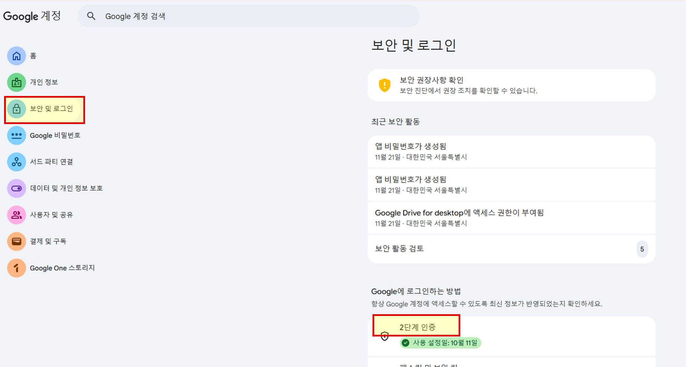
- 2단계 인증 선택
- 전화번호로 인증
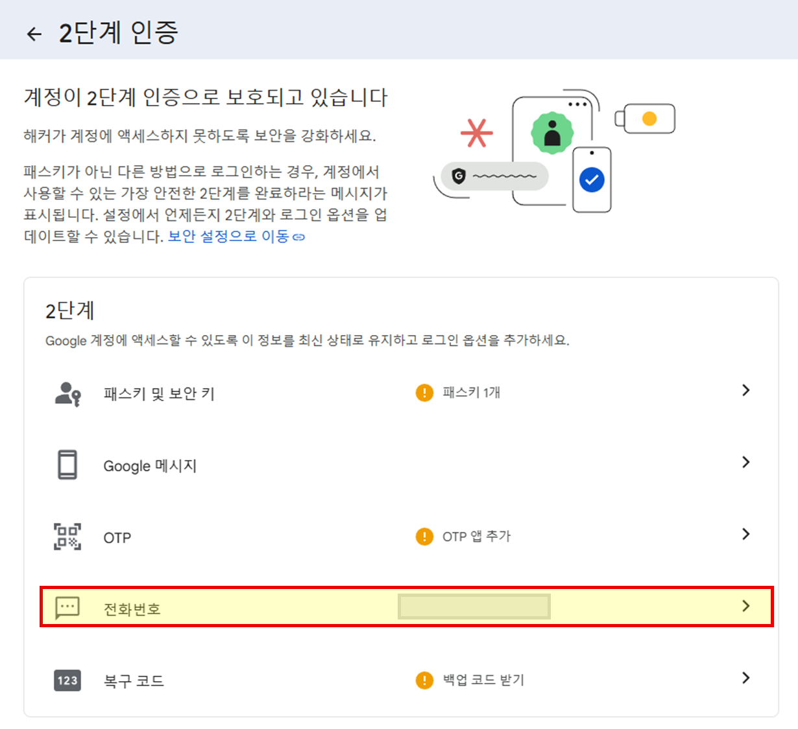
- 앱 비밀번호 설정
- 하단에 “앱 비밀번호” 클릭
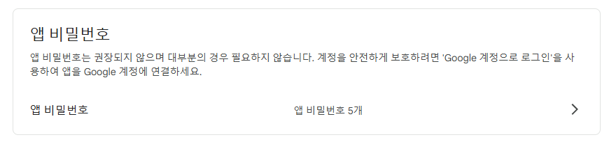
- 보안 > 검색창에 “앱 비밀번호” 검색
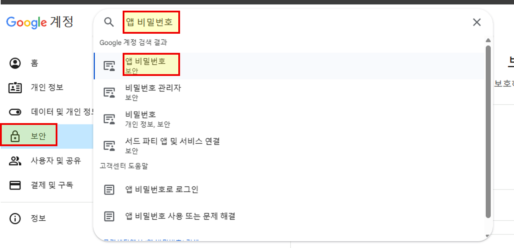
- 다시 로그인
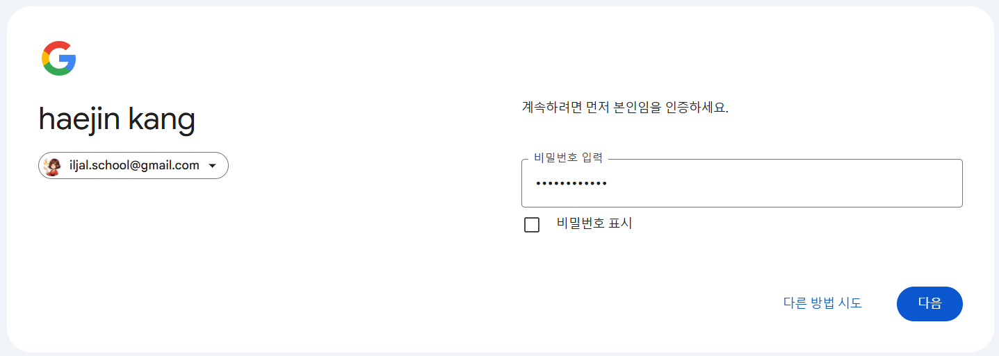
- 앱 이름 설정 후 만들기 클릭
- 아무 이름이나 상관 없음
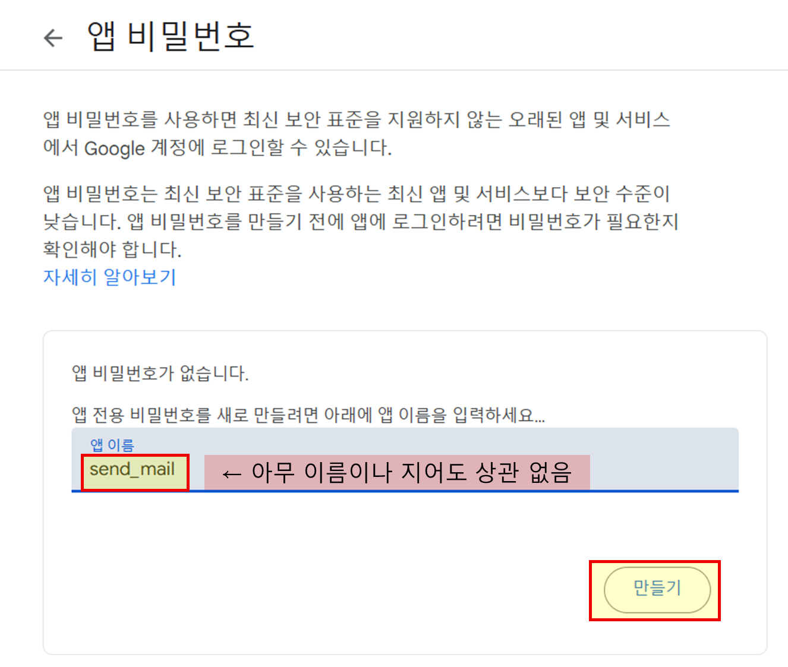
- 앱 비밀번호 메모장이나 쪽지에 적어놓기
- 이 비밀번호가 있으면 본인 계정에 접속 가능함으로 주의
- 잊어버렸을 경우에는 앱 비밀번호를 새로 만들어야함(확인 불가)
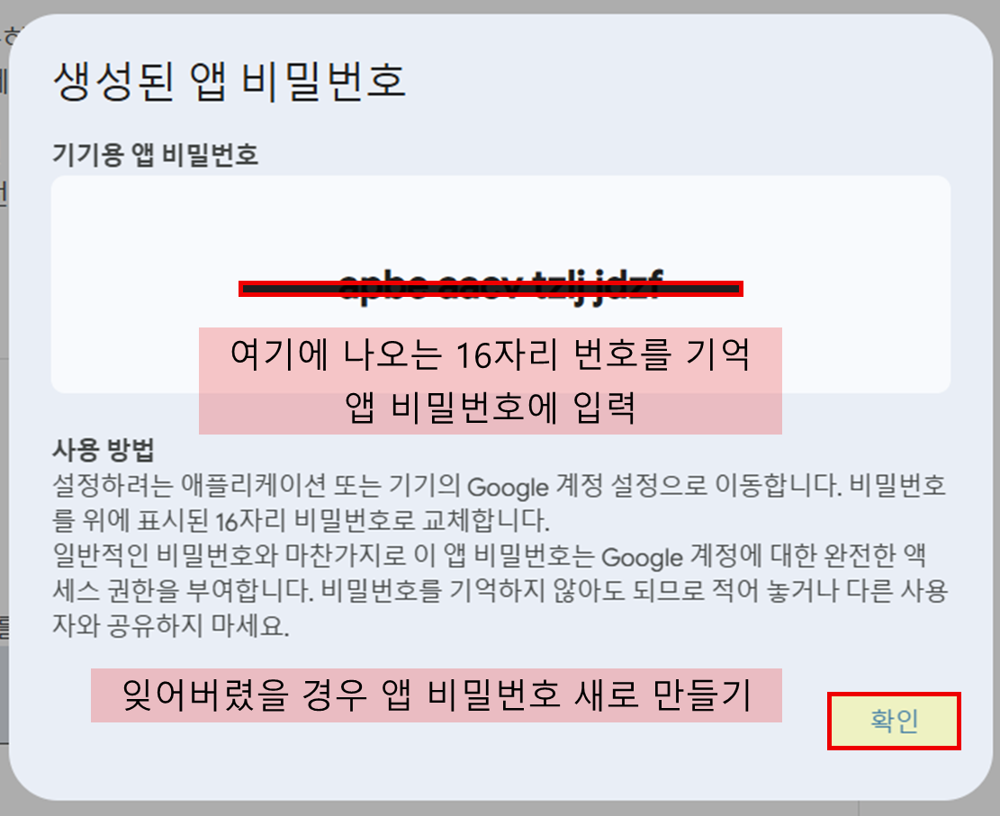
6.2이메일 보내는 코드
기본 메일 템플릿
# 표준 라이브러리 임포트 구문
import smtplib # SMTP 프로토콜을 이용한 메일 전송 기능 제공 모듈
from email.mime.text import MIMEText # 텍스트/HTML 본문을 담는 MIME 파트 생성용 클래스
# Gmail SMTP 서버 설정 상수 정의
SMTP_SERVER = "smtp.gmail.com" # Gmail SMTP 서버 호스트명 설정
SMTP_PORT = 465 # SSL 기반 SMTP 포트 번호 설정
GMAIL_USER = "yourname@gmail.com" # 발신 계정 이메일 주소 설정
APP_PASSWORD = "16자리_앱_비밀번호" # 2단계 인증 활성화 후 발급한 앱 비밀번호 문자열 설정
def send_simple_mail(to_addr, subject, body):
"""
단순 텍스트 메일 전송 함수 정의
- to_addr: 수신자 이메일 주소 문자열
- subject: 메일 제목 문자열
- body: 메일 본문 텍스트 문자열
"""
# 본문이 텍스트인 MIME 메시지 생성 처리
# _charset="utf-8"로 한글 포함 본문 인코딩 문제 예방 처리
msg = MIMEText(body, _charset="utf-8")
# 필수 헤더 설정 처리
msg["Subject"] = subject # 제목 헤더 설정
msg["From"] = GMAIL_USER # 발신자 헤더 설정
msg["To"] = to_addr # 수신자 헤더 설정
# SSL로 SMTP 서버에 직접 연결 후 로그인 및 전송 처리
# with 블록으로 연결 수명 자동 정리 보장 처리
with smtplib.SMTP_SSL(SMTP_SERVER, SMTP_PORT) as smtp:
# 앱 비밀번호를 사용한 계정 인증 수행 처리
smtp.login(GMAIL_USER, APP_PASSWORD)
# 구성된 MIME 메시지 객체를 그대로 전송 처리
# send_message는 헤더/본문을 RFC 규격에 맞게 직렬화하여 전송 처리
smtp.send_message(msg)
# 모듈이 스크립트로 직접 실행될 때만 테스트 발송 수행 처리
if __name__ == "__main__":
send_simple_mail(
to_addr="iljal.school@gmail.com", # 수신자 주소 지정
subject="[테스트] 기본 메일 발송", # 제목 지정
body="ChatGPT와 파이썬으로 쉽게 시작하는 업무자동화 재미있어요!" # 본문 지정
)
첨부 파일 이메일 템플릿
# 표준 라이브러리 임포트 구문
import smtplib # SMTP 프로토콜을 이용해 메일을 전송하는 모듈
from email.mime.text import MIMEText # 텍스트 또는 HTML 본문을 담는 MIME 파트 생성용 클래스
from email.mime.multipart import MIMEMultipart # 여러 파트를 묶는 컨테이너 역할 클래스
from email.mime.base import MIMEBase # 임의의 바이너리 파일을 첨부하기 위한 기본 MIME 클래스
from email import encoders # 첨부파일을 Base64 등으로 인코딩하기 위한 유틸리티
from pathlib import Path # 파일 경로를 안전하게 다루기 위한 경로 객체 유틸리티
from urllib.parse import quote
# Gmail SMTP 서버 설정 상수
SMTP_SERVER = "smtp.gmail.com" # Gmail SMTP 서버 주소 설정
SMTP_PORT = 465 # SSL 기반 SMTP 포트 번호 설정
GMAIL_USER = "yourname@gmail.com" # 발신 계정 이메일 주소 설정
APP_PASSWORD = "16자리_앱_비밀번호" # 2단계 인증 활성화 후 발급한 앱 비밀번호
def send_html_with_attachment(to_addr, subject, html_body, attach_path):
msg = MIMEMultipart("mixed")
msg["Subject"] = subject
msg["From"] = GMAIL_USER
msg["To"] = to_addr
msg.attach(MIMEText(html_body, "html", _charset="utf-8"))
if attach_path:
p = Path(attach_path)
filename = p.name # 예: 삼성전자_251216.xlsx
with p.open("rb") as f:
part = MIMEBase("application", "octet-stream")
part.set_payload(f.read())
encoders.encode_base64(part)
# (1) Content-Type에도 name= 추가 (일부 클라이언트 대응)
part.add_header("Content-Type", "application/octet-stream", name=filename)
# (2) Content-Disposition: filename(가독용) + filename*(RFC2231 인코딩) 동시 제공
# filename* = utf-8'' + URL-encoded
encoded = quote(filename, safe="")
part.add_header(
"Content-Disposition",
"attachment",
filename=filename,
**{"filename*": f"utf-8''{encoded}"},
)
msg.attach(part)
with smtplib.SMTP_SSL(SMTP_SERVER, SMTP_PORT) as smtp:
smtp.login(GMAIL_USER, APP_PASSWORD)
smtp.send_message(msg)
# 스크립트를 직접 실행했을 때만 아래 코드 블록 수행 처리
if __name__ == "__main__":
# 메일 본문으로 사용할 간단한 HTML 문자열 정의
html = """
<h3>안내</h3>
<p><b>HTML</b> 본문 테스트 내용</p>
"""
# 함수 호출을 통해 테스트 메일 전송 실행
# attach_path 인자에 파일명을 전달하면 현재 작업 디렉터리 기준으로 파일 탐색 동작
# 절대경로 사용 필요 시 예시: r"C:\data\reports\보고서.pdf" 또는 "C:/data/reports/보고서.pdf" 입력 권장
send_html_with_attachment(
to_addr="iljal.school@gmail.com", # 수신자 이메일 주소 지정
subject="[테스트] HTML+첨부 전송", # 메일 제목 지정
html_body=html, # HTML 본문 지정
attach_path=r"C:\Users\student\Desktop\파이썬실습\1일차\삼성전자_251216.xlsx" # 첨부파일 경로 지정
)- 절대 경로를 사용할 경우
- 경로를 복사해서 r”복사한 경로 붙여넣기”
- 본문 내용 HTML코드 만들기
엑셀 파일 내용을 이용하여 이메일 대량 발송하기
- 프롬프트
파이썬으로 엑셀의 내용을 가지고 gmail로 자동 대용량 이메일 발송을 하려고해. 엑셀 데이터는 번호 이메일 주소 회사명 수신자 이름 메일 제목 메일 내용 첨부파일 경로 이런 헤더를 가지고있어. 엑셀 데이터는 탐색기로 선택하게 해줘. 2단계 보안 인증을 해놨으니 앱 비밀번호로 보내는 코드를 만들어줘
# -*- coding: utf-8 -*-
"""
엑셀 데이터 기반 Gmail 대용량 메일 발송 스크립트
- 컬럼: 번호, 이메일 주소, 회사명, 수신자 이름, 메일 제목, 메일 내용, 첨부파일 경로
- Gmail 2단계 인증 + 앱 비밀번호 사용 전제
"""
# 0) 라이브러리 임포트 단계 ------------------------------------------------------
# 데이터 로드를 위한 판다스 임포트
import pandas as pd # 데이터 프레임 처리용 라이브러리 임포트
# 이메일 전송을 위한 표준 라이브러리 임포트
import smtplib # SMTP 프로토콜 사용을 위한 라이브러리 임포트
from email.mime.multipart import MIMEMultipart # 다중 파트 메일 생성을 위한 클래스 임포트
from email.mime.text import MIMEText # 텍스트 본문 생성을 위한 클래스 임포트
from email.mime.base import MIMEBase # 첨부파일 기본 클래스를 위한 임포트
from email import encoders # 첨부파일 인코딩 유틸리티 임포트
# 파일 경로 처리와 타입 판별을 위한 라이브러리 임포트
from pathlib import Path # OS 독립적 경로 처리를 위한 클래스 임포트
import mimetypes # 파일 MIME 타입 추정 유틸리티 임포트
# 기타 유틸리티 임포트
import re # 이메일 형식 검증을 위한 정규표현식 모듈 임포트
import time # 전송 간 간격 제어를 위한 모듈 임포트
from datetime import datetime # 로그 타임스탬프 생성을 위한 모듈 임포트
# 1) 사용자 설정 값 정의 단계 ------------------------------------------------------
# Gmail 계정 정보 설정
SMTP_SERVER = "smtp.gmail.com" # Gmail SMTP 서버 주소 설정
SMTP_PORT = 465 # SSL 전용 포트 번호 설정
GMAIL_USER = "yourname@gmail.com" # 발신 Gmail 주소 설정
APP_PASSWORD = "앱_비밀번호_16자리" # 앱 비밀번호 문자열 설정
# 엑셀 파일 경로 설정
EXCEL_PATH = r"C:\path\to\수신자목록.xlsx" # 수신자 목록 엑셀 파일 경로 설정
# 전송 안전 설정
SEND_INTERVAL_SEC = 2 # 계정 보호 및 한도 분산을 위한 메시지 간 대기 시간(초) 설정
DRY_RUN = False # True 설정 시 실제 발송 미수행 및 콘솔 출력만 수행 설정
# 2) 유효성 검사 함수 정의 단계 ---------------------------------------------------
# 이메일 주소 형식 검증 함수 정의
EMAIL_REGEX = re.compile(r"^[A-Za-z0-9._%+-]+@[A-Za-z0-9.-]+\.[A-Za-z]{2,}$") # 단순 이메일 정규식 패턴 정의
def is_valid_email(addr: str) -> bool:
"""이메일 형식 유효성 검사 함수 정의"""
if not isinstance(addr, str): # 문자열 타입 확인 로직
return False # 부적합 결과 반환
return EMAIL_REGEX.match(addr.strip()) is not None # 패턴 일치 결과 반환
# 3) 첨부파일 파트 생성 함수 정의 단계 --------------------------------------------
def build_attachment_part(file_path: Path):
"""첨부파일 MIME 파트 생성 함수 정의"""
# 파일 존재 여부 검증 로직
if not file_path.exists() or not file_path.is_file(): # 경로 유효성 확인
raise FileNotFoundError(f"첨부 불가: 경로 확인 필요 -> {file_path}") # 오류 발생 처리
# MIME 타입 추정 로직
ctype, encoding = mimetypes.guess_type(str(file_path)) # 파일 확장자 기반 타입 추정
if ctype is None or encoding is not None: # 타입 추정 실패 또는 인코딩 이슈 확인
ctype = "application/octet-stream" # 일반 이진 파일 타입 기본값 지정
maintype, subtype = ctype.split("/", 1) # 메인/서브 타입 분리
# MIME 파트 생성 로직
with open(file_path, "rb") as f: # 바이너리 읽기 모드로 파일 오픈
part = MIMEBase(maintype, subtype) # MIMEBase 객체 생성
part.set_payload(f.read()) # 파일 내용을 페이로드로 설정
# 페이로드 인코딩 로직
encoders.encode_base64(part) # Base64 인코딩 적용
# 헤더 설정 로직
part.add_header("Content-Disposition", "attachment", filename=file_path.name) # 첨부파일 이름 지정
return part # 첨부 파트 객체 반환
# 4) 단일 메시지 객체 생성 함수 정의 단계 -----------------------------------------
def build_message(sender: str,
to_addr: str,
subject: str,
body_text: str,
attachment_path: str | None):
"""수신자별 MIMEMultipart 메시지 생성 함수 정의"""
# 기본 메시지 컨테이너 생성 로직
msg = MIMEMultipart() # 다중 파트 이메일 객체 생성
msg["From"] = sender # 발신자 주소 헤더 설정
msg["To"] = to_addr # 수신자 주소 헤더 설정
msg["Subject"] = subject or "" # 제목 헤더 설정(결측 시 빈 문자열 처리)
# 본문 추가 로직
# 메일 내용이 HTML인지 단순 텍스트인지 간이 판별 후 적용
is_html = isinstance(body_text, str) and ("<" in body_text and ">" in body_text) # HTML 태그 존재 여부 판별
text_part = MIMEText(body_text or "", "html" if is_html else "plain", _charset="utf-8") # 본문 파트 생성
msg.attach(text_part) # 메시지에 본문 파트 부착
# 첨부파일 처리 로직
attach_str = (attachment_path or "").strip() # 첨부 경로 문자열 정리
if attach_str: # 첨부 경로 존재 조건 분기
part = build_attachment_part(Path(attach_str)) # 첨부 파트 생성 함수 호출
msg.attach(part) # 메시지에 첨부 파트 부착
return msg # 완성된 메시지 객체 반환
# 5) 메일 발송 실행 함수 정의 단계 -------------------------------------------------
def send_bulk_from_excel(excel_path: str):
"""엑셀 데이터를 읽어 일괄 메일 발송 수행 함수 정의"""
# 5-1) 엑셀 파일 로드 로직
print("[정보] 엑셀 로드 시작") # 진행 상황 출력
df = pd.read_excel(excel_path, dtype=str) # 모든 컬럼 문자열로 로드하여 결측/형식 문제 최소화
df = df.fillna("") # 결측값 공백 치환 처리
print(f"[정보] 로드 완료, 행 수: {len(df)}") # 행 수 출력
# 5-2) 필수 컬럼 존재 검증 로직
required_cols = ["번호", "이메일 주소", "회사명", "수신자 이름", "메일 제목", "메일 내용", "첨부파일 경로"] # 요구 컬럼 목록 정의
missing = [c for c in required_cols if c not in df.columns] # 누락 컬럼 탐지
if missing: # 누락 존재 분기
raise ValueError(f"필수 컬럼 누락: {missing}") # 명시적 예외 발생
# 5-3) 결과 로그 누적 구조 초기화 로직
results = [] # 전송 결과 저장용 리스트 초기화
# 5-4) SMTP 연결 생성 로직
print("[정보] SMTP SSL 연결 시도") # 진행 상황 출력
server = None # 서버 객체 초기화
try:
if not DRY_RUN: # 실제 발송 모드 분기
server = smtplib.SMTP_SSL(SMTP_SERVER, SMTP_PORT) # SSL 기반 SMTP 연결 생성
server.login(GMAIL_USER, APP_PASSWORD) # 계정 로그인 수행
print("[정보] SMTP 준비 완료") # 상태 출력
# 5-5) 행 단위 발송 루프 로직
for idx, row in df.iterrows(): # 데이터프레임 각 행 순회
# 5-5-1) 행 데이터 파싱 로직
no = row["번호"].strip() # 고유 번호 문자열 추출
to_addr = row["이메일 주소"].strip() # 수신자 이메일 추출
company = row["회사명"].strip() # 회사명 추출
name = row["수신자 이름"].strip() # 수신자 이름 추출
subject = row["메일 제목"].strip() # 제목 추출
body = row["메일 내용"] # 본문 추출
attach_path = row["첨부파일 경로"].strip() # 첨부 경로 추출
# 5-5-2) 제목/본문 개인화 치환 로직
# {회사명}, {수신자이름} 플레이스홀더 지원
subject_final = subject.replace("{회사명}", company).replace("{수신자이름}", name) # 제목 치환 처리
body_final = body.replace("{회사명}", company).replace("{수신자이름}", name) # 본문 치환 처리
# 5-5-3) 이메일 형식 유효성 검사 로직
if not is_valid_email(to_addr): # 형식 검증 실행
msg_text = "이메일 형식 오류" # 상태 메시지 지정
print(f"[경고] 행 {idx} 번호 {no} -> {msg_text}: {to_addr}") # 경고 로그 출력
results.append({"번호": no, "이메일 주소": to_addr, "상태": "실패", "사유": msg_text}) # 결과 누적
continue # 다음 행으로 진행
# 5-5-4) 메시지 객체 생성 로직
try:
msg = build_message(
sender=GMAIL_USER, # 발신자 주소 전달
to_addr=to_addr, # 수신자 주소 전달
subject=subject_final, # 치환된 제목 전달
body_text=body_final, # 치환된 본문 전달
attachment_path=attach_path if attach_path else None, # 첨부 경로 전달
) # 메시지 생성 함수 호출
except Exception as e:
err = f"메시지 구성 실패: {e}" # 오류 메시지 구성
print(f"[오류] 행 {idx} 번호 {no} -> {err}") # 오류 로그 출력
results.append({"번호": no, "이메일 주소": to_addr, "상태": "실패", "사유": err}) # 결과 누적
continue # 다음 행으로 진행
# 5-5-5) 메시지 전송 로직
try:
if DRY_RUN: # 점검 모드 분기
print(f"[DRY-RUN] 전송 예정 -> 번호:{no}, 수신자:{to_addr}, 제목:{subject_final}") # 점검 정보 출력
else:
server.send_message(msg) # 실제 메시지 전송 수행
results.append({"번호": no, "이메일 주소": to_addr, "상태": "성공", "사유": ""}) # 성공 결과 누적
print(f"[성공] 행 {idx} 번호 {no} -> 전송 완료") # 성공 로그 출력
except smtplib.SMTPException as e:
err = f"SMTP 전송 실패: {e.__class__.__name__}: {e}" # SMTP 예외 메시지 구성
print(f"[오류] 행 {idx} 번호 {no} -> {err}") # 오류 로그 출력
results.append({"번호": no, "이메일 주소": to_addr, "상태": "실패", "사유": err}) # 실패 결과 누적
except Exception as e:
err = f"일반 전송 실패: {e}" # 기타 예외 메시지 구성
print(f"[오류] 행 {idx} 번호 {no} -> {err}") # 오류 로그 출력
results.append({"번호": no, "이메일 주소": to_addr, "상태": "실패", "사유": err}) # 실패 결과 누적
# 5-5-6) 전송 간 간격 제어 로직
time.sleep(SEND_INTERVAL_SEC) # 서버 한도 보호를 위한 대기 수행
finally:
# 5-6) SMTP 연결 종료 로직
if server is not None: # 서버 객체 존재 여부 확인
try:
server.quit() # 정상 종료 시도
except Exception:
pass # 종료 오류 무시 처리
# 5-7) 결과 로그 저장 로직
ts = datetime.now().strftime("%Y%m%d_%H%M%S") # 타임스탬프 문자열 생성
out_path = Path(excel_path).with_name(f"발송결과_{ts}.xlsx") # 동일 폴더 결과 파일 경로 생성
pd.DataFrame(results).to_excel(out_path, index=False) # 발송 결과 엑셀 저장
print(f"[정보] 결과 저장 완료 -> {out_path}") # 저장 경로 출력
# 6) 진입점 정의 단계 --------------------------------------------------------------
if __name__ == "__main__": # 스크립트 직접 실행 분기
print("[시작] 대용량 메일 발송 작업 시작") # 시작 로그 출력
print(f"[설정] EXCEL_PATH: {EXCEL_PATH}") # 엑셀 경로 설정 출력
print(f"[설정] DRY_RUN: {DRY_RUN}") # 점검 모드 설정 출력
try:
send_bulk_from_excel(EXCEL_PATH) # 메인 발송 함수 호출
print("[완료] 전체 작업 종료") # 완료 로그 출력
except Exception as e:
print(f"[치명] 초기화 단계 오류: {e}") # 초기 실패 로그 출력
- 본문 내용 HTML코드 만들기
- 생성된 HTML코드를 “메일 내용” 열에 붙여넣기
```안녕하세요. 일잘러스쿨 프밍쌤입니다. 2025년 상반기 매출 내역을 보내드리니 확인 바랍니다. 일잘러 스쿨의 다양한 상품은 아래의 링크에서 확인하실 수 있습니다.``` 위의 내용을 보내면서 아래에 "홈페이지 바로가기" 버튼을 추가한 HTML형식으로 보내고싶어. 본문에 들어갈 HTML코드를 생성해줘 홈페이지 주소: https://www.youtube.com/@iljal-school
응용 문제
- “의류_카테고리별_판매_데이터.xlsx”의 데이터를 정렬하여 “지점별”로 파일을 나누고,
각각의 파일을 “이메일보내기”에 있는 사람들에게 발송하기
6.3이메일 발송 실패 시 흔한 원인
- 인증 관련 원인
- 2단계 인증 미설정 상태, 앱 비밀번호 미발급 상태, 앱 비밀번호 오입력 또는 공백 포함 입력 오류 항목
- 정책 및 한도 관련 원인
- 일일 발송 한도 초과, 짧은 시간 과다 발송, 스팸 유사 패턴 판정 항목
- 네트워크 관련 원인
- 포트 465/587 차단, 사내 방화벽 또는 프록시 간섭 항목
- 주소/포맷 관련 원인
- 수신자 주소 오타, 존재하지 않는 도메인, 첨부 용량 25MB 초과, 비정상 MIME 구성 항목
대시보드 만들기
대시보드 만들기
1.대시보드란
- 여러 데이터를 한눈에 볼 수 있도록 정리한 화면
- 표, 그래프, 핵심 지표를 함께 보여주는 자료
- 데이터를 단순히 나열하는 것이 아니라 판단하기 쉽게 정리한 결과물
- 업무 현황, 문제 지점, 변화 흐름을 빠르게 파악하기 위한 도구
2.대시보드가 필요한 이유
3.데이터를 빠르게 이해할 수 있음
- 원본 데이터는 행과 열이 많아 전체 흐름을 파악하기 어려움
- 대시보드는 데이터를 요약해서 핵심만 보여줌
- 숫자만 보는 것보다 그래프와 지표를 함께 보면 이해가 빠름
4.중요한 정보를 먼저 볼 수 있음
- 모든 데이터가 똑같이 중요한 것은 아님
- 의사결정에 필요한 핵심 정보를 먼저 보여줘야 함
- 예: 총매출, 순매출, 주문건수, 평균 주문금액
5.비교와 흐름을 쉽게 볼 수 있음
- 지점별 차이
- 담당자별 차이
- 상품별 순위
- 월별 변화
- 결제수단별 비중
6.반복 보고 업무를 줄일 수 있음
- 매번 엑셀을 열고, 필터링하고, 그래프를 만드는 작업을 줄일 수 있음
- 같은 형식의 보고서를 반복해서 만들 때 효과적
- 데이터만 바꾸면 같은 구조의 대시보드를 다시 만들 수 있음
7.업무 판단 속도를 높일 수 있음
- 어디가 잘되고 있는지 확인 가능
- 어디에 문제가 있는지 확인 가능
- 다음에 무엇을 해야 할지 결정하기 쉬움
8.좋은 대시보드의 핵심
9.목적이 분명해야 함
- 대시보드는 먼저 목적을 정해야 함
- “무엇을 보여줄 것인가”보다 “무엇을 판단할 것인가”가 중요함
예시
| 대시보드 종류 | 목적 |
|---|---|
| 매출 대시보드 | 매출 흐름과 주요 상품 파악 |
| 교육 만족도 대시보드 | 만족도와 개선 필요 항목 파악 |
| 출석 대시보드 | 결석률이 높은 대상자 확인 |
| 업무 현황 대시보드 | 지연 업무와 담당자별 처리량 확인 |
| 설문 분석 대시보드 | 응답 경향과 주요 의견 파악 |
10.핵심 지표를 먼저 보여줘야 함
- 가장 중요한 숫자는 상단에 배치
- 사용자가 화면을 열자마자 전체 상황을 이해할 수 있어야 함
예시
| 핵심 지표 | 의미 |
|---|---|
| 총매출 | 전체 매출 규모 |
| 순매출 | 할인 후 실제 매출 |
| 주문건수 | 거래 발생 횟수 |
| 평균 주문금액 | 주문 1건당 평균 금액 |
11.표와 그래프를 적절히 사용해야 함
| 보고 싶은 내용 | 적합한 표현 |
|---|---|
| 정확한 개별 데이터 | 표 |
| 항목별 비교 | 막대그래프 |
| 시간 흐름 | 선그래프 |
| 비율 | 원그래프 또는 막대그래프 |
| 순위 | 가로막대그래프 |
| 상세 내역 | 스크롤 가능한 표 |
12.바로 해석할 수 있어야 함
- 제목이 명확해야 함
- 단위가 표시되어야 함
- 큰 값부터 정렬되어야 함
- 색상이 과하지 않아야 함
- 숫자 라벨이 필요할 때 표시되어야 함
- 보는 사람이 별도 설명 없이 이해할 수 있어야 함
13.원본 데이터와 연결되어 있어야 함
- 대시보드는 원본 데이터에서 출발함
- 원본 데이터가 바뀌면 대시보드도 다시 만들 수 있어야 함
- 자동화하려면 데이터 흐름이 명확해야 함
기본 흐름
- 원본 데이터
- 데이터 정리
- 그룹별 요약
- 차트 생성
- 대시보드 화면 구성
14.HTML 형식으로 만드는 이유
15.웹브라우저에서 바로 열 수 있음
- 크롬, 엣지 같은 브라우저에서 바로 확인 가능
- 별도 프로그램 설치가 필요 없음
- HTML 파일을 더블클릭하면 대시보드가 열림
예시
매출_대시보드.html
16.화면 구성이 자유로움
- 카드, 표, 차트, 버튼, 필터 등을 자유롭게 배치 가능
- 엑셀보다 보고서형 화면을 만들기 좋음
- 한 화면 안에 핵심 지표와 그래프를 구조적으로 배치 가능
예시 구조
[총매출] [순매출] [주문건수] [평균 주문금액] [월별 매출 추이] [지점별 매출] [결제수단별 주문건수] [상품별 매출 TOP 10] [주문 상세 데이터]
17.인터랙티브 기능을 넣을 수 있음
- 필터
- 검색
- 정렬
- 스크롤 표
- 마우스 오버 시 상세 값 표시
- 조건 선택 후 화면 변경
18.공유하기 쉬움
| 공유 방식 | 설명 |
|---|---|
| 파일 공유 | HTML 파일을 메일이나 메신저로 전달 |
| 공유 폴더 | 사내 공유 폴더에 저장 |
| 웹 연결 | 홈페이지나 내부 포털에 연결 |
| PDF 저장 | 브라우저에서 PDF로 저장 |
19.파이썬 자동화와 연결하기 좋음
- 파이썬은 데이터 처리에 적합함
- HTML은 결과 화면 구성에 적합함
- 두 가지를 연결하면 자동화 결과물을 보기 좋게 만들 수 있음
역할 구분
파이썬: 데이터 불러오기, 정리, 계산, 요약 HTML: 결과 화면 구성, 차트 표시, 표 표시
20.HTML 대시보드 제작 흐름
- 엑셀 파일 불러오기
- 필요한 열 정리하기
- 데이터 형식 정리하기
- 지점별, 상품별, 월별로 요약하기
- 그래프 만들기
- HTML 화면에 배치하기
- 대시보드 파일로 저장하기
21.AI에게 일을 명확하게 시키기
좋지 않은 요청
매출 데이터로 대시보드 만들어줘.
좋은 요청
엑셀 파일을 불러와서 매출 대시보드를 만들어줘. 상단에는 총매출, 순매출, 주문건수, 평균 주문금액을 카드 형태로 보여줘. 중간에는 월별 순매출 추이 그래프를 넣어줘. 아래에는 지점별 순매출, 결제수단별 주문건수, 상품별 매출 TOP 10을 보여줘. 마지막에는 주문 상세 데이터를 표로 보여줘. 결과는 HTML 파일로 저장해줘.
템플릿
[작업 설명] ## 작업 목표 엑셀 주문 데이터를 기준으로 월별 매출 HTML 대시보드를 생성하는 파이썬 코드를 만들어줘. 사용자는 엑셀 파일을 직접 첨부하지 않고, 파이썬 실행 시 파일 탐색기에서 엑셀 파일을 선택할 거야. ## INPUT 엑셀 파일에는 주문데이터 시트가 있고, 헤더는 아래와 같아. ``` **엑셀 파일의 헤더 입력** ``` 주요 항목은 아래 값을 기준으로 해줘. ``` **고정된 항목이 있는 경우 하위 항목을 제시해 주는것이 레이아웃 잡는데 유리함** 지점: 서울본점, 대전지점, 부산지점, 광주지점, 대구지점 결제수단: 현금영수증, 계좌이체, 간편결제, 카드 상품군: 전산용품, 사무용품, 생활용품, 비품, 소모품 ``` ## PROCESS - 파이썬 실행 시 파일 탐색기로 .xlsx 파일을 선택하게 해줘. - 선택한 파일의 주문데이터 시트를 읽어와. - 월 선택 필터는 전체와 데이터에 있는 모든 월을 자동으로 표시해줘. - 월을 선택하면 KPI, 차트, 상세 테이블이 해당 월 기준으로 바뀌게 해줘. - 단, 월별 순매출 추이(전체) 차트는 월 선택과 관계없이 전체 월 추이를 항상 보여줘. - HTML 파일은 실행 파일 위치의 결과 폴더에 저장해줘. - 결과 폴더가 없으면 자동으로 생성해줘. - 파일명은 마지막 주문일자 기준으로 매출주문_분석_yymmdd.html 형식으로 저장해줘. - 같은 파일명이 있으면 _1, _2처럼 번호를 붙여 덮어쓰지 않게 해줘. ## OUTPUT 실행 가능한 파이썬 코드 1개를 작성해줘. ## HTML 세부사항 HTML 대시보드에는 아래 항목을 포함해줘. KPI: ** 중심으로 보고자 하는 내용(정확한 헤더명을 이용해서 계산 방법을 기재하면 더 좋음) - 총매출 - 순매출 - 주문건수 - 평균 주문금액 - 취소율 차트: ** 보여주고 싶은 차트가 있는 경우 차트명과 차트 종류, 기타 요청사항 기재 ** - 월별 순매출 추이(전체): 선 차트 - 상품군별 매출 비중: 도넛 차트, 범례 오른쪽, 마우스 오버 시 합계 금액 표시 - 지점별 순매출: 세로막대 그래프 - 결제수단별 주문건수: 세로막대 그래프 - 담당자별 순매출: 가로막대 그래프 - 상품별 매출액 TOP 10: 가로막대 그래프 표: ** 제시하고 싶은 표가 있다면 헤더명과 정렬 방법 제시** - 주문 상세 데이터: 주문일자, 주문번호, 고객명, 지점, 담당자, 상품군, 상품명, 수량, 매출금액, 할인금액, 순매출, 주문상태, 결제수단이 주문일자 기준으로 오름차순 정렬되어 제시 차트 배치: ** 한 줄을 가로 라인으로 보고 세로로 여러개를 제시하고 싶을 경우 |를 이용하여 구분 하여 나타내기 ** ``` 월별 순매출 추이(전체)|상품군별 매출 비중 지점별 순매출 | 결제수단별 주문건수 담당자별 순매출 | 상품별 매출액 TOP 10 주문 상세 데이터 ``` 디자인: - HTML 파일 하나만 생성해줘. - 인터넷 연결 없이 열 수 있게 해줘. - 깔끔한 업무용 대시보드 스타일로 만들어줘. - 숫자는 천 단위 콤마를 적용해줘. - 금액은 원 단위로 표시해줘. - 차트 색상은 다음의 컬러를 참고해서 조화롭게 만들어줘. #845ec2 #d65db1 #ff6f91 #ff9671 #ffc75f #f9f871
22.대시보드 제작 전 확인 질문
| 질문 | 예시 |
|---|---|
| 무엇을 판단하려고 하는가? | 매출이 좋은 지점과 부진한 지점을 찾는다 |
| 누가 볼 자료인가? | 팀장, 임원, 실무자 |
| 가장 중요한 숫자는 무엇인가? | 순매출, 주문건수, 평균 주문금액 |
| 어떤 기준으로 비교할 것인가? | 월별, 지점별, 담당자별, 상품별 |
| 결과물은 어떻게 공유할 것인가? | HTML 파일, PDF, 사내 공유 폴더 |
| 반복해서 사용할 것인가? | 매월 같은 양식으로 업데이트 |
23.정리
- 대시보드는 데이터를 판단하기 쉽게 정리한 화면
- 좋은 대시보드는 목적이 분명해야 함
- 핵심 지표를 먼저 보여줘야 함
- 표와 그래프를 적절히 함께 사용해야 함
- HTML 형식은 브라우저에서 바로 열 수 있어 공유가 쉬움
- HTML은 화면 구성이 자유롭고 인터랙티브 기능을 넣기 좋음
- 파이썬은 데이터 처리, HTML은 결과 화면 구성에 적합함
- 대시보드 실습은 자동화의 전체 흐름을 설명하기 좋음
3일차
학습 목표
- 코딩에이전트가 무엇인지 설명하고 사용할 수 있다.
- 웹페이지를 조작하여 필요한 자료를 가지고 올 수 있다.
- ChatGPT API를 이용해서 파이썬으로 필요한 요청을 할 수 있다.
- 나의 실제 업무를 자동화 할 수 있다.
- 파이썬 프로그램을 편리하게 실행 할 수 있다.
카카오톡, 브라우저에서 로그아웃하고 자료 지우기
코딩 에이전트(Codex)
코딩 에이전트(Codex)
1.1생성형 AI의 두 가지 활용 방식
| 구분 | 채팅형 생성형 AI | 코딩 에이전트 |
|---|---|---|
| 기본 형태 | 대화창 중심 | 작업 공간·파일·도구 연동 중심 |
| 주요 역할 | 질문에 대한 답변, 코드 초안 생성 | 코드 작성부터 수정·실행·검증까지 작업 수행 |
| 사용자의 역할 | 질문 작성, 코드 복사·실행·오류 공유 | 목표·조건 제시, 결과 검토·의사결정 |
| 파일 접근 | 사용자가 내용 직접 붙여넣기 또는 파일 업로드 | 프로젝트 폴더의 파일을 읽고 수정 가능 |
| 실행 환경 | 대화창 내 설명 중심 | 터미널, 브라우저, 테스트 도구 등 활용 가능 |
| 결과물 | 코드·설명·아이디어 | 수정된 파일, 실행 결과, 오류 수정, 작업 기록 |
| 적합 업무 | 학습, 아이디어 정리, 간단한 코드 작성 | 여러 파일이 연결된 개발·반복 수정·자동화 작업 |
핵심 차이: 채팅형 AI는 "답변" 중심, 코딩 에이전트는 "작업 수행" 중심
1.2채팅형 생성형 AI의 특징
1.기본 작업 흐름
- 사용자가 원하는 작업 설명
- AI가 코드 또는 해결 방법 제안
- 사용자가 코드를 복사하여 실행
- 오류 발생 시 오류 메시지 재전달
- AI가 수정 코드 제안
- 사용자가 다시 실행 및 결과 확인
2.장점
- 대화하듯 질문 가능한 접근성
- 코딩 원리와 코드 구조를 설명받기 좋은 방식
- 작은 기능 단위의 코드 생성에 적합
- 초보자의 학습 과정에 적합
- 다양한 대안과 아이디어 비교에 적합
3.한계
- 실제 실행은 사용자가 직접 수행하는 구조
- 현재 파일 상태를 AI가 자동으로 알기 어려운 구조
- 오류 메시지, 파일 구조, 실행 결과를 다시 전달해야 하는 구조
- 여러 파일을 함께 수정하는 작업에서 반복 대화 증가 가능성
- 답변 코드가 실제 환경에서 바로 작동하는지 별도 검증 필요성
1.3코딩 에이전트의 개념
1.정의
- 사용자의 목표와 조건을 바탕으로 실제 개발 작업을 수행하도록 설계된 AI
- 코드 작성뿐 아니라 파일 확인, 코드 수정, 실행, 오류 분석, 테스트까지 연결하는 방식
- 작업 결과를 보고 다음 행동을 판단하는 반복형 작업 방식
2.핵심 역할
- 프로젝트 파일 구조 확인
- 기존 코드 읽기 및 이해
- 필요한 코드 작성 또는 수정
- 라이브러리 설치 여부 확인
- 코드 실행 및 오류 확인
- 오류 원인 분석 및 수정
- 결과 파일 또는 프로그램 동작 확인
- 변경 내용 요약 및 보고
3.작업 방식
- 목표 전달
- 현재 파일·코드 확인
- 작업 계획 수립
- 코드 수정 또는 생성
- 실행·테스트
- 오류 수정
- 결과 검토
- 작업 결과 보고
1.4같은 요청의 처리 방식 비교
사례: 엑셀 파일을 선택하여 민원 데이터를 분석하고 결과 파일을 저장하는 프로그램 제작
| 단계 | 채팅형 생성형 AI | 코딩 에이전트 |
|---|---|---|
| 요구사항 전달 | 사용자가 대화창에 입력 | 사용자가 목표·조건 입력 |
| 코드 작성 | 코드 텍스트로 제공 | 프로젝트 폴더에 코드 파일 생성 또는 수정 |
| 실행 | 사용자가 VS Code에서 직접 실행 | 에이전트가 실행 환경에서 테스트 가능 |
| 오류 발생 | 사용자가 오류 메시지를 복사하여 전달 | 에이전트가 오류 로그를 확인하고 수정 가능 |
| 결과 확인 | 사용자가 결과 파일 직접 확인 | 에이전트가 결과 파일 생성 여부 및 내용 점검 가능 |
| 반복 수정 | 대화 반복 필요 | 파일 기준으로 연속 작업 가능 |
코딩 에이전트는 "코드를 알려주는 도구"를 넘어 "개발 작업을 함께 수행하는 도구"로 이해하는 것이 적절함
1.5코딩 에이전트 활용 실습
1.코덱스 데스크톱 앱 다운로드 받기
https://chatgpt.com/ko-KR/codex
- 현재 무료버전의 챗GPT를 이용하는 경우에도 데스크탑 앱을 사용하면 코덱스 사용 가능
- 크레딧이 적긴 하지만 사용해 볼 수 있음
2.VS Code에서 코덱스 익스텐션 설치하기
평소 쓰는 VS Code 안에서 바로 코덱스에게 작업을 맡기는 방법
- VS Code 실행 → 왼쪽 막대의 확장(Extensions) 아이콘 클릭
- 단축키:
Ctrl+Shift+X
- 단축키:
- 검색창에 Codex 입력 → 게시자가 OpenAI인 확장 선택 → 설치(Install)
- 확장 ID:
openai.chatgpt— 이름이 비슷한 다른 확장과 구분할 때 확인
- 확장 ID:
- 설치 후 사이드바에 생긴 Codex 아이콘 클릭
- 아이콘이 안 보이면 VS Code 다시 시작
- 또는
Ctrl+Shift+P→ Codex: Open Codex Sidebar 실행
- Sign in with ChatGPT 클릭 → 브라우저에서 챗GPT 계정으로 로그인 → 허용 후 VS Code로 돌아오기
- 데스크톱 앱과 같은 챗GPT 계정 사용
- API 키로 로그인하는 방법도 있음
- 파일 → 폴더 열기로 작업할 폴더를 연 뒤 코덱스 입력창에 요청 입력
- 열린 파일·선택한 코드가 요청의 맥락으로 함께 전달됨
- 처음에는 연습용 폴더에서 시작, 중요한 파일은 미리 백업
- 파일 수정·명령 실행 전에 확인 창이 뜨면 내용을 읽고 승인
3.코덱스 실습하기
- 다운로드 폴더 정리시키기
- 웹 크롤링 시키기
- 사진 블러처리 시키기
1.6활용 시 주의사항
1.목표와 제약 조건의 명확화
- "알아서 만들어줘"보다 완료 기준 제시 필요성
- 입력·처리·출력 구조의 구체적 전달 필요성
- 기존 기능 유지 여부 명시 필요성
- 결과 파일명과 저장 위치 지정 필요성
2.실행 결과 검토 필요성
- 코드가 실행되었다고 업무 결과가 정확하다는 의미는 아님
- 결과 파일의 행 수, 합계, 날짜, 파일명 확인 필요성
- 실제 업무 규칙이 반영되었는지 검토 필요성
- 예외 상황 처리 여부 확인 필요성
3.민감 정보 관리
- API 키, 비밀번호, 고객 정보, 사내 기밀자료 입력 주의
- 코드에 비밀번호를 직접 작성하지 않는 방식 권장
- 환경 변수, 별도 설정 파일, 권한 관리 방식 활용 필요성
- 외부 전송 기능 사용 전 수신자·첨부파일·발송 대상 재확인 필요성
4.변경 범위 관리
- 기존 파일을 바로 덮어쓰기 전 백업 필요성
- 수정 전·후 변경 내용 확인 필요성
- 한 번에 너무 많은 기능을 추가하기보다 기능 단위 요청 권장
- 중요한 자동화는 테스트 데이터로 먼저 검증 필요성
1.7사람과 코딩 에이전트의 역할 분담
| 역할 | 사람의 역할 | 코딩 에이전트의 역할 |
|---|---|---|
| 문제 정의 | 업무 목적과 기준 결정 | 요구사항 구조화 지원 |
| 업무 규칙 | 예외 조건과 판단 기준 결정 | 규칙을 코드로 구현 |
| 개발 | 우선순위와 변경 범위 결정 | 코드 작성·수정·테스트 |
| 검증 | 업무 결과의 적절성 판단 | 실행 결과와 오류 점검 |
| 책임 | 최종 승인 및 의사결정 | 작업 보조 및 결과 제안 |
코딩 에이전트는 업무 판단의 책임자가 아니라, 정해진 목표를 빠르게 구현하고 검증을 돕는 협업 도구임
1.8핵심 정리
- 채팅형 생성형 AI: 질문에 답하고 코드 초안을 만드는 대화형 도구
- 코딩 에이전트: 파일·코드·실행 환경을 활용하여 개발 작업을 수행하는 도구
- 채팅형 AI의 강점: 학습, 설명, 아이디어, 작은 코드 단위 작업
- 코딩 에이전트의 강점: 기존 코드 수정, 여러 파일 처리, 실행·오류 수정, 반복 작업
- 효과적인 활용의 핵심: 명확한 목표, 구체적인 완료 기준, 결과 검토
- 최종 업무 판단과 책임: 사용자에게 남는 영역
API활용해서 보고서 만들기
API활용해서 보고서 만들기
1.이번 실습의 목표
엑셀에 정리된 판매 데이터를 파이썬으로 분석한 뒤, OpenAI API를 활용해 간단한 분석 보고서 생성
- 엑셀 데이터
- 파이썬으로 데이터 읽기
- 제품별·월별 판매량 계산
- 계산 결과를 요약 데이터로 정리
- OpenAI API에 분석 요청
- AI가 분석 리포트 작성
- 보고서 파일로 저장
계산은 파이썬이 하고, 해석과 문장화는 OpenAI API가 담당
| 작업 | 담당 |
|---|---|
| 엑셀 파일 읽기 | 파이썬 |
| 판매량 합계 계산 | 파이썬 |
| 제품별·월별 순위 계산 | 파이썬 |
| 계산 결과 구조화 | 파이썬 |
| 분석 문장 작성 | OpenAI API |
| 보고서 저장 | 파이썬 |
2.API란 무엇인가?
- API는 프로그램과 프로그램이 서로 데이터를 주고받기 위해 사용하는 연결 방식
- 일반적으로 ChatGPT는 사람이 웹 화면에 직접 질문을 입력해서 사용
- 반면 API는 파이썬 코드에서 OpenAI 모델을 직접 호출할 수 있음
| 구분 | 설명 |
|---|---|
| ChatGPT 웹 사용 | 사람이 화면에 직접 질문 입력 |
| OpenAI API 사용 | 파이썬 코드가 모델에 요청을 보냄 |
API를 사용하면 ChatGPT와 비슷한 기능을 내 자동화 프로그램 안에 넣을 수 있음
3.OpenAI API 키란 무엇인가?
- OpenAI API 키는 API를 사용할 때 필요한 비밀 인증값
- 파이썬 코드에서 OpenAI API를 호출하면 OpenAI는 API 키를 기준으로 다음 내용을 확인
| 확인 항목 | 의미 |
|---|---|
| 누가 요청했는가 | 어떤 계정 또는 프로젝트에서 호출했는지 확인 |
| 사용 권한이 있는가 | API 사용이 가능한 계정인지 확인 |
| 사용량은 어디에 기록되는가 | 해당 계정의 사용량과 비용으로 기록 |
API 키는 비밀번호
API 키 = OpenAI API를 호출하기 위한 비밀 인증값
- API 키가 노출되면 다른 사람이 내 계정으로 API를 사용할 수 있음
- 따라서 API 키는 절대 공개하면 안 됨!!
4.API 키 발급 전 준비사항
| 준비 항목 | 설명 |
|---|---|
| OpenAI 계정 | OpenAI Platform에 로그인할 계정 |
| 결제 설정 | API 사용량 과금을 위한 결제 정보 또는 크레딧 |
| API 키 | 파이썬 코드에서 사용할 인증키 |
| 파이썬 실행 환경 | VS Code, 터미널, 주피터 노트북 등 |
ChatGPT Plus 구독과 OpenAI API 사용료는 별개
5.OpenAI API 키 발급 방법
OpenAI API 키는 OpenAI Platform에서 발급
6.OpenAI Platform 접속
- 브라우저에서 OpenAI Platform에 접속
- platform.openai.com
- OpenAI 계정으로 로그인
7.결제 설정 확인
API를 실제로 사용하려면 결제 설정 필요
일반적인 흐름은 다음과 같습니다.
- OpenAI Platform 접속
- Organization settings 이동
- Billing 메뉴 이동
- 결제 수단 추가
- 크레딧 또는 사용 한도 확인
실습용 계정에서는 과도한 비용이 발생하지 않도록 사용 한도와 결제 설정을 확인해야 합니다.
특히 자동 충전 설정이 있는 경우, 필요 여부를 반드시 확인해야 합니다.
8.API 키 생성
API 키 생성 흐름은 일반적으로 다음과 같습니다.
- OpenAI Platform 접속
- API keys 메뉴 이동
- Create new secret key 클릭
- 키 이름 입력
- 생성된 키 복사
- 안전한 곳에 임시 보관
API 키는 생성 직후 한 번만 전체 값을 확인할 수 있는 경우가 많습니다.
나중에 다시 전체 키를 확인할 수 없다면 새 키를 만들어야 합니다.
9.API 키 보관
API 키는 다음과 같이 관리해야 합니다.
| 해야 할 것 | 설명 |
|---|---|
| 생성 직후 복사 | 나중에 다시 확인할 수 없을 수 있음 |
| 안전한 곳에 임시 보관 | 메모장, 비밀번호 관리 도구 등 |
| 실습 후 삭제 또는 재발급 | 노출 가능성이 있으면 반드시 삭제 |
10.API 키 관리 주의사항
API 키는 비밀번호처럼 다루어야 합니다.
다음 행동은 피해야 합니다.
| 하지 말아야 할 것 | 이유 |
|---|---|
| 코드에 API 키를 직접 적은 채 공유 | 파일 공유 시 키가 노출될 수 있음 |
| 카카오톡, 메일, 단체 채팅방에 공유 | 다른 사람이 사용할 수 있음 |
| GitHub에 키가 들어간 코드 업로드 | 외부에 공개될 수 있음 |
| 화면 공유 중 API 키 노출 | 녹화본이나 화면을 통해 유출 가능 |
| 실습 후 키 방치 | 불필요한 비용 발생 가능 |
실습 후 API 키가 노출되었을 가능성이 있다면, 해당 키를 삭제하고 새로 발급받는 것이 안전합니다.
11.이번 실습에서 API 키를 입력하는 방식
이번 실습에서는 API 키를 윈도우에 저장하지 않고, 프로그램 실행 시 직접 입력합니다.
이 방식은 다음과 같은 장점이 있습니다.
| 장점 | 설명 |
|---|---|
| 컴퓨터에 저장되지 않음 | 윈도우 환경변수에 남지 않음 |
| 코드 파일에 남지 않음 | 실습 파일을 공유해도 키가 포함되지 않음 |
| 실습 후 관리가 쉬움 | 사용한 키를 삭제하거나 재발급하면 됨 |
API 키 입력 코드는 다음과 같습니다.
import getpass
from openai import OpenAI
print("API 키를 붙여넣고 Enter를 누르세요.")
print("보안상 입력한 내용은 화면에 표시되지 않습니다.")
api_key = getpass.getpass("OpenAI API Key: ").strip()
if not api_key:
raise ValueError("API 키가 입력되지 않았습니다.")
client = OpenAI(api_key=api_key)getpass.getpass()를 사용하면 입력값이 터미널에 표시되지 않습니다.
따라서 API 키를 붙여넣어도 화면에는 아무것도 보이지 않습니다.
입력이 안 된 것이 아니라 보안상 숨겨지는 것입니다.
API 키를 붙여넣은 뒤 Enter를 누르면 입력이 완료됩니다.
12.실습 데이터 구조
이번 실습에서는 다음과 같은 형태의 엑셀 데이터를 사용합니다.
| 제품명 | 1월 | 2월 | 3월 | 4월 | 5월 | 6월 | 7월 | 8월 | 9월 | 10월 | 11월 | 12월 |
|---|---|---|---|---|---|---|---|---|---|---|---|---|
| 사무용 의자 | 112 | 81 | 476 | 382 | 159 | 303 | 170 | 245 | 179 | 199 | 373 | 494 |
| 회의용 테이블 | 445 | 198 | 224 | 109 | 318 | 393 | 469 | 354 | 485 | 455 | 64 | 316 |
이 데이터는 이미 제품별·월별 판매량이 정리된 표입니다.
따라서 이번 실습에서는 원본 거래 내역을 다시 집계하는 것이 아니라, 정리된 표를 기준으로 다음 값을 계산합니다.
- 제품별 연간 총 판매량
- 월별 전체 판매량
- 가장 많이 팔린 제품
- 판매량이 가장 많았던 월
- 제품별 판매량 TOP 10
13.필요한 라이브러리 설치
실습에 필요한 라이브러리는 다음과 같습니다.
pip install pandas openpyxl openai
워드 보고서까지 생성하는 심화 실습에서는 다음 라이브러리도 설치합니다.
pip install python-docx matplotlib
14.엑셀 파일 선택하기
엑셀 파일을 직접 선택하기 위해 tkinter의 파일 선택 창을 사용합니다.
import tkinter as tk
from tkinter import filedialog
def select_excel_file():
root = tk.Tk()
root.withdraw()
file_path = filedialog.askopenfilename(
title="분석할 엑셀 파일을 선택하세요",
filetypes=[
("Excel files", "*.xlsx *.xls"),
("All files", "*.*")
]
)
return file_path이 함수는 사용자가 선택한 엑셀 파일의 경로를 반환합니다.
15.엑셀 데이터 읽기
선택한 엑셀 파일의 첫 번째 시트를 읽습니다.
import pandas as pd file_path = select_excel_file() df = pd.read_excel(file_path, sheet_name=0) print(df.head())
sheet_name=0은 첫 번째 시트를 의미합니다.
16.제품명 컬럼과 월 컬럼 찾기
이번 실습에서 필요한 컬럼은 다음과 같습니다.
- 제품명 컬럼
- 1월~12월 컬럼
def find_sales_columns(df):
product_col = None
for col in df.columns:
col_text = str(col).strip()
if "제품" in col_text or "상품" in col_text or "품목" in col_text:
product_col = col
break
if product_col is None:
raise ValueError("제품명 컬럼을 찾지 못했습니다.")
expected_months = [
"1월", "2월", "3월", "4월", "5월", "6월",
"7월", "8월", "9월", "10월", "11월", "12월"
]
month_cols = []
for col in df.columns:
col_text = str(col).strip()
if col_text in expected_months:
month_cols.append(col)
if not month_cols:
raise ValueError("1월~12월 형식의 월별 판매량 컬럼을 찾지 못했습니다.")
return product_col, month_cols이 코드는 컬럼명이 반드시 제품명이 아니어도 상품명, 품목처럼 비슷한 이름을 가진 컬럼을 찾을 수 있도록 구성되어 있습니다.
17.파이썬으로 판매량 계산하기
OpenAI API에 보내기 전에 파이썬으로 먼저 숫자를 계산합니다.
def analyze_sales_table(df, product_col, month_cols):
for col in month_cols:
df[col] = pd.to_numeric(df[col], errors="coerce").fillna(0)
df["총판매량"] = df[month_cols].sum(axis=1)
top_product_row = df.sort_values("총판매량", ascending=False).iloc[0]
monthly_total = df[month_cols].sum()
monthly_total_sorted = monthly_total.sort_values(ascending=False)
product_total_top10 = (
df[[product_col, "총판매량"]]
.sort_values("총판매량", ascending=False)
.head(10)
)
analysis_result = {
"데이터_구조": "제품명과 1월~12월 판매량이 정리된 월별 판매량 표",
"전체_제품_수": int(len(df)),
"전체_판매량": float(df["총판매량"].sum()),
"가장_많이_팔린_제품": {
"제품명": str(top_product_row[product_col]),
"총판매량": float(top_product_row["총판매량"])
},
"판매량이_가장_많은_월": {
"월": str(monthly_total_sorted.index[0]),
"총판매량": float(monthly_total_sorted.iloc[0])
},
"월별_총판매량": {
str(month): float(value)
for month, value in monthly_total.items()
},
"제품별_총판매량_TOP10": {
str(row[product_col]): float(row["총판매량"])
for _, row in product_total_top10.iterrows()
}
}
return analysis_result이 함수에서 중요한 계산은 두 가지입니다.
df["총판매량"] = df[month_cols].sum(axis=1) monthly_total = df[month_cols].sum()
첫 번째 코드는 제품별로 1월부터 12월까지의 값을 가로 방향으로 더합니다.
두 번째 코드는 월별로 전체 제품의 판매량을 세로 방향으로 더합니다.
18.API에 전달되는 데이터 구조
파이썬으로 계산한 결과는 다음과 같은 형태로 정리됩니다.
{
"전체_제품_수": 15,
"전체_판매량": 47046.0,
"가장_많이_팔린_제품": {
"제품명": "회의용 테이블",
"총판매량": 3832.0
},
"판매량이_가장_많은_월": {
"월": "10월",
"총판매량": 4658.0
},
"월별_총판매량": {
"1월": 4044.0,
"2월": 3307.0,
"3월": 4281.0,
"4월": 3921.0,
"5월": 3531.0,
"6월": 4281.0,
"7월": 3453.0,
"8월": 4483.0,
"9월": 4205.0,
"10월": 4658.0,
"11월": 3663.0,
"12월": 3219.0
}
}이 요약 데이터가 OpenAI API에 전달됩니다.
즉, API가 엑셀 파일 전체를 직접 읽는 것이 아니라, 파이썬이 계산한 핵심 요약 결과를 바탕으로 보고서 문장을 생성합니다.
19.OpenAI API로 분석 리포트 생성하기
다음 함수는 계산 결과를 OpenAI API에 보내 분석 리포트를 생성합니다.
import json
def generate_report_with_openai(client, analysis_result):
prompt = f"""
다음은 엑셀 판매 데이터를 파이썬으로 계산한 결과입니다.
데이터 설명:
- 제품별 1월~12월 판매량 데이터입니다.
- 금액 정보는 없고 판매량 정보만 있습니다.
- 따라서 매출액이 아니라 판매량 기준으로 분석해야 합니다.
작성 조건:
- 한국어로 작성
- 실무 보고서 문체
- 너무 길지 않게 작성
- 자료에 없는 원인은 단정하지 말 것
- 숫자를 근거로 설명할 것
- 문단 제목을 포함할 것
반드시 포함할 내용:
1. 전체 판매량 요약
2. 가장 많이 팔린 제품
3. 판매량이 가장 많았던 월
4. 제품별 판매량 관점에서 주의할 점
5. 월별 판매량 관점에서 주의할 점
6. 추가로 확인하면 좋은 사항
분석 데이터:
{json.dumps(analysis_result, ensure_ascii=False, indent=2)}
"""
response = client.responses.create(
model="gpt-4.1-mini",
input=prompt
)
return response.output_text프롬프트에서 중요한 부분은 다음입니다.
금액 정보는 없고 판매량 정보만 있습니다. 따라서 매출액이 아니라 판매량 기준으로 분석해야 합니다.
이 문장은 데이터에 없는 내용을 AI가 단정하지 않도록 제한하는 역할을 합니다.
예를 들어 판매량 데이터만 있는 상태에서 다음과 같은 표현은 적절하지 않습니다.
10월에는 마케팅 효과로 매출이 증가했다.
판매량 데이터만으로는 마케팅 효과나 매출액을 알 수 없기 때문입니다.
대신 다음과 같이 표현하는 것이 적절합니다.
10월의 판매량이 가장 높게 나타났으므로, 해당 월의 판매 증가 요인을 추가로 확인할 필요가 있습니다.
20.분석 리포트 저장하기
OpenAI API가 생성한 리포트는 텍스트 파일로 저장할 수 있습니다.
with open("판매데이터_분석리포트.txt", "w", encoding="utf-8") as f:
f.write(report)워드 파일로 저장하려면 python-docx를 사용할 수 있습니다.
from docx import Document
doc = Document()
doc.add_heading("AI 판매 분석 리포트", level=1)
for line in report.split("\n"):
line = line.strip()
if line:
doc.add_paragraph(line)
doc.save("AI_판매분석_리포트.docx")21.전체 실습 코드
import json
import getpass
import pandas as pd
import tkinter as tk
from tkinter import filedialog
from openai import OpenAI
print("API 키를 붙여넣고 Enter를 누르세요.")
print("보안상 입력한 내용은 화면에 표시되지 않습니다.")
api_key = getpass.getpass("OpenAI API Key: ").strip()
if not api_key:
raise ValueError("API 키가 입력되지 않았습니다.")
client = OpenAI(api_key=api_key)
def select_excel_file():
root = tk.Tk()
root.withdraw()
file_path = filedialog.askopenfilename(
title="분석할 엑셀 파일을 선택하세요",
filetypes=[
("Excel files", "*.xlsx *.xls"),
("All files", "*.*")
]
)
return file_path
def find_sales_columns(df):
product_col = None
for col in df.columns:
col_text = str(col).strip()
if "제품" in col_text or "상품" in col_text or "품목" in col_text:
product_col = col
break
if product_col is None:
raise ValueError("제품명 컬럼을 찾지 못했습니다.")
expected_months = [
"1월", "2월", "3월", "4월", "5월", "6월",
"7월", "8월", "9월", "10월", "11월", "12월"
]
month_cols = []
for col in df.columns:
col_text = str(col).strip()
if col_text in expected_months:
month_cols.append(col)
if not month_cols:
raise ValueError("1월~12월 형식의 월별 판매량 컬럼을 찾지 못했습니다.")
return product_col, month_cols
def analyze_sales_table(df, product_col, month_cols):
for col in month_cols:
df[col] = pd.to_numeric(df[col], errors="coerce").fillna(0)
df["총판매량"] = df[month_cols].sum(axis=1)
top_product_row = df.sort_values("총판매량", ascending=False).iloc[0]
monthly_total = df[month_cols].sum()
monthly_total_sorted = monthly_total.sort_values(ascending=False)
product_total_top10 = (
df[[product_col, "총판매량"]]
.sort_values("총판매량", ascending=False)
.head(10)
)
analysis_result = {
"데이터_구조": "제품명과 1월~12월 판매량이 정리된 월별 판매량 표",
"전체_제품_수": int(len(df)),
"전체_판매량": float(df["총판매량"].sum()),
"가장_많이_팔린_제품": {
"제품명": str(top_product_row[product_col]),
"총판매량": float(top_product_row["총판매량"])
},
"판매량이_가장_많은_월": {
"월": str(monthly_total_sorted.index[0]),
"총판매량": float(monthly_total_sorted.iloc[0])
},
"월별_총판매량": {
str(month): float(value)
for month, value in monthly_total.items()
},
"제품별_총판매량_TOP10": {
str(row[product_col]): float(row["총판매량"])
for _, row in product_total_top10.iterrows()
}
}
return analysis_result
def generate_report_with_openai(client, analysis_result):
prompt = f"""
다음은 엑셀 판매 데이터를 파이썬으로 계산한 결과입니다.
데이터 설명:
- 제품별 1월~12월 판매량 데이터입니다.
- 금액 정보는 없고 판매량 정보만 있습니다.
- 따라서 매출액이 아니라 판매량 기준으로 분석해야 합니다.
작성 조건:
- 한국어로 작성
- 실무 보고서 문체
- 너무 길지 않게 작성
- 자료에 없는 원인은 단정하지 말 것
- 숫자를 근거로 설명할 것
- 문단 제목을 포함할 것
반드시 포함할 내용:
1. 전체 판매량 요약
2. 가장 많이 팔린 제품
3. 판매량이 가장 많았던 월
4. 제품별 판매량 관점에서 주의할 점
5. 월별 판매량 관점에서 주의할 점
6. 추가로 확인하면 좋은 사항
분석 데이터:
{json.dumps(analysis_result, ensure_ascii=False, indent=2)}
"""
response = client.responses.create(
model="gpt-4.1-mini",
input=prompt
)
return response.output_text
def main():
file_path = select_excel_file()
if not file_path:
print("파일이 선택되지 않았습니다.")
return
df = pd.read_excel(file_path, sheet_name=0)
product_col, month_cols = find_sales_columns(df)
analysis_result = analyze_sales_table(df, product_col, month_cols)
print("\n[파이썬 계산 결과]")
print(json.dumps(analysis_result, ensure_ascii=False, indent=2))
print("\n[OpenAI 분석 리포트 생성 중...]")
report = generate_report_with_openai(client, analysis_result)
print("\n==============================")
print("판매 데이터 분석 리포트")
print("==============================")
print(report)
output_path = "판매데이터_분석리포트.txt"
with open(output_path, "w", encoding="utf-8") as f:
f.write(report)
print(f"\n리포트가 저장되었습니다: {output_path}")
if __name__ == "__main__":
main()22.심화 실습: 기존 워드 보고서에 AI 분석 리포트 추가하기
기본 실습에서는 텍스트 파일로 분석 리포트를 저장했습니다.
심화 실습에서는 이미 만들어진 워드 보고서의 마지막 장에 AI 분석 내용을 추가할 수 있습니다.
자동화 흐름은 다음과 같습니다.
- 엑셀 데이터 분석
- OpenAI API로 분석 리포트 생성
- 기존 워드 보고서 열기
- 마지막 장에 AI 분석 리포트 추가
- 새 워드 파일로 저장
이 방식은 이미 차트가 들어간 보고서에 AI 분석 내용을 덧붙이는 형태이므로, 실무 보고서 자동화에 가깝습니다.
23.실무 적용 시 주의사항
24.원본 데이터 전송 최소화
가능하면 엑셀 원본 전체를 API에 보내지 않는 것이 좋습니다.
이번 실습처럼 파이썬으로 먼저 계산한 뒤, 필요한 요약 결과만 API에 전달하는 방식이 더 안전하고 효율적입니다.
25.민감 정보 제거
고객명, 전화번호, 이메일, 주소, 주민등록번호, 사번 등 개인정보가 포함된 데이터는 API에 보내기 전에 제거해야 합니다.
이번 실습 데이터는 제품명과 월별 판매량만 포함된 형태이므로 비교적 단순한 예제입니다.
26.AI 결과 검토
AI가 작성한 리포트는 최종 보고서가 아니라 초안으로 보아야 합니다.
숫자, 표현, 해석이 실제 업무 맥락에 맞는지 사람이 반드시 확인해야 합니다.
27.데이터에 없는 내용 단정 금지
판매량 데이터만 있는 경우 다음 내용을 단정해서는 안 됩니다.
- 매출액
- 수익성
- 고객 반응
- 마케팅 효과
- 재고 부족 원인
- 특정 월 증가 원인
데이터에 없는 원인은 “추가 확인이 필요하다”고 표현해야 합니다.
28.이번 실습의 핵심 정리
이번 실습은 단순히 OpenAI API를 호출하는 실습이 아닙니다.
핵심은 업무를 나누어 자동화하는 것입니다.
데이터 읽기 → 파이썬 계산 → 파이썬 요약 구조 만들기 → 파이썬 해석 문장 작성 → OpenAI API 보고서 저장 → 파이썬
웹 크롤링
웹 크롤링
3.1웹 크롤링이란?
1.웹크롤링의 개념
- 정의:
웹크롤링(Web Crawling)은 인터넷에 공개된 웹페이지의 정보를 자동으로 탐색하고 수집하는 기술을 의미함
사람이 브라우저로 일일이 접속해 데이터를 복사하는 일을 프로그램이 대신 수행하는 과정임
- 기본 원리:
- 크롤러(Crawler) 또는 스파이더(Spider)라 불리는 프로그램이 웹페이지의 URL을 요청함
- 서버에서 받은 HTML 문서를 분석하여 필요한 데이터만 추출함
- 추출된 데이터를 정리·저장하여 분석, 통계, 자동화 등에 활용함
2.웹크롤링이 필요한 이유
- 데이터 자동 수집의 효율성
- 수백, 수천 개의 웹페이지에서 정보를 손으로 복사하는 것은 비효율적임
- 크롤링을 통해 반복적인 데이터 수집 과정을 자동화할 수 있음
- 데이터 기반 의사결정의 필요성
- 웹에는 기업, 시장, 사용자, 제품 등에 대한 공개 데이터가 많음
- 이러한 데이터를 자동으로 수집해 분석하면 마케팅, 연구, 경쟁분석 등에 활용 가능
- 업무 자동화의 확장성
- 크롤링은 단순 수집뿐 아니라 스케줄링, 정제, 시각화, 보고서 작성 등의 자동화 파이프라인으로 확장 가능
- 예: 매일 오전 특정 사이트에서 환율 정보를 수집하고 엑셀 보고서를 자동 생성
3.파이썬을 이용한 웹크롤링의 장점
- 간결한 문법과 강력한 라이브러리 생태계
requests,BeautifulSoup,Selenium,Scrapy등 풍부한 도구 제공- 다양한 자동화 연계성
- 크롤링된 데이터를 엑셀, 구글시트, 이메일 발송 등 다양한 업무자동화 시나리오로 확장 가능
- 오픈소스 기반 학습 용이성
- 문서, 예제, 커뮤니티가 활발해 초보자도 빠르게 실습 가능
4.파이썬 웹크롤링 기본 흐름
- 접속 요청 단계
requests모듈을 사용하여 웹페이지의 HTML 문서 요청- 데이터 추출 단계
BeautifulSoup또는lxml을 이용해 HTML 구조 분석 및 필요한 태그 선택- 데이터 저장 단계
pandas로 데이터프레임 구성 후 CSV, 엑셀 등으로 저장- 자동화 단계
- 스케줄러(예:
schedule,cron)를 이용해 정기 실행 - 다른 파이썬 모듈과 연동해 통합 자동화 시스템 구축
5.웹크롤링 시 주의사항
- 요청 속도 제어
- 과도한 요청은 서버에 부하를 주어 차단될 수 있음
- 개인정보 및 저작권 보호 준수
- 공개되지 않은 정보, 저작권이 있는 데이터는 수집 금지
3.2웹 페이지 구조 이해하기
1.HTML의 역할
- HTML(HyperText Markup Language) 은 웹페이지의 구조(Structure) 를 정의하는 언어
- 크롤링은 바로 이 HTML 문서에서 필요한 정보(텍스트, 링크, 이미지 등) 를 찾아내는 과정
- 따라서 HTML 구조를 이해해야 원하는 데이터를 정확하게 선택(select) 할 수 있음
2.HTML 문서의 기본 구조
<!DOCTYPE html>
<html>
<head>
<title>페이지 제목</title>
</head>
<body>
<h1>큰 제목</h1>
<p>본문 내용</p>
<a href="https://example.com">링크 텍스트</a>
</body>
</html>| 구역 | 설명 |
|---|---|
<!DOCTYPE html> | HTML5 문서임을 선언 |
<html> | 전체 HTML 문서의 루트(root) 태그 |
<head> | 문서의 메타데이터(제목, 인코딩, 스타일 등)를 포함 |
<body> | 실제 화면에 표시되는 콘텐츠(텍스트, 이미지, 링크 등) |
3.주요 태그(요소, Element)
HTML 문서는 태그(tag) 들로 구성되며, 각 태그는 데이터의 역할을 구분함
| 태그 | 의미 | 예시 | 크롤링 시 활용 포인트 |
|---|---|---|---|
<h1> ~ <h6> | 제목 | <h1>상품명</h1> | 페이지의 주요 제목, 제품명 등 |
<p> | 문단 | <p>상품 설명입니다.</p> | 본문 텍스트 추출 |
<a> | 하이퍼링크 | <a href="url">링크</a> | URL 수집, 링크 추적 |
<img> | 이미지 | <img src="image.jpg" alt="상품이미지"> | 이미지 주소(src) 추출 |
<div> | 구역 나누기(블록형) | <div class="product">...</div> | 정보 구분 단위, class 속성 자주 사용 |
<span> | 구역 나누기(인라인형) | <span class="price">₩10,000</span> | 텍스트 조각 추출 |
<table> | 표 구조 | <table><tr><td>데이터</td></tr></table> | 정형 데이터 수집 |
<ul>, <ol>, <li> | 리스트 구조 | <ul><li>항목1</li><li>항목2</li></ul> | 반복형 데이터 탐색 |
4.속성(Attribute) 이해
태그에는 속성(attribute) 이 포함되어 데이터의 추가 정보를 제공함
<a href="https://example.com" target="_blank" class="link-item">사이트 이동</a>
| 속성명 | 설명 | 크롤링 활용 |
|---|---|---|
href | 링크 주소 | 링크 수집 |
src | 이미지·영상 경로 | 이미지 다운로드 |
class | 요소의 분류 이름 | find_all(class_="price") |
id | 고유 식별자 | find(id="main") |
alt | 대체 텍스트 | 이미지 설명 확인 |
5.HTML의 계층 구조 (DOM 구조)
HTML은 트리(Tree) 구조 로 되어 있음
→ 부모(parent)와 자식(child)의 관계를 가진 DOM(Document Object Model) 구조
<div class="product"> <h2>상품명</h2> <p>가격: 10,000원</p> </div>
이 구조는 다음처럼 계층적으로 표현됨
div.product ├── h2 → 상품명 └── p → 가격 정보
- 크롤링 시 BeautifulSoup, Selenium 등은 이 구조를 이용해
특정 태그를 탐색(navigate) 하거나 선택(select) 함
6.크롤링 시 알아야 할 핵심 선택 기준
| 선택 기준 | 설명 | 예시 (BeautifulSoup 기준) |
|---|---|---|
| 태그명 | 특정 태그 선택 | soup.find('h1') |
| class | 클래스명으로 선택 | soup.find_all(class_='price') |
| id | 고유 ID로 선택 | soup.find(id='main') |
| 계층 관계 | 부모·자식 관계 탐색 | soup.select('div.product > span.price') |
| 속성값 | 특정 속성 포함 요소 | soup.find_all('a', href=True) |
7.정리 요약
| 구분 | 설명 |
|---|---|
| HTML | 웹페이지의 구조를 정의하는 언어 |
| 태그 | 데이터의 역할(제목, 문단, 링크 등)을 구분 |
| 속성 | 태그에 부가 정보를 추가 |
| DOM 구조 | 트리형 계층 구조로 구성되어 크롤링의 기본 탐색 단위가 됨 |
| 선택 기준 | 태그명, class, id, 속성, 계층 구조 등을 이용 |
8.핵심 포인트
- 크롤링은 HTML 문서의 구조를 이해 → 탐색 → 추출 하는 과정
- HTML 구조를 모르면 데이터를 찾을 수 없음
- 태그와 속성, DOM 계층 구조를 파악하는 것이 크롤링의 출발점
3.3웹 크롤링 기본 프롬프트
너는 파이썬 웹크롤링 전문가야. 다음의 내용을 크롤링해줘. === 사이트 주소: 크롤링할 요소: ``` [F12누르고 원하는 데이터가 선택된 부분에서 -> 우클릭 -> "copy element" 한 내용 ``` [요소명] : [해당 요소가 가지고 있는 class나 id] --- 출력 구조: 표(엑셀로 저장)
네이버 증권 크롤링 코드
import sys
import traceback
from datetime import datetime
import requests
import pandas as pd
from bs4 import BeautifulSoup
def extract_number_from_em(em_tag) -> str:
"""
네이버증권 숫자 표기(em 내부 span.no1/no0... + span.shim(,) + span.jum(.))를
사람이 읽는 숫자 문자열로 복원합니다.
"""
if em_tag is None:
return ""
pieces = []
for sp in em_tag.find_all("span"):
cls = sp.get("class", [])
text = sp.get_text(strip=True)
# 콤마/점 표기
if "shim" in cls:
pieces.append(",")
continue
if "jum" in cls:
pieces.append(".")
continue
# 숫자 span (class가 no0, no1 ... 형태)
# 예: <span class="no1">1</span>
if any(c.startswith("no") and len(c) == 3 and c[2].isdigit() for c in cls):
pieces.append(text)
continue
# 그 외(ico, per, bar 등)는 무시
return "".join(pieces).strip()
def to_int_with_commas(num_str: str):
"""
'13,450,424' -> 13450424 (int)
변환 실패 시 None 반환
"""
try:
if not num_str:
return None
return int(num_str.replace(",", ""))
except Exception:
return None
def find_value_by_label(table_tag, label_text: str) -> str:
"""
table.no_info 안에서 '전일/시가/고가/저가/거래량/거래대금' 라벨 span을 찾고,
같은 td 안의 em 값을 추출합니다.
"""
if table_tag is None:
return ""
label_span = table_tag.find("span", string=lambda s: isinstance(s, str) and s.strip() == label_text)
if label_span is None:
return ""
td = label_span.find_parent("td")
if td is None:
return ""
em = td.find("em")
return extract_number_from_em(em)
def main():
url = "https://finance.naver.com/item/main.naver?code=005930"
headers = {
"User-Agent": (
"Mozilla/5.0 (Windows NT 10.0; Win64; x64) "
"AppleWebKit/537.36 (KHTML, like Gecko) "
"Chrome/120.0.0.0 Safari/537.36"
),
"Referer": "https://finance.naver.com/",
}
print("[DEBUG] 시작: 네이버증권 크롤링")
print(f"[DEBUG] 요청 URL: {url}")
try:
resp = requests.get(url, headers=headers, timeout=15)
print(f"[DEBUG] 응답 상태코드: {resp.status_code}")
print(f"[DEBUG] 응답 Content-Type: {resp.headers.get('Content-Type')}")
print(f"[DEBUG] HTML 길이: {len(resp.text)}")
if resp.status_code != 200:
raise RuntimeError(f"HTTP {resp.status_code} - 페이지를 가져오지 못했습니다.")
soup = BeautifulSoup(resp.text, "html.parser")
# 중요: KRX 영역(rate_info_krx)에서 table.no_info를 찾습니다.
rate_div = soup.find("div", id="rate_info_krx")
print(f"[DEBUG] rate_info_krx 존재 여부: {rate_div is not None}")
if rate_div is None:
# 혹시 id가 바뀌었거나 동적으로 바뀐 경우를 대비한 힌트 출력
candidates = soup.select("div.rate_info")
print(f"[DEBUG] div.rate_info 개수: {len(candidates)}")
raise RuntimeError("div#rate_info_krx 를 찾지 못했습니다. (페이지 구조 변경 가능)")
table = rate_div.select_one("table.no_info")
print(f"[DEBUG] table.no_info 존재 여부: {table is not None}")
if table is None:
# 구조 변경 힌트
tables = rate_div.find_all("table")
print(f"[DEBUG] rate_info_krx 내부 table 개수: {len(tables)}")
raise RuntimeError("table.no_info 를 찾지 못했습니다. (페이지 구조 변경 가능)")
targets = ["전일", "시가", "고가", "저가", "거래량", "거래대금"]
results = []
for t in targets:
val_str = find_value_by_label(table, t)
print(f"[DEBUG] 추출: {t} => '{val_str}' (빈값이면 라벨 탐색 실패 가능)")
val_int = to_int_with_commas(val_str)
results.append({
"항목": t,
"값(문자열)": val_str,
"값(정수)": val_int
})
# 거래대금 단위(백만) 표기가 있을 수 있어 보조 정보도 확인
# 예: <span class="sptxt sp_txt11">백만</span>
money_unit = ""
unit_span = table.find("span", string=lambda s: isinstance(s, str) and "백만" in s)
if unit_span:
money_unit = unit_span.get_text(strip=True)
print(f"[DEBUG] 거래대금 단위 표기 감지: '{money_unit}'")
# 데이터 검증(최소 1개라도 비어있으면 경고)
empties = [r["항목"] for r in results if not r["값(문자열)"]]
if empties:
print(f"[WARN] 일부 항목 값이 비었습니다: {empties}")
print("[WARN] 네이버 페이지 구조 변경/라벨 텍스트 변경 가능성이 있습니다.")
# 엑셀 저장
df = pd.DataFrame(results)
yymmdd = datetime.now().strftime("%y%m%d")
filename = f"삼성전자_{yymmdd}.xlsx"
# 보기 좋게: 정수 컬럼은 천단위 콤마 적용된 문자열 컬럼도 추가
def fmt_int(x):
return f"{x:,}" if isinstance(x, int) else ""
df["값(정수,표시)"] = df["값(정수)"].apply(fmt_int)
# 컬럼 순서 정리
df = df[["항목", "값(문자열)", "값(정수,표시)", "값(정수)"]]
print(f"[DEBUG] 엑셀 저장 시작: {filename}")
with pd.ExcelWriter(filename, engine="openpyxl") as writer:
df.to_excel(writer, index=False, sheet_name="주요시세")
print(f"[DONE] 저장 완료: {filename}")
print("[DONE] 끝")
except Exception as e:
print("\n[ERROR] 크롤링 중 오류가 발생했습니다.")
print(f"[ERROR] 오류 메시지: {e}")
print("[ERROR] 상세 트레이스백:")
traceback.print_exc()
sys.exit(1)
if __name__ == "__main__":
main()
3.4웹 제어하기(텍스트 입력, 버튼 클릭 등) 기본 프롬프트
셀레니움을 이용해서 다음의 작업을 하는 코드를 만들어줘. === 사이트 주소: 실행할 작업: 1. [요소 클릭] 2. [요소에 값 입력] 3. [요소에 옵션 선택] 4. 사이트에서 할 작업 -- 크롤링할 요소: ``` [F12누르고 원하는 데이터가 선택된 부분에서 -> 우클릭 -> "copy element" 한 내용 ``` [요소명] : [해당 요소가 가지고 있는 class나 id] --- 출력 구조: 표(엑셀로 저장)
도매시장 자료 다운로드
프롬프트
셀레니움을 이용해서 다음 사이트에 들어가서 옵션을 선택하고 엑셀 파일을 다운받아서 이름을 변경하는 코드를 만들어줘
===
사이트 주소: https://at.agromarket.kr/domeinfo/sanRealtime.do
실행할 작업:
1. <select title="도매시장 선택" id="whsalCd" name="whsalCd"><option value="">전체</option><option value="110001">서울가락</option><option value="110008">서울강서</option><option value="310101">수원</option><option value="310401">안양</option><option value="310901">안산</option><option value="311201">구리</option><option value="230001">인천남촌</option><option value="230003">인천삼산</option><option value="360301">순천</option><option value="240001">광주각화</option><option value="240004">광주서부</option><option value="350402">정읍</option><option value="350301">익산</option><option value="350101">전주</option><option value="250001">대전오정</option><option value="250003">대전노은</option><option value="330101">청주</option><option value="340101">천안</option><option value="330201">충주</option><option value="370401">안동</option><option value="371501">구미</option><option value="220001">대구북부</option><option value="380401">진주</option><option value="380101">창원팔용</option><option value="380303">창원내서</option><option value="210001">부산엄궁</option><option value="210009">부산반여</option><option value="380201">울산</option><option value="370101">포항</option><option value="320201">원주</option><option value="320101">춘천</option><option value="320301">강릉</option><option value="210005">부산국제수산</option></select>
1-1. <option value="110001">서울가락</option> 선택
2. <select title="부류 선택" id="largeCd" name="largeCd"><option value="">전체</option><option value="89">건제품</option><option value="06">과실류</option><option value="08">과일과채류</option><option value="09">과채류</option><option value="26">관엽식물류</option><option value="11">근채류</option><option value="28">기타화훼</option><option value="91">농림가공</option><option value="15">농산물 종자류</option><option value="03">두류</option><option value="01">미곡류</option><option value="17">버섯류</option><option value="14">산채류</option><option value="05">서류</option><option value="93">수산가공</option><option value="07">수실류</option><option value="76">신선 해조류</option><option value="19">약용작물류</option><option value="13">양채류</option><option value="10">엽경채류</option><option value="18">인삼류</option><option value="04">잡곡류</option><option value="12">조미채소류</option><option value="16">특용작물류</option><option value="61">활 해면어류</option></select>
2-1. <option value="17">버섯류</option> 선택
3. <select title="품목 선택" id="midCd" name="midCd"><option value="">전체</option><option value="24">노루궁뎅이버섯</option><option value="01">느타리버섯</option><option value="06">만가닥</option><option value="07">목이</option><option value="11">새송이</option><option value="08">석이</option><option value="18">애느타리버섯</option><option value="02">양송이</option><option value="22">자연산송이</option><option value="05">팽이버섯</option><option value="04">표고버섯</option></select>
3-1. <option value="04">표고버섯</option> 선택
4. <button type="button" class="btn btn_search" id="btnSearch">검색<i class="ri-search-line"></i></button> 클릭
5. <button class="btn btn_down" onclick="excelDownload();"><img src="/resources/new/images/icon/ico_file_excel.svg" alt="excel">엑셀 다운로드</button>
6. 다운로드 받은 파일을 다운로드 받은 날짜를 기준으로 "표고버섯_{yymmdd}.xls"파일로 변경코드
# -*- coding: utf-8 -*-
"""
Selenium으로 agromarket 도매시장 실시간 정보 페이지에서
옵션 선택 → 검색 → 엑셀 다운로드 → 파일명 변경까지 자동화하는 스크립트
(Windows + VS Code 실행 기준, StaleElementReferenceException 대응 포함)
"""
# =========================================================
# (0) 필요한 라이브러리 자동 설치/임포트
# =========================================================
import sys # (0-1) 파이썬 실행 환경 정보를 확인/제어하기 위해 사용
import time # (0-2) 대기(sleep) 및 타임아웃 계산에 사용
import subprocess # (0-3) pip 설치를 코드에서 실행하기 위해 사용
from pathlib import Path # (0-4) 경로 처리를 안전하게 하기 위해 사용
from datetime import datetime # (0-5) 파일명 날짜(yymmdd) 생성에 사용
def ensure_packages(packages: list[str]) -> None:
"""
필요한 패키지가 없으면 pip로 자동 설치하는 함수
Parameters
----------
packages : list[str]
설치를 보장할 패키지명 목록 (예: ["selenium", "webdriver-manager"])
"""
# (1) 각 패키지별 설치 여부를 확인하고, 없으면 설치 진행
for pkg in packages:
try:
# (1-1) import 성공 여부로 설치 여부를 판단(실패하면 설치 필요)
__import__(pkg.replace("-", "_"))
print(f"[DEBUG] 패키지 확인 OK: {pkg}")
except Exception:
# (1-2) import 실패 시 pip 설치 수행
print(f"[DEBUG] 패키지 미설치로 판단되어 설치 진행: {pkg}")
subprocess.check_call([sys.executable, "-m", "pip", "install", pkg])
# (0-6) 외부 라이브러리 설치 보장
ensure_packages(["selenium", "webdriver-manager"])
# (0-7) 설치 보장 후 외부 라이브러리 임포트
from selenium import webdriver # (0-7-1) Selenium WebDriver 사용
from selenium.webdriver.common.by import By # (0-7-2) 요소 찾기 방식(By.ID 등) 사용
from selenium.webdriver.support.ui import WebDriverWait, Select # (0-7-3) 대기/드롭다운 선택
from selenium.webdriver.support import expected_conditions as EC # (0-7-4) 대기 조건 정의
from selenium.webdriver.chrome.service import Service # (0-7-5) 크롬 드라이버 서비스
from webdriver_manager.chrome import ChromeDriverManager # (0-7-6) 크롬드라이버 자동 관리
from selenium.webdriver.common.action_chains import ActionChains # (0-8) 마우스 이동 클릭 보조
from selenium.common.exceptions import ( # (0-9) 예외 유형을 명확히 처리하기 위해 사용
StaleElementReferenceException,
ElementClickInterceptedException,
TimeoutException,
)
# =========================================================
# (1) 유틸 함수들
# =========================================================
def get_today_yymmdd() -> str:
"""
오늘 날짜를 'yymmdd' 문자열로 반환하는 함수
Returns
-------
str
예: '251216'
"""
# (1) 로컬 시간 기준 날짜 문자열 생성(Windows tzdata 이슈 회피)
yymmdd = datetime.now().strftime("%y%m%d")
print(f"[DEBUG] 오늘 날짜(yymmdd) 생성: {yymmdd}")
return yymmdd
def make_download_dir(download_dir: str | None = None) -> Path:
"""
다운로드 폴더를 준비(없으면 생성)하고 Path로 반환하는 함수
Parameters
----------
download_dir : str | None
다운로드 폴더 경로(문자열). None이면 기본 'Downloads' 사용
Returns
-------
Path
다운로드 폴더 Path 객체
"""
# (1) 다운로드 경로가 None이면 기본 다운로드 폴더로 지정
if download_dir is None:
download_path = Path.home() / "Downloads" # (1-1) Windows 기본 다운로드 폴더
else:
download_path = Path(download_dir) # (1-2) 사용자가 준 경로를 Path로 변환
# (2) 폴더가 없으면 생성(다운로드 실패 원인 방지)
download_path.mkdir(parents=True, exist_ok=True)
print(f"[DEBUG] 다운로드 폴더 경로: {download_path}")
return download_path
def build_chrome_driver(download_path: Path, headless: bool = False) -> webdriver.Chrome:
"""
다운로드 경로 설정이 포함된 Chrome WebDriver를 생성하는 함수
Parameters
----------
download_path : Path
파일을 다운로드 받을 폴더 경로
headless : bool
True면 브라우저 창 없이 실행(다운로드가 불안정할 수 있어 기본 False 권장)
Returns
-------
webdriver.Chrome
설정된 Chrome WebDriver 객체
"""
# (1) 크롬 옵션 생성
options = webdriver.ChromeOptions()
# (2) 다운로드 자동화에 필요한 설정(prefs)
prefs = {
"download.default_directory": str(download_path.resolve()), # (2-1) 다운로드 경로 고정
"download.prompt_for_download": False, # (2-2) 다운로드 확인창 끄기
"download.directory_upgrade": True, # (2-3) 폴더 권한/업그레이드 허용
"safebrowsing.enabled": True, # (2-4) 다운로드 차단 완화 목적
}
options.add_experimental_option("prefs", prefs)
# (3) 자동화 안정성 관련 옵션(환경에 따라 도움이 될 수 있음)
options.add_argument("--disable-gpu") # (3-1) GPU 관련 이슈 회피
options.add_argument("--no-sandbox") # (3-2) 샌드박스 이슈 회피
options.add_argument("--disable-dev-shm-usage") # (3-3) 공유 메모리 이슈 회피
# (4) headless 모드(기본 False 권장)
if headless:
options.add_argument("--headless=new") # (4-1) 최신 headless
# (5) 크롬드라이버 자동 설치/연동
service = Service(ChromeDriverManager().install())
# (6) 드라이버 생성
driver = webdriver.Chrome(service=service, options=options)
# (7) 창 최대화(고정 헤더/레이아웃 가림 이슈 완화)
driver.maximize_window()
print("[DEBUG] Chrome WebDriver 생성 완료 + 창 최대화 완료")
return driver
def click_safely_by_locator(driver, wait: WebDriverWait, locator: tuple, label: str, retries: int = 5) -> None:
"""
locator로 요소를 '매번 다시 찾아서' 안전하게 클릭하는 함수
- stale(화면 갱신) 상황에서 매우 강력함
- 스크롤 중앙정렬 → 마우스 이동 → 일반 클릭 → 실패 시 JS 클릭 → stale이면 재시도
Parameters
----------
driver : webdriver
Selenium 드라이버 객체
wait : WebDriverWait
대기 객체(요소 로딩/클릭 가능 대기)
locator : tuple
(By.ID, "btnSearch") 같은 locator 튜플
label : str
디버그용 라벨
retries : int
stale/가로채기 발생 시 재시도 횟수
"""
print(f"[DEBUG] 안전 클릭(locator) 시작: {label} / retries={retries:,}")
# (1) retries 횟수만큼 시도(주로 stale 대응)
for attempt in range(1, retries + 1):
try:
print(f"[DEBUG] 클릭 시도 {attempt:,}/{retries:,}: {label}")
# (2) 클릭 가능한 상태까지 기다린 뒤 요소를 '지금 시점에' 다시 찾음(stale 방지)
element = wait.until(EC.element_to_be_clickable(locator))
# (3) 스크롤로 중앙 배치(고정 헤더에 가려지는 문제 완화)
driver.execute_script(
"arguments[0].scrollIntoView({block:'center', inline:'center'});", element
)
time.sleep(0.2) # (3-1) 레이아웃 안정 시간
# (4) 마우스 오버(hover 반응 UI 대응)
try:
ActionChains(driver).move_to_element(element).pause(0.1).perform()
except Exception as e:
print(f"[DEBUG] move_to_element 실패(무시): {type(e).__name__}: {e}")
# (5) 일반 클릭 먼저 시도
element.click()
print(f"[DEBUG] 일반 클릭 성공: {label}")
return
except ElementClickInterceptedException as e:
# (6) 클릭 가로채기면 JS 클릭으로 한 번 더 우회 시도
print(f"[DEBUG] 클릭 가로채기 발생: {label} / {type(e).__name__}")
try:
element = wait.until(EC.presence_of_element_located(locator)) # (6-1) 최신 요소 재획득
driver.execute_script("arguments[0].click();", element) # (6-2) JS 클릭 우회
print(f"[DEBUG] JS 클릭 성공(가로채기 우회): {label}")
return
except StaleElementReferenceException:
print(f"[DEBUG] JS 클릭 중 stale 발생 → 재시도: {label}")
except Exception as e2:
print(f"[DEBUG] JS 클릭 실패: {label} / {type(e2).__name__}: {e2}")
except StaleElementReferenceException:
# (7) DOM이 갱신되어 요소가 stale이면 잠깐 기다렸다가 재시도
print(f"[DEBUG] stale 발생 → 잠깐 대기 후 재시도: {label}")
time.sleep(0.4)
except TimeoutException as e:
# (8) 요소가 클릭 가능 상태가 안 되면(로딩/렌더링 지연) 재시도
print(f"[DEBUG] Timeout 발생 → 재시도: {label} / {type(e).__name__}")
time.sleep(0.4)
except Exception as e:
# (9) 기타 예외도 재시도해보되, 마지막이면 raise
print(f"[DEBUG] 기타 클릭 실패: {label} / {type(e).__name__}: {e}")
time.sleep(0.4)
# (10) 모든 재시도 실패 시 명확하게 실패 알림
raise RuntimeError(f"안전 클릭 실패: {label} (retries={retries})")
def wait_for_new_download(download_path: Path, before_files: set[Path], timeout_sec: int = 90) -> Path:
"""
다운로드 폴더에서 '새로 생긴 파일'이 다운로드 완료될 때까지 기다렸다가 파일 경로를 반환
Parameters
----------
download_path : Path
다운로드 폴더
before_files : set[Path]
다운로드 시작 직전에 존재하던 파일 목록
timeout_sec : int
최대 대기 시간(초)
Returns
-------
Path
다운로드 완료된 새 파일 경로
"""
start_time = time.time() # (1) 타임아웃 계산을 위한 시작 시각
print(f"[DEBUG] 다운로드 완료 대기 시작(timeout={timeout_sec:,}초)")
while True:
# (2) 현재 파일 목록을 매번 갱신(다운로드 완료 감지)
current_files = set(download_path.glob("*"))
# (3) 새로 생긴 파일만 후보로 추림
new_files = list(current_files - before_files)
# (4) 크롬 다운로드 중이면 .crdownload가 생기므로 제외
completed_candidates = []
for f in new_files:
if f.name.endswith(".crdownload"):
continue
if f.suffix.lower() in [".xls", ".xlsx"]:
completed_candidates.append(f)
# (5) 후보가 있으면 '가장 최신 파일'을 대상으로 크기 안정성 체크
if completed_candidates:
completed_candidates.sort(key=lambda p: p.stat().st_mtime, reverse=True)
target = completed_candidates[0]
size1 = target.stat().st_size
time.sleep(1) # (5-1) 1초 후 다시 확인해 크기가 변하는지 체크
size2 = target.stat().st_size
print(f"[DEBUG] 다운로드 후보 감지: {target.name} / size1={size1:,} / size2={size2:,}")
if size1 == size2 and size1 > 0:
print(f"[DEBUG] 다운로드 완료로 판단: {target}")
return target
# (6) 타임아웃 체크
if time.time() - start_time > timeout_sec:
raise TimeoutError("다운로드 완료 파일을 제한 시간 내에 찾지 못했습니다.")
time.sleep(0.5) # (7) 폴링 간격(너무 잦은 접근 방지)
def safe_rename(src: Path, desired_name: str) -> Path:
"""
파일명을 충돌 없이 안전하게 변경(동일 이름이 있으면 (1), (2)로 회피)
Parameters
----------
src : Path
원본 파일 경로
desired_name : str
원하는 파일명(확장자 포함)
Returns
-------
Path
최종 변경된 파일 경로
"""
dst = src.parent / desired_name # (1) 목표 경로 생성
# (2) 동일 파일명이 있으면 충돌 회피용 suffix를 붙임
if dst.exists():
stem = dst.stem
suffix = dst.suffix
i = 1
while True:
candidate = src.parent / f"{stem}({i}){suffix}"
if not candidate.exists():
dst = candidate
break
i += 1
print(f"[DEBUG] 파일명 변경: '{src.name}' -> '{dst.name}'") # (3) 변경 전/후 로그
src.rename(dst) # (4) 실제 이름 변경
return dst
# =========================================================
# (2) 메인 업무 함수
# =========================================================
def download_mushroom_excel_and_rename(download_dir: str | None = None, headless: bool = False) -> Path:
"""
사이트 접속 → 옵션 선택(서울가락/버섯류/표고버섯) → 검색 → 엑셀 다운로드 → 파일명 변경
Parameters
----------
download_dir : str | None
다운로드 폴더 경로(None이면 기본 다운로드 폴더 사용)
headless : bool
True면 브라우저 창 없이 실행(다운로드 문제 시 False 권장)
Returns
-------
Path
최종 저장된 파일 경로
"""
download_path = make_download_dir(download_dir) # (1) 다운로드 폴더 준비
driver = build_chrome_driver(download_path, headless=headless) # (2) 드라이버 준비
try:
url = "https://at.agromarket.kr/domeinfo/sanRealtime.do" # (3) 대상 URL
print(f"[DEBUG] 사이트 접속: {url}")
driver.get(url)
wait = WebDriverWait(driver, 25) # (4) 대기 객체 생성(렌더링 느릴 수 있어 25초)
# (5) 드롭다운 3개가 로딩될 때까지 대기(초기 로딩 안정화)
wait.until(EC.presence_of_element_located((By.ID, "whsalCd")))
wait.until(EC.presence_of_element_located((By.ID, "largeCd")))
wait.until(EC.presence_of_element_located((By.ID, "midCd")))
print("[DEBUG] 드롭다운 요소 로딩 확인 완료")
# (6) 도매시장 선택: 서울가락(value="110001")
print("[DEBUG] 도매시장 선택 시작")
whsal_select = Select(driver.find_element(By.ID, "whsalCd"))
whsal_select.select_by_value("110001")
print("[DEBUG] 도매시장 선택 완료: 서울가락(110001)")
# (7) 부류 선택: 버섯류(value="17")
print("[DEBUG] 부류 선택 시작")
large_select = Select(driver.find_element(By.ID, "largeCd"))
large_select.select_by_value("17")
print("[DEBUG] 부류 선택 완료: 버섯류(17)")
# (8) 품목 선택: 표고버섯(value="04") (옵션 갱신 시간을 약간 부여)
time.sleep(0.6) # (8-1) midCd 옵션이 갱신되는 시간을 고려
print("[DEBUG] 품목 선택 시작")
mid_select = Select(driver.find_element(By.ID, "midCd"))
mid_select.select_by_value("04")
print("[DEBUG] 품목 선택 완료: 표고버섯(04)")
# (9) 검색 버튼 클릭(요소를 저장해두지 않고 locator로 안전 클릭)
print("[DEBUG] 검색 버튼 클릭 시작")
click_safely_by_locator(driver, wait, (By.ID, "btnSearch"), "검색 버튼(btnSearch)", retries=6)
# (10) 검색 결과 반영 대기: 다운로드 버튼이 '클릭 가능' 상태가 될 때까지
# - 여기서 화면이 리렌더링되므로 stale이 자주 발생 → locator 기반 클릭이 정답
print("[DEBUG] 검색 결과 반영 대기 시작(다운로드 버튼 클릭 가능 상태까지)")
wait.until(EC.element_to_be_clickable((By.CSS_SELECTOR, "button.btn.btn_down")))
print("[DEBUG] 다운로드 버튼 클릭 가능 상태 확인 완료")
# (11) 다운로드 직전 폴더 스냅샷(새 파일 감지용)
before_files = set(download_path.glob("*"))
print(f"[DEBUG] 다운로드 전 파일 개수: {len(before_files):,}")
# (12) 엑셀 다운로드 버튼 클릭(locator 기반 안전 클릭)
print("[DEBUG] 엑셀 다운로드 클릭 시작")
click_safely_by_locator(
driver,
wait,
(By.CSS_SELECTOR, "button.btn.btn_down"),
"엑셀 다운로드 버튼(btn_down)",
retries=8
)
# (13) 다운로드 완료 감지
downloaded_file = wait_for_new_download(download_path, before_files, timeout_sec=120)
# (14) 파일명 변경: 표고버섯_{yymmdd}.xls (확장자는 실제 다운로드된 것으로 유지)
yymmdd = get_today_yymmdd()
desired_name = f"표고버섯_{yymmdd}{downloaded_file.suffix.lower()}"
final_path = safe_rename(downloaded_file, desired_name)
print(f"[DEBUG] 최종 파일 저장 완료: {final_path}")
return final_path
finally:
print("[DEBUG] 브라우저 종료") # (15) 반드시 종료(리소스 누수 방지)
driver.quit()
def main() -> None:
"""
메인 실행 함수
"""
download_dir = None # (1) None이면 기본 다운로드 폴더 사용 (원하시면 경로를 문자열로 지정)
headless = False # (2) 다운로드 안정성을 위해 기본 False 권장
print("[DEBUG] 자동화 시작")
final_file = download_mushroom_excel_and_rename(download_dir=download_dir, headless=headless)
print(f"[DEBUG] 완료: {final_file}")
if __name__ == "__main__":
main()
검색 키워드 넣고 검색하기
프롬프트
1. "https://at.agromarket.kr/index.do" 접속
2. <input type="text" class="input_txt" placeholder="품목명을 입력해 주세요" id="totSchMainInput">
이 요소에 "표고버섯 입력 -> 엔터 입력
3. 다음 요소들의 데이터를 가지고 와서 표 형태로 정리
```
<thead>
<tr>
<th>도매시장</th>
<th>총물량</th>
<th>평균가격(원/1kg)</th>
<th>전일대비 증감률</th>
</tr>
</thead>
<tbody id="getWhsalWeek"><tr><td style="text-align: left;">서울가락</td><td>32톤</td><td>6,488.94</td><td><p class="td_price"><span class="eq">0%</span></p></td></tr><tr><td style="text-align: left;">대구북부</td><td>7톤</td><td>6,216.26</td><td><p class="td_price"><span class="eq">0%</span></p></td></tr><tr><td style="text-align: left;">서울강서</td><td>3톤</td><td>6,739.38</td><td><p class="td_price"><span class="eq">0%</span></p></td></tr><tr><td style="text-align: left;">인천남촌</td><td>3톤</td><td>3,927.34</td><td><p class="td_price"><span class="eq">0%</span></p></td></tr><tr><td style="text-align: left;">광주서부</td><td>2톤</td><td>6,210.64</td><td><p class="td_price"><span class="eq">0%</span></p></td></tr><tr><td style="text-align: left;">구리</td><td>2톤</td><td>6,796.05</td><td><p class="td_price"><span class="eq">0%</span></p></td></tr><tr><td style="text-align: left;">대전오정</td><td>1톤</td><td>4,661.27</td><td><p class="td_price"><span class="eq">0%</span></p></td></tr><tr><td style="text-align: left;">대전노은</td><td>826kg</td><td>5,815.8</td><td><p class="td_price"><span class="eq">0%</span></p></td></tr><tr><td style="text-align: left;">광주각화</td><td>624kg</td><td>6,837.18</td><td><p class="td_price"><span class="eq">0%</span></p></td></tr><tr><td style="text-align: left;">인천삼산</td><td>616kg</td><td>5,576.1</td><td><p class="td_price"><span class="eq">0%</span></p></td></tr><tr><td style="text-align: left;">청주</td><td>576kg</td><td>5,966.04</td><td><p class="td_price"><span class="eq">0%</span></p></td></tr><tr><td style="text-align: left;">전주</td><td>322kg</td><td>6,533.85</td><td><p class="td_price"><span class="eq">0%</span></p></td></tr><tr><td style="text-align: left;">강릉</td><td>260kg</td><td>7,183.46</td><td><p class="td_price"><span class="eq">0%</span></p></td></tr><tr><td style="text-align: left;">창원내서</td><td>184kg</td><td>4,972.83</td><td><p class="td_price"><span class="eq">0%</span></p></td></tr><tr><td style="text-align: left;">울산</td><td>165kg</td><td>9,040</td><td><p class="td_price"><span class="eq">0%</span></p></td></tr><tr><td style="text-align: left;">충주</td><td>160kg</td><td>3,300</td><td><p class="td_price"><span class="eq">0%</span></p></td></tr><tr><td style="text-align: left;">안양</td><td>108kg</td><td>6,375</td><td><p class="td_price"><span class="eq">0%</span></p></td></tr><tr><td style="text-align: left;">익산</td><td>99kg</td><td>9,377.88</td><td><p class="td_price"><span class="eq">0%</span></p></td></tr><tr><td style="text-align: left;">정읍</td><td>74kg</td><td>6,819.19</td><td><p class="td_price"><span class="eq">0%</span></p></td></tr><tr><td style="text-align: left;">원주</td><td>74kg</td><td>8,945.95</td><td><p class="td_price"><span class="eq">0%</span></p></td></tr><tr><td style="text-align: left;">춘천</td><td>72kg</td><td>5,493.33</td><td><p class="td_price"><span class="eq">0%</span></p></td></tr><tr><td style="text-align: left;">안산</td><td>54kg</td><td>7,130.74</td><td><p class="td_price"><span class="eq">0%</span></p></td></tr><tr><td style="text-align: left;">수원</td><td>44kg</td><td>6,521.91</td><td><p class="td_price"><span class="eq">0%</span></p></td></tr><tr><td style="text-align: left;">부산반여</td><td>28kg</td><td>10,392.86</td><td><p class="td_price"><span class="eq">0%</span></p></td></tr></tbody>
```
4. 표의 내용을 엑셀파일로 저장(파일명: 표고버섯_도매시장별_반입현황.xlsx")코드
# =========================================================
# (0) 필요한 라이브러리 자동 설치 + 임포트
# - selenium: 브라우저 자동화
# - webdriver-manager: 크롬 드라이버 자동 관리
# - pandas, openpyxl: 엑셀 저장
# =========================================================
import sys # (0-1) 파이썬 실행 환경(버전/경로) 확인에 사용
import subprocess # (0-2) pip 설치 명령을 파이썬에서 실행하기 위해 사용
import importlib # (0-3) 설치 여부 확인을 위해 모듈 임포트 시도에 사용
import time # (0-4) 아주 짧은 대기(사이트 반응 시간) 보조용
from typing import List, Dict # (0-5) 타입 힌트로 코드 이해를 돕기 위해 사용
def ensure_packages(packages: List[str]) -> None:
"""
필요한 패키지가 없으면 자동으로 pip 설치를 수행하는 함수입니다.
Parameters
----------
packages : List[str]
설치를 보장할 패키지 목록(예: ["selenium", "pandas"]).
"""
print("[DEBUG] 패키지 설치 여부 확인 시작")
# (0-1) 패키지들을 하나씩 점검합니다.
for pkg in packages:
try:
# (0-2) 이미 설치되어 있으면 import가 성공합니다.
importlib.import_module(pkg)
print(f"[DEBUG] 패키지 확인 OK: {pkg}")
except Exception:
# (0-3) 설치되어 있지 않으면 pip로 설치합니다.
print(f"[DEBUG] 패키지 미설치 감지: {pkg} -> 설치 진행")
subprocess.check_call([sys.executable, "-m", "pip", "install", pkg])
print(f"[DEBUG] 패키지 설치 완료: {pkg}")
print("[DEBUG] 패키지 설치 여부 확인 완료")
# (0) 설치 보장 (webdriver_manager는 모듈명이 webdriver_manager로 import됩니다)
ensure_packages(["selenium", "webdriver-manager", "pandas", "openpyxl"])
import pandas as pd # (1) 표 데이터를 데이터프레임으로 만들어 엑셀 저장을 쉽게 하기 위함
from selenium import webdriver # (2) Selenium WebDriver 본체
from selenium.webdriver.common.by import By # (2-1) 요소 탐색 방식(By.ID 등)
from selenium.webdriver.common.keys import Keys # (2-2) Enter 키 입력을 위해 사용
from selenium.webdriver.support.ui import WebDriverWait # (2-3) 명시적 대기
from selenium.webdriver.support import expected_conditions as EC # (2-4) 특정 조건이 만족될 때까지 대기
from selenium.webdriver.chrome.service import Service # (2-5) 크롬 드라이버 서비스
from webdriver_manager.chrome import ChromeDriverManager # (2-6) 크롬 드라이버 자동 설치/연결
def create_driver() -> webdriver.Chrome:
"""
크롬 웹드라이버를 생성하고 기본 옵션을 설정하는 함수입니다.
Returns
-------
webdriver.Chrome
생성된 크롬 드라이버 객체
"""
print("[DEBUG] 크롬 드라이버 생성 시작")
# (1) 크롬 옵션 객체 생성 (안정적 동작을 위해 기본 옵션을 세팅)
options = webdriver.ChromeOptions()
# (2) 자동화 표시를 줄여서 일부 사이트에서의 예외를 완화할 수 있습니다(필수는 아님)
options.add_argument("--disable-blink-features=AutomationControlled")
# (3) 창 크기를 넉넉히 잡아 요소 가림/클릭 실패 가능성을 낮춥니다.
options.add_argument("--start-maximized")
# (4) webdriver-manager가 설치해주는 크롬드라이버 경로를 Service로 연결합니다.
service = Service(ChromeDriverManager().install())
# (5) 드라이버 생성
driver = webdriver.Chrome(service=service, options=options)
print("[DEBUG] 크롬 드라이버 생성 완료")
return driver
def search_item_and_wait_table(driver: webdriver.Chrome, item_name: str) -> None:
"""
사이트에 접속해서 품목명을 입력하고 Enter로 검색을 실행한 뒤,
결과 테이블(tbody#getWhsalWeek)이 로딩될 때까지 대기하는 함수입니다.
Parameters
----------
driver : webdriver.Chrome
셀레니움 드라이버
item_name : str
검색할 품목명(예: "표고버섯")
"""
url = "https://at.agromarket.kr/index.do" # (1) 요청하신 접속 주소
print(f"[DEBUG] 사이트 접속: {url}")
driver.get(url) # (2) 페이지 열기
# (3) 검색 입력창이 나타날 때까지 대기합니다(로딩 지연 대비).
wait = WebDriverWait(driver, 20)
search_box = wait.until(
EC.presence_of_element_located((By.ID, "totSchMainInput"))
)
print("[DEBUG] 검색 입력창 로딩 확인 완료 (id=totSchMainInput)")
# (4) 입력창을 깨끗이 비우고(이유: 기존 값이 남아있으면 검색어가 꼬일 수 있음)
search_box.clear()
print("[DEBUG] 검색 입력창 clear 완료")
# (5) 품목명 입력
search_box.send_keys(item_name)
print(f"[DEBUG] 품목명 입력 완료: {item_name}")
# (6) Enter 입력으로 검색 실행
search_box.send_keys(Keys.ENTER)
print("[DEBUG] Enter 입력 완료 -> 검색 실행")
# (7) 결과 tbody(getWhsalWeek)가 DOM에 나타날 때까지 대기합니다.
wait.until(EC.presence_of_element_located((By.ID, "getWhsalWeek")))
print("[DEBUG] 결과 tbody 로딩 확인 완료 (id=getWhsalWeek)")
# (8) 일부 사이트는 데이터가 비동기로 채워질 수 있어 짧게 추가 대기(안정성)
time.sleep(1)
print("[DEBUG] 안정화용 추가 대기 완료(1초)")
def extract_table_rows(driver: webdriver.Chrome) -> List[Dict[str, str]]:
"""
tbody#getWhsalWeek 내부의 tr/td를 읽어
[도매시장, 총물량, 평균가격(원/1kg), 전일대비 증감률] 형태로 반환하는 함수입니다.
Parameters
----------
driver : webdriver.Chrome
셀레니움 드라이버
Returns
-------
List[Dict[str, str]]
행 데이터 리스트(각 행은 dict)
"""
print("[DEBUG] 테이블 데이터 추출 시작")
# (1) tbody 요소를 찾습니다.
tbody = driver.find_element(By.ID, "getWhsalWeek")
print("[DEBUG] tbody 요소 찾기 완료")
# (2) tbody 내부의 모든 행(tr)을 찾습니다.
rows = tbody.find_elements(By.TAG_NAME, "tr")
print(f"[DEBUG] 행(tr) 개수: {len(rows):,}")
# (3) 결과를 담을 리스트 생성
results: List[Dict[str, str]] = []
print("[DEBUG] 결과 리스트 생성 완료")
# (4) 각 행을 순회하며 td 4개를 읽습니다.
for i, row in enumerate(rows, start=1):
# (4-1) 각 행의 모든 셀(td) 가져오기
tds = row.find_elements(By.TAG_NAME, "td")
print(f"[DEBUG] {i:,}번째 행 td 개수: {len(tds):,}")
# (4-2) 안전장치: td가 4개 미만이면 스킵(예상치 못한 구조 대비)
if len(tds) < 4:
print(f"[DEBUG] {i:,}번째 행 스킵(td 4개 미만)")
continue
# (4-3) 텍스트 추출 (strip으로 앞뒤 공백 제거)
market = tds[0].text.strip() # (4-3-1) 도매시장
volume = tds[1].text.strip() # (4-3-2) 총물량
avg_price = tds[2].text.strip() # (4-3-3) 평균가격(원/1kg)
change = tds[3].text.strip() # (4-3-4) 전일대비 증감률(안에 span이 있어도 text로 합쳐짐)
# (4-4) 딕셔너리로 정리
row_dict = {
"도매시장": market,
"총물량": volume,
"평균가격(원/1kg)": avg_price,
"전일대비 증감률": change,
}
# (4-5) 결과에 추가
results.append(row_dict)
# (4-6) 샘플 디버그 출력(초반 3개만)
if i <= 3:
print(f"[DEBUG] 샘플({i:,}): {row_dict}")
print(f"[DEBUG] 테이블 데이터 추출 완료: 총 {len(results):,}행")
return results
def save_to_excel(rows: List[Dict[str, str]], output_path: str) -> None:
"""
추출한 행 데이터를 엑셀(xlsx) 파일로 저장하는 함수입니다.
Parameters
----------
rows : List[Dict[str, str]]
테이블에서 추출한 행 데이터
output_path : str
저장할 엑셀 파일 경로(예: "표고버섯_도매시장별_반입현황.xlsx")
"""
print("[DEBUG] 엑셀 저장 시작")
# (1) 리스트 딕셔너리를 DataFrame으로 변환(표 형태 저장에 유리)
df = pd.DataFrame(rows)
print(f"[DEBUG] DataFrame 생성 완료: shape={df.shape}")
# (2) 데이터가 비어있으면 파일을 만들 의미가 적으니 예외 처리
if df.empty:
raise ValueError("추출된 데이터가 0행입니다. 검색 결과/로딩 여부를 확인해 주세요.")
# (3) 엑셀 저장 (openpyxl 엔진 사용)
df.to_excel(output_path, index=False, engine="openpyxl")
print(f"[DEBUG] 엑셀 저장 완료: {output_path}")
def main() -> None:
"""
전체 실행 흐름을 담당하는 메인 함수입니다.
"""
print("[DEBUG] 프로그램 시작")
item_name = "표고버섯" # (1) 요청하신 검색어
output_file = "표고버섯_도매시장별_반입현황.xlsx" # (2) 요청하신 저장 파일명
print(f"[DEBUG] 검색어: {item_name}")
print(f"[DEBUG] 출력 파일명: {output_file}")
driver = None # (3) 예외가 나도 quit을 보장하기 위해 미리 선언
try:
# (4) 드라이버 생성
driver = create_driver()
# (5) 검색 실행 + 테이블 로딩 대기
search_item_and_wait_table(driver, item_name=item_name)
# (6) 테이블 데이터 추출
rows = extract_table_rows(driver)
# (7) 엑셀 저장
save_to_excel(rows, output_path=output_file)
print("[DEBUG] 전체 작업 성공적으로 완료")
finally:
# (8) 드라이버 종료(브라우저를 남겨두면 다음 실행에 방해될 수 있음)
if driver is not None:
driver.quit()
print("[DEBUG] 드라이버 종료 완료")
print("[DEBUG] 프로그램 종료")
if __name__ == "__main__":
main()
통합실습
통합실습
1.[개인과제] 본인 업무를 자동화 해보기
https://logicflow.ai.kr/test1/
2.[선택과제] 데이터 크롤링해서 이메일 첨부하기
3.과제1
- 도매시장 사이트에서 원하는 품목 3가지에 대한 7월 데이터 모두 다운로드 받기
- 다운로드 받은 파일을 분석하기(분석 내용과 방법은 마음대로)
- 분석해서 생성한 결과를 3명의 담당자에게 이메일 보내기(담당자별로 품목 다름)
4.과제2
- 원하는 주식 종목 5개에 대한 정보를 크롤링하기(5개가 자동으로 검색되어서 다운로드 되어야함)
- 5개 종목에 대한 정보를 보기 좋게 취합함.(파이썬에서 취합한 후 하나의 파일로 다운로드 되어도 좋음)
- 현재 시각으로 3분 뒤(정해진 시각)에 메일이 자동으로 발송되도록 설정
코드 활용하기
코드 활용하기
5.1원하는 시점에 실행시키기
1.작업 스케줄러 실행시키기
- Windows 검색창에서 "작업 스케줄러" 입력 → 실행
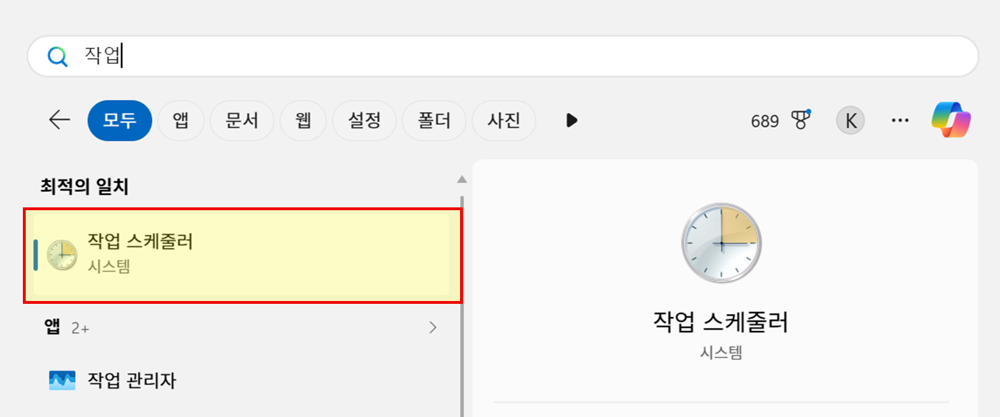
- 우측 작업 패널에서 “작업 만들기” 클릭

- 일반, 트리거, 동작 설정
- 일반: 이름 입력
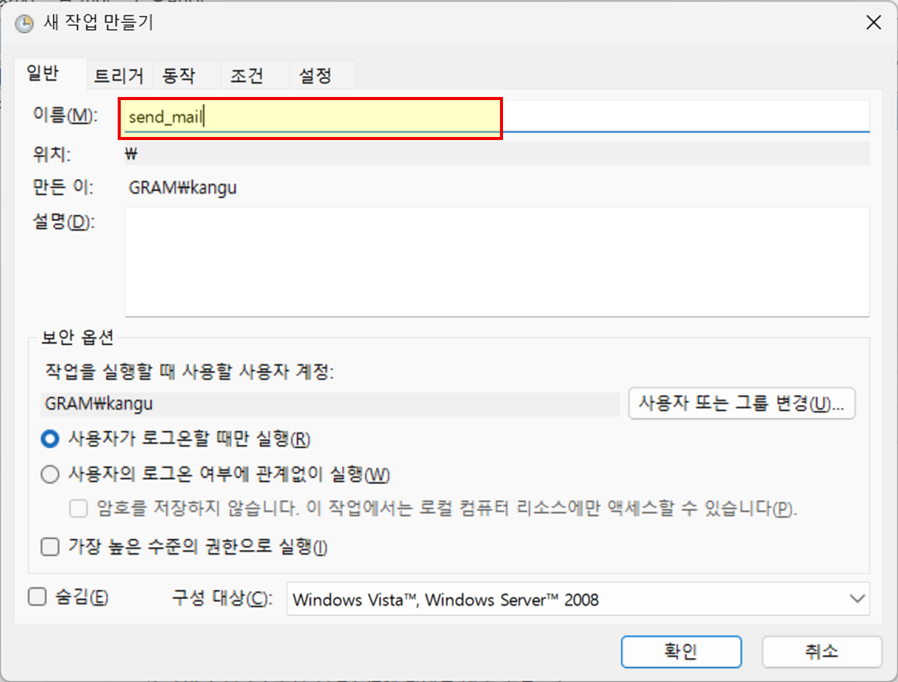
- 트리거: 새로 만들기 → 설정
- 설정에서 원하는 주기와 시간을 지정하고 확인

- 동작: 새로 만들기 → 설정
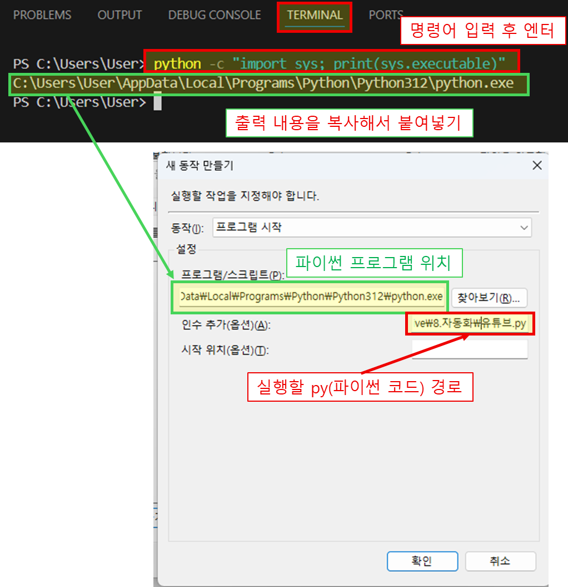
- 프로그램/스크립트에 내 컴퓨터 파이썬 프로그램 실행파일 경로
- 내 파이썬 프로그램 실행파일 위치 찾는 방법
(터미널 창에 다음의 명령어를 입력)명령어내 파이썬 프로그램 실행파일 위치 찾는 방법 (터미널 창에 다음의 명령어…python -c "import sys; print(sys.executable)"
- 인수 추가에 내가 실행할 파이썬 코드 파일 경로 입력
- 확장자가 py인것만 실행 가능(ipynb파일은 안됨)
5.2내가 만든 코드 배포하기
1.PyInstaller 설치
- 터미널 창에 다음의 명령어를 입력하여 PyInstaller 설치
pip install pyinstaller
2.변환 명령어 입력
- 주의사항: VSCode 이용 시 현재 터미널이 위치한 폴더에 변환할
.py파일이 있어야 함 - 본인의 상황에 맞는 명령어를 입력하여 파일 변환
- 아래 예시의
myscript.py대신 본인의 파일명을 입력 - 변환 후
exe파일은 현재 폴더의dist폴더 안에 생성됨 build폴더와 같은 위치에 생성되는.spec파일은 특별히 다시 사용할 계획이 없다면 삭제해도 됨
3.가장 간단한 변환
.py파일을 하나의.exe파일로 변환
pyinstaller --onefile myscript.py
4.콘솔창이 뜨지 않게 만들기
- 실행할 때 검은색 터미널 창이 나타나지 않도록 변환
pyinstaller --onefile --noconsole myscript.py
5.외부 파일을 EXE에 함께 포함하기
- 엑셀 양식, 이미지, 설정 파일 등 프로그램 실행에 필요한 파일을 함께 포함할 수 있음
"파일명;저장경로"형식으로 작성.은 프로그램 내부의 현재 위치를 의미
pyinstaller--onefile--add-data"template.xlsx;."myscript.py
6.외부 파일을 사용할 때 주의할 점
7.상대경로 문제
파이썬 코드에서는 다음처럼 파일을 불러오는 경우가 많음
pd.read_excel("data/매출자료.xlsx")이처럼 작성한 경로를 상대경로라고 함
상대경로는 파일의 절대적인 위치가 아니라 현재 프로그램이 실행되고 있는 위치를 기준으로 파일을 찾는 방식
파이썬 파일을 직접 실행할 때는 정상적으로 작동하더라도, EXE로 변환한 뒤 다른 위치에서 실행하면 파일을 찾지 못할 수 있음
대표적인 오류:
FileNotFoundError
8.해결 방법 1. EXE 파일 위치를 기준으로 경로 설정
EXE 옆에 data, template 등의 폴더를 같이 배포하는 경우 사용
importosimportsysifgetattr(sys,"frozen",False):base_path=os.path.dirname(sys.executable)else:base_path=os.path.dirname(os.path.abspath(__file__))file_path=os.path.join(base_path,"data","매출자료.xlsx")
예시 구조:
자동화프로그램 ├─ 자동화프로그램.exe └─ data └─ 매출자료.xlsx
상대경로를 그대로 사용하기보다 프로그램 위치를 먼저 확인한 뒤 필요한 파일의 경로를 만드는 방식이 안전함
9.해결 방법 2. 사용자가 파일을 직접 선택하도록 만들기
입력 파일의 위치가 매번 달라질 수 있다면 파일 선택창을 사용하는 방법이 편리함
fromtkinterimportfiledialogfile_path=filedialog.askopenfilename(title="엑셀 파일 선택",filetypes=[("Excel files","*.xlsx")]
)10.EXE에 파일을 포함할지, 외부에 둘지 결정하기
-add-data를 사용하면 필요한 파일을 EXE에 포함할 수 있음
단, --onefile 방식에서는 포함된 파일이 실행할 때 임시 위치에 풀려서 사용됨
따라서 프로그램이 읽기만 하는 파일에는 적합하지만, 사용자가 수정하고 그 수정 내용을 계속 유지해야 하는 파일에는 적합하지 않음
| 파일 종류 | 권장 방식 |
|---|---|
| 로고, 아이콘, 이미지 | EXE에 포함 |
| 수정하지 않는 기본 템플릿 | EXE에 포함 가능 |
| 사용자가 수정하는 엑셀 양식 | EXE 외부에 별도 보관 |
| 계속 변경되는 설정 파일 | EXE 외부에 별도 보관 |
| 프로그램이 생성하는 결과 파일 | EXE 외부에 저장 |
예:
견적서자동화 ├─ 견적서자동화.exe ├─ template │ └─ 견적서양식.xlsx └─ output └─ 생성된견적서.xlsx
이 구조에서는 사용자가 견적서양식.xlsx를 수정하면 이후 프로그램에서도 수정된 양식을 계속 사용할 수 있음
11.배포 전에 꼭 확인할 것
코드가 실행되는 것과 다른 사람의 컴퓨터에서 정상적으로 실행되는 것은 다른 문제
EXE를 만들기 전에 다음을 확인
- 입력 파일은 어디에 있는가?
- 사용자가 수정해야 하는 파일인가?
- 프로그램이 파일을 어디에서 찾을 것인가?
- 결과 파일은 어디에 저장할 것인가?
- 다른 컴퓨터에서도 같은 폴더 구조를 사용할 수 있는가?
12.기억해야 할 핵심
EXE 내부에 넣는 파일은 프로그램의 일부,
외부에 두는 파일은 사용자가 관리하는 데이터라고 생각하면 됨
그리고 상대경로를 사용하는 자동화 프로그램이라면 EXE만 전달하면 끝나는 것이 아니라 폴더 구조까지 함께 설계해야 함.
나의 이야기
나의 이야기